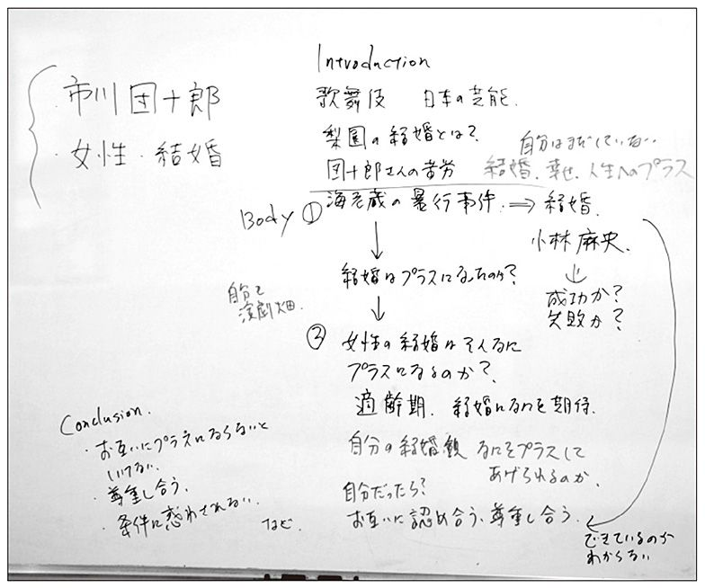
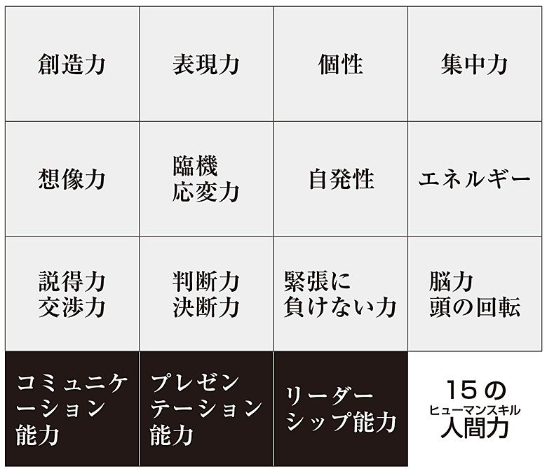

| 誰でも人前で台本なしに10分間話せるようになる本 | |
| 別役 慎司 | |
| (2013) | |
企画協力 企画のたまご屋さん
編集協力 片桐克博（編集室カナール）
装 丁 轡田昭彦＋坪井朋子
本文組版 朝日メディアインターナショナル株式会社
漫画、小説、一般書籍 RAW ZIP RAR 無料ダウンロード http://13DL.NET
はじめに
テクニックなんて一つも使わずに話し上手になる方法があります。そのカギは即興力です。小手先のテクニックや表面的な理論・ノウハウに頼ってきた人は、もうそんなものは捨ててしまってはいかがでしょうか。
緊張に弱いのに、テクニックや理論で武装しても、結局ラクにはならないし、いくら入念に準備をしても、不測の展開になるととたんにガタガタと崩れて対応できなくなります。本番に強くなってしまうのが、最も簡単で根本的な解決策です。
本書はスピーチやプレゼンの本でありながら、これまでのようにテクニックやノウハウを紹介するものではありません。誰もが即興力を発揮して、個性的で創造的なスピーチができるようになるための本であり、総合的な人間力の向上に目を向けた本です。
これらのメソッドはすべて、世界最前線の俳優トレーニングから生まれました。
私は、芸術家であることと教育者であることの両方を大事にしています。人生の半分以上、演劇と関わり、劇作家として演出家として、指導者として研究者として、また俳優として現役で活動しています。もともとは日本の演劇界を変革したいという思いで研究・開拓した世界最前線の俳優トレーニングですが、現在は対象領域を広げて、ビジネスに携わる人や一般の人向けの教育や研修としても応用させています。
とくに、インプロヴァイゼイション（即興）の力はとても魅力的です。よく見かける「魔法のような」とか「奇跡の」という形容詞が、まさに事実として当てはまるのです。みなさんも、今以上に即興力が身につき、俳優のような豊かな表現力を手に入れられたなら、きっと世界が変わると思いませんか？
スピーチやプレゼンでは、たんに原稿を読み上げるのではなく、その場の空気を読みながら個性溢れる話ができるようになります。緊張が自信に変わり、不安が楽しみに置き換えられます。聞き手の心が動き、空間を巻き込めるようになります。
人生はまさに即興そのものなので、ビジネスにかぎらず実生活全般において、これまでとは異なるパフォーマンスを世に示せるようになります。
なぜ俳優トレーニングがそんなにも優れているのか。なぜ海外の優良企業が演劇を研修に取り入れているのか。それは、シェイクスピアが「この世は舞台、人はみな役者」と言ったように、人生は演劇と同様であり、逆に言えば演劇は人生そのものであるからです。つまり、俳優はありとあらゆる人生を、大勢の人の前で、自然にリアルに表現しなければいけないので、俳優トレーニングは人生のトレーニングにもなるのです。
演劇は２５００年以上、人の心に訴え、人の心を動かすことを考えてきました。ビジネスの世界でも真剣に人の心を動かすことを考えているのはわかりますが、多くはいまだに人の心を騙すことばかり考えて、テクニックやノウハウばかりが氾濫しているように思います。
演劇は、人の心を動かす本質的な力を長いあいだ求め、そして培ってきたのです。人間は不自然さを嫌うので、自然さを求めました。人間は退屈さを嫌うので、楽しさを求めました。人間は共感したいので、真実味と物語性を求めました。そして、長い歴史の果てに、こうした理想をすべて生かせる方法を発見したのです。そう、それが即興力なのです！
２０１３年11月
別役慎司
誰でも 人前で 台本なしに10分間話せるようになる本■目次
受け身が身についている／右へならえの教育制度が、リスクを冒さない子供を作る／不正解を恐れる呪縛が積極性を奪う／ソーシャルゲームが自己表現力を衰えさせる／表現しない若者たち／表現できない大人たち／話し下手のからくり／話し上手な人は、瞬間的な反応力に優れている／空気を読むにはどうすればいいか／空気を共有するには？ 空気を作る、巻き込む
人生は即興そのもの／会議で即興力を発揮する／恋愛で即興力を発揮する／悪徳商法から身を守るときに即興力を発揮する／窮地に追い込まれたときに即興力を発揮する／アイディアを出さなければいけないときに即興力を発揮する／街で困った人を見かけたときに即興力を発揮する／【即興力テスト】こんなシチュエーション、あなたならどうする？
①自分の口癖をチェックしてみる／②ファーストコンタクト実験／③空気から離れて、空気を読む／④相手のパスを肯定的に返す・⑤否定的に返す／⑥相手にパスを出す／⑦「聞く」と「話す」のバランスを考えながら会話してみる／⑧ユーモアを入れてみる／⑨伏線を使ってきれいにまとめる／⑩相手のジェスチャーを観察する／⑪テンションが移るか試してみる／⑫願い事を叶えてもらう
料理のおいしさは、食材にあるのか調味料にあるのか／【秘訣１】楽しむことで緊張に強くなる／【秘訣２】空気を読み、瞬間的に言葉を返す／【秘訣３】人生経験を利用し、言葉に感情を込める／【秘訣４】失敗を恐れず、今に没頭する／【秘訣５】インスピレーションの泉からアイディアを出す／【秘訣６】虚飾ではなく、自分らしさを出す／【秘訣７】言葉にパワーを宿し、相手に好影響を与える
スピーチの殻を破る／台本なし、テーマはランダム。即興スピーチでどれだけ話せるか？／テーマを与えられて、準備時間10分間で、10分以上スピーチができるか？／どんな指導をすれば、10分間即興スピーチが可能になるのか？／そのうえスピーチを「劇的」にする／微細な感情力を鍛える「24の感情」トレーニング／感情のエネルギーとリアリティを持続させる「喜怒哀楽」トレーニング／どんな素材でも人を惹きつけられる「観察スピーチ」トレーニング
インプロトレーニングがもたらす15の人間力／創造力＆想像力を鍛える／表現力＆個性＆自発性を鍛える／集中力＆エネルギーを鍛える／説得力・交渉力＆脳力・頭の回転を鍛える／判断力・決断力＆臨機応変力＆緊張に負けない力を鍛える／コミュニケーション能力を鍛える／プレゼンテーション能力を鍛える／リーダーシップ能力を鍛える
他のセミナーや研修と何が違うのか？／即興力がこれからの時代を生き抜く鍵になる／ビジネスインプロ／ビジネスゲーム／スピーチトレーニング／ムーヴメント・トレーニング／アレクサンダー・テクニーク
あなたを殻にこもらせるもの／問題は不安や恐れ／自己卑下や自己嫌悪への対処／人間関係はあなたの内面の表われにすぎない／人は生まれてきて、どうしてこんなにも多くの人と交流するのか／会社は人と出会う社／自分のためか、他者のためか／人と合わせなくていい。あなたの価値観を示せ／相手に最高のイメージを重ね合わせることができれば最強／「今」にパワーがある
役作りというもの／別の人間を演じるということは／プロの俳優が使う役作り表とは／ロールプレイングという手法
「人」の時代の到来に鍵となる俳優トレーニング／本当の個性と歪んだ個性／自分を繕うことをやめて、自分が主役だという自覚を持つ／人と同じことをするな。脇役根性を捨てろ／独白は主役の一番の見せ場。心のなかの葛藤を語ろう／人はあなたの物語に惹きつけられる
〈FEATHER IMPRO ACT PROJECT〉クラス紹介
殻破りインプロトレーニング／女優インプロ／劇的な会議／劇的なスピーチ／会社まるごと変革計画／専門ロールプレイヤー派遣／シアタープロモーション
第１章 どうして日本人は話し下手なのか
受け身が身についている
受け身の人に「積極的になれ」と言っても無理があります。
おそらく当人も受け身ではいけないことを自覚していて、積極的・能動的になりたいと思っているはずですが、受け身が身についてしまっている人は、その殻を破るのが怖いのです。
人生において、受け身な態度を取りつづけて成功した人はいないでしょう。けれども、受け身な態度で、トラウマになるほど失敗体験をすることもあまりないでしょう。防御しつづければ、勝つことはできないまでもダメージを軽減させることはできます。
失敗体験は成功体験よりも強く心に残るものです。
たとえば、子供の頃、教室で挙手を求められたとき、本当は発表したいことが頭にあったのに手を挙げなかったかもしれません。でも、そのことはすぐに忘れてしまいます。しかし、思いきって手を挙げて発表し、その結果トンチンカンなことを言ってしまって笑われたとすると、その失敗体験は強烈に残って、ますます積極的になるのが怖くなります。
人間の自我は、根本的に防衛システムに基づいて形成されていきます。
辛い経験をすると、不安や恐れから、それらを避けようとする意識が働きます。新鮮で未知なるものに向かって進んでいきたいという思いもある反面、防衛システムに基づいた学習記憶は、リスクを冒さないように働きかけるのです。
ですから、幼少期から青年期までに、「～してはいけない」「～すると、こんなまずいことになる」ということを、親や先生から言われつづけたり、実際に失敗体験で学習を繰り返していくと、成功への王道である「リスクを冒して、積極的になる」ことができなくなります。
実際に、リスクを冒さなければ、強烈なネガティブ体験をすることもないので、自我は「安全に切り抜けた」と認識します。
しかし、リスクを冒してでも積極的な行動に出て、その結果、周囲の人たちから評価や承認、賞賛をもらえると、この上なく嬉しくなります。ポジティブな感情体験として記憶に刻まれます。また、自分だけの問題ではなく、他者のためになったり、社会のためになったり、その積極的な行動が周囲に好影響を与えると、自信や満足感を得られます。
理性では、その素晴らしさを理解しています。ですから、「恐れていてはいけない」「もっと積極的にならないといけない」と心を奮い立たせるのです。そうした思いすらなくなり、いわゆる自己卑下や絶望感、無力感にまで感情のレベルが沈んでくると、抜け出すきっかけすら巡ってこなくなるでしょう。
幸いにも、「殻を破りたい」という願望を持っている人はたくさんいます。
しかし、殻を破るための自己啓発書や成功哲学書はたくさんあるものの、実際にメソッドとして行なわれてはいません。セラピーなど心理療法で心の壁を少しずつ溶かしていくのではなく、トレーニングとして、研修として、教育として、誰もが実践できるようなメソッドがあるでしょうか？
「そんなものがあれば聞いてみたい」と思われるかもしれません。
その究極的なメソッドこそ、演劇トレーニングなのです。
とくに、「即興」が魔法のような効果をもたらします。
本書では、「即興」を使った演劇トレーニングが、どれだけ人間の教育と成長に役立ち、実際に「殻を破る」ことができるのか、さまざまな角度から述べていきます。
ここでは、もう少し「受け身」の話を続けましょう。
右へならえの教育制度が、リスクを冒さない子供を作る
日本の教育自体が、没個性奨励型であり、出る杭は打たれ、右へならえの性質を持っています。そのせいで、個性を開花させることが難しく、個々のきらめく創造性を抑圧してしまっています。成績が飛び抜けると尊敬されますが、性格が飛び抜けると問題児扱いです。否定され、問題視され、模範的な人間を見習うように言われ、個性が花開く可能性が殺されていくのです。
徒競走で全員一緒にゴールするとか、シンデレラを女の子全員で演じるなどは、明らかに行き過ぎです。
しかしこれも、競争には勝ち負けが生まれ、人生には成功・失敗が生まれることを学習しすぎた社会全体の防衛システムのせいだとも言えます。
ネガティブな面に目を向けて守りに入るのではなく、ポジティブな面に目を向けて積極的な行動へとつなげるべきです。
競争は、勝者と敗者を分けるためにあるのではなく、成長や達成感、新しい価値観への気づきを得るための有効なツールなのです。競争の前提は、個性をいかに開花させ、いかに独自の創造的な人生を見つけて歩むかにあるべきです。それならば、誰もが勝者になれる可能性があります。
右へならえで一緒にゴールしようとするのではなく、誰もがおのおののゴールを目指せるようにすればいいのです。
個性を開花させ、勇気と喜びをもって独自の道を開拓させられれば、教育としてこの上ないと想像する人はたくさんいるでしょう。
しかし、実際にはこれは非常に難しく、ゆとり教育のつまずきが示すように、現在の教育関係者には明確な指針がなく、試行錯誤が続いています。すでに存在する常識や慣習の上に、まったく真逆のものを作ることは困難です。土台を壊すくらいでなくてはいけません。
「即興」は、実は土台を壊すくらい、今までの教育とは１８０度違うものなのです。
成功と失敗の概念が崩れ、
勝者と敗者の関係が崩れ、
相対評価ではなく絶対評価になり、
受動から能動になり、
知識を貯めるのではなく放出し、
記憶ではなく気づきになり、
静かに学ぶのではなく動いて学び、
頭と身体の分離が結合になり、
真似るのではなく真の自分像を求め、
焼き回しではなく創造になる。
まさに、魔法のメソッドなのです！
不正解を恐れる呪縛が積極性を奪う
「積極的になろう、能動的になろう、勇気を出そう」と思っても、そう簡単に実行できないのではありませんか？
私たちは、いつのまにか、そんな思いを実行させまいとする足枷をはめられているからです。それは、失敗への恐れ・不正解への恐れです。
こうした恐れは生まれつきあるものでしょうか？ いえ、ありません。これらは、生まれてからのちに身につけてしまったものです。
この足枷を解き、呪縛を解きはらうには、成功体験・正解体験で上書きするか、失敗や成功、不正解や正解のない世界に行くしかありません。
失敗や成功、不正解や正解のない世界など存在しないので、成功体験・正解体験で上書きするしかないな、とみなさんは考えるでしょう。しかし、私は、失敗や成功、不正解や正解のない世界こそ、この世の真実の姿だと思っています。
人間たちが失敗や成功を存在させているだけで、根本的にはそんなものはないと思っています。自由こそが真実の姿なのです。だからこそ、人間は自由を感じるとき、魂から喜びを感じるのです。
即興はとても自由です。創造的で、同じものが二つと存在しません。まさしく自然界と同じなのです。
「インプロ」（即興を使った演劇トレーニングを「インプロ」と呼びます）を体験する人の多くが、楽しさやすがすがしさを感じます。それというのも、自由と創造という、人間にとって根本的な要素が入っているからです。
原則として、私は失敗や成功、不正解や正解など存在しないと思っていますが、私たちの社会はこの両極の存在を前提として成り立っているので、便宜的に存在するとして話を進めましょう。
即興で、成功体験・正解体験を築いて、上書きすることができるでしょうか？
答えは全面的にＹＥＳです。
人生は即興そのものです。しかし、即興トレーニングであれば予行演習としていくら失敗してもかまいませんし、成功すれば自信になります。また、人生であれば、結果を求めるあまり不安や恐怖に駆られますが、トレーニングであれば、結果を過度に意識することなく、楽しく実践できます。
実践を続けていると、自然に上達していきます。未知のものに挑むことが楽しくなると、行動することへの不安や緊張が薄れ、積極的・能動的になり、より創造的なパフォーマンスへと昇華させることができるのです。
即興を使った演劇トレーニングでは、同じ結果は二つと表われません。すべてが異なります。つまり、そこには正解と不正解が存在しないのです。「これはうまくいった」「こんどのはあまりうまくいかなかった」という自己判断は存在しますが、客観的な基準で正解・不正解を示されることはありません。そこが学校教育やビジネス研修と大きく異なるところです。
ソーシャルゲームが自己表現力を衰えさせる
自己を表に出すことへの不安や恐れは、どこの国の人たちにとっても程度の差こそあれ存在するでしょう。しかし、日本の教育システムや凝り固まった価値観が、よけいな呪縛を増やしているのは間違いありません。
この問題の元凶を探せば、食生活や運動不足、インターネット依存、携帯依存なども挙げられるでしょう。これらに共通するのは身体を使わないということです。
若者を中心に依存の温床となっている、パソコンや携帯でのソーシャルゲームを例として挙げましょう。ソーシャルゲームは、ほとんど頭を使わずにできる単純なもので、不特定多数の人たちと交流ができ、ゲームクリアを競い合ったり、協力してクリアすることができます。
こうしたゲームでは、サイバーエージェント社の「アメーバピグ」のように自分のアバターが仮想世界を動きまわります。画面上のアバターを動かして、他のユーザーと会話したり、アイテムを購入して、自分なりの部屋を作ったり、服を着たりすることができます。自分自身が動くことはありません。マウスや携帯を操る指先が動くだけです。
身体を使わなければ、実生活でのリアルな表現力を育成することはできません。ボディーランゲージが希薄となります。加えて、画面に熱中することで姿勢も悪くなります。
さらに、ソーシャルゲームにはリアルな感情表現がありません。ボタンを押せば、喜怒哀楽の決まったアクションをするだけです。こんなコミュニケーションで表情豊かな人間に育つことはありません。
普段から表情が乏しく、無理に表情を作っても何を考えているかわからない不自然な表情になるという人は、実生活で表情を使っていないことが原因の一つです。人との交流が、ゲームのなかだけになれば、おのずと実生活での交流は苦手になります。
これらのソーシャルゲームには、「代用」というキーワードが潜んでいます。人との交流を実生活ではなく、仮想世界のアバターが代用するのです。
仮想世界のなかでのコミュニケーション能力は上達するでしょうが、実生活では経験が蓄積されず、いざ実生活でのコミュニケーションになると、不安や恐怖を感じるようになってしまうのです。
また、ソーシャルゲーム内では、巧みに課題が与えられ、それをクリアするとアイテムがもらえます。お金を払えば他のユーザーより優位に進めることができます。社会問題になっている高額課金そのものよりも、人生の醍醐味である目的の達成を、簡単な課題でクリアしてしまうという「代用」が、人生を生き抜く力を衰えさせる大きな原因になっていると思います。
時間さえかければ目的が達成され、アイテムのご褒美までもらえるのです。実生活で、失敗体験や挫折体験がこびりついている人でも、この世界であればコンスタントに成功体験を代用することができます。
こんな「代用」が、人生において何の役に立つでしょうか？ 彼らは、実生活から離れ、ゲームという殻のなかで、代用行為に没頭しているだけなのです。
外に出なければいけません。殻を破らなければいけません。頭も身体も存分に使わなければいけません。
人生において、自分だけの目的を見つけ、課題をクリアしていかなければいけません。
ゲームの世界は、与えられた創造の世界であり、自分独自で切り拓く本当の意味での創造はそこにはありません。今の若者は、コミュニケーション能力、表現力だけでなく、創造力も減退させているのです。
表現しない若者たち
自己表現力が養われるどころか減退している若者たちが社会人になったとき、ぶち当たる大きな壁が「人と人とのコミュニケーション」です。
実際、新入社員に手を焼いている企業はたくさんあります。ビジネスは、究極的には「人」であるのに、人と人とのコミュニケーションが最も苦手というのでは、如何ともしがたいでしょう。ビジネスのあらゆる領域で業務効率が悪くなるだけでなく、おそらく本人が仕事をまったく楽しめないので、鬱病や離職者も増えることでしょう。
こんなに致命的な状態になっているのに、数多くあるビジネス研修では、相も変わらず表面的なスキルやテクニックの習得に専心しているのが不思議です。ビジネス研修の多くは、ぬかるんだ土台の上に一生懸命杭を打とうとするものであり、土台そのものを強固にしようという意識は低いといえます。かつては強固だった土台も、現在はさまざまな影響で、すっかり弱くなってしまっていることに気づき、勇気を持って既存の研修のあり方を見直さなくてはいけません。
ビジネスを成功に導くためにも、若手を中心に即興力を鍛えて、自発性と創造性に溢れた人材を育成していく必要があるでしょう。
この項目のタイトルを、「表現できない」とか「表現が苦手な」としないで、「表現しない」とした理由は、積極性があっても表現がうまくいかないというより、「積極性もなく表現もしない」若者が増えているからです。
この恐ろしい現象の、根本的な問題を理解しているでしょうか？
ビジネスの販売戦略で、口コミが今まで以上に重視されるようになりました。ソーシャル時代ならではの現象ですが、これは裏を返せば、自分で決断するのではなく人の意見で決断するという主体性のなさの表われですし、目や耳、手触りなど五感でみずから判断することが減ったということです。つまり身体を使わなくなったのです。
先ほどの「代用」で説明するなら、みずから五感で判断すべきところを、ソーシャル上の口コミで代用し、判断しているのです。
私たちは、ソーシャル時代にうまく適応しようと努力していますが、ソーシャル時代によって弱体化してきている問題に対応しきれていません。というのも、身体を使わないこと（五感を限定的にしか使わないこと）が、判断力・決断力を衰えさせているのです。
表現しない若者は、表現したくないのでしょうか？
私はそうは思いません。むしろ、「表現してもいいことを知らない」と言えます。ずっと右へならえできたので、「自分を出してはいけない」のだと思っているのです。そうであれば、表現してもいい、自分を出してもいいということを教えてあげなくてはいけません。それも言葉ではなく、体験として。
・個性を出していい
・感情を素直に表に出していい
・身体いっぱい自己を表現していい
・自分で判断して、自分で行動していい
こうしたことを大人たちが教え、そのとおり体験できるように導いてあげるべきです。でないと、表現しない若者たちは、日本社会を牽引する人材にはなりえません。そして、大人たちもまた、これらを実践して、手本となるのが理想です。年を取ると、古い習慣や価値観を改めるのは難しく、固い殻をこじ開けられません。しかし、慣れ親しんだ選択ばかりしないで、若者たちの手本となるためにも、進んで新しい価値観を選択していってほしいと思います。
表現できない大人たち
大人たちは、とくに高年齢になるほど、表現できない人が多くなります。表現しない以前に表現できないのです。若者たちは、表現するきっかけさえ得られれば、抜群の創造性を発揮しますが、年齢が高くなってくると、きっかけのあるなしにかかわらず表現できなくなります。
しかし、これは一口に悪いことと捉えるべきではありません。人生経験の重みと深みがあれば、言葉の端々に、また身体の一挙手一投足に、その人ならではの表現がにじみ出るからです。人生の経験は表現力に関与します。
20代後半から30代にかけて、表現力のある人間であるか否かが、出世や成功に大きく影響します。円滑なコミュニケーション能力、才気煥発な独創性、果断な決断力、説得力のあるプレゼンテーション、信頼と尊敬を集めるリーダーシップ能力。表現できる大人は、エネルギッシュに人生を切り拓いていきます。
そんな勝ち組になれなかった負け組の大人たちは、ますます表現ができなくなり、すくすくと殻を育て、厚くしていきます。話し下手で自信がなく、プレゼンも単調で退屈、決断力も鈍く、人を引っ張る力もない。表情に魅力がなく、肉体は衰えるばかり。独創的なアイディアを出すこともなく人に追従するのみで、揚げ足を取るのだけはうまい。円熟の年齢でこれでは恥ずかしいでしょう。
ある程度年齢を重ねると、挽回するのも大変です。知識であれば、必死に勉強すれば短期間でなんとかなりますが、コミュニケーション能力やプレゼン・スピーチ能力、リーダーシップ能力、決断力、創造力などは、短期間ではどうにもなりません。古い習慣や価値観が上達の邪魔をするのです。
しかし、「人間力（ヒューマンスキル）」が消えてしまったわけではありません。発揮されず、固い殻の奥に押しやられ、すっかり衰えてしまったにすぎません。勉強で呼び覚ますことはできませんが、体験で呼び覚ますことはできます。
即興は、眠れる人間力を呼び覚ますためにうってつけの方法なのです。
話し下手のからくり
さて、ここからは話すことにテーマを移しましょう。
これまで述べてきたように、今の日本では、不安や恐れ、失敗体験の積み重ね、右へならえの教育システム、身体や五感を使わなくなった社会状況といった要因が、自己の表現力や人間的なスキルを埋没させることになっています。それは当然、話し下手にもつながるわけです。話し下手は表現力低下の一側面です。
本書で「話す」というのは、講演・プレゼンなどの一方向のスピーチから一般的な双方向の会話まで含みます。一方向と双方向では大きな違いがあります。みなさんにとって、どちらが難しいと感じるでしょうか？
これは人によって異なります。
●一方向（講演・プレゼンなど）が難しい場合
・緊張や不安、成功へのプレッシャーを感じる。
・対話がなく、自分の発話だけでほぼ全時間を埋めないといけない。
・伝わりやすさを意識して、表現を工夫しないといけない。
・構成やテーマなど、考えるべきことが多い。
など。
●双方向（対話・会話）が難しい場合
・相手の反応がダイレクトに返ってくる。
・相手がたくさん話すと、自分の話したいことを話す隙がない。
・話題がくだけすぎて、中身がない。
・相手によって緊張の度合いや言葉遣いが違う。
・素の自分を見られる。
など。
一方向の場合は、言い換えればプレゼン・スピーチ能力で、双方向の場合はコミュニケーション能力です。
あなたがもし話し下手と自覚しているなら、どちらのタイプの話し下手でしょうか？ 両方でしょうか？
話し上手になるためには、一方向か双方向かによって、対策が異なります。
●一方向の強化
・緊張に強くなる。
・頭のなかで論理的にまとめられる脳力を鍛える。
・集中力を発揮できるようにする。
・全身表現を身につける。
・知識を増やす。
・発声法を身につける。
など。
●双方向の強化
・聞いて、反応する力を養う。
・ウィットやユーモアを生み出す脳力を鍛える。
・表情を豊かにする。
・相手の気持ちを推し量れるようにする。
・自分に自信を持つ。
など。
実は、知識の蓄積以外は、すべて演劇的なトレーニングを通して伸ばすことができます。これらを、本などに書いてあるテクニックやノウハウだけに頼ると、破綻は避けられません。「話す」という行為の質を高めるには、総合的な人間力がものをいうのです。
話し上手な人は、瞬間的な反応力に優れている
「この人は話し上手だな」と思うのはどんなときでしょうか？
おしゃべりな人は「話し好き」なだけであり、知識豊富な人は「物知り」なだけです。一般に、「話し上手だな」と思うのは、当意即妙な受け答えに秀でた人や、ユーモアやウィットに溢れた会話を展開できる人ではないでしょうか。いずれも、頭の回転の早い人です。
当意即妙とは、大辞林によれば「その場の状況や変化に対して、即座に機転をきかして対応すること。気がきいていること。また、そのさま」とされています。つまり、瞬間瞬間で反応・判断して、頭脳的で空気を読んだ対応ができるということです。
これは、たとえば「結論を先に話して、それから理由や事例を述べて、最後にまた結論に戻れば伝わりやすい」という、いわゆるＰＲＥＰ法や、「相手の目を見るのではなく眉間あたりを見ると、緊張もしないし失礼にも当たらない」などの、テクニックやノウハウとは別次元のことです。ごたいそうな交流分析や心理学とも関係ありません。
しかし、話し方教室やビジネス研修では、本質から逸れてテクニックやノウハウに頼ります。それは、すぐに使えるし、たとえ表層的であってもわかりやすく結果が出るからでしょう。ところが、そんな表層的なテクニックやノウハウは、うまく使える場合もあれば逆効果の場合もあります。表層的なので、見透かされれば嫌われることもあるし、その人の個性と合っていなければ、不自然に見えます。
本質を追求するためには、個性をベースに置いたうえで、トレーニングと実体験を通して、その人のさまざまなスキルを伸ばしていくしかないのです。すぐにわかりやすい結果が出るわけではありませんが、徐々に進化し、変容していくことができるのが即興を主体とした演劇トレーニングです。とくに当意即妙な話術や臨機応変力は、一朝一夕で身につくものではありません。これらに対して、私がどのようなトレーニングを提供しているかは、これから具体的に紹介していきます。
ところで、ユーモアやウィットも、瞬間的な反応力が優れていなければ繰り出すことができません。会話上手な人は、相手の言葉を受けてうまく笑いにつなげることができます。準備も計算もなく、素早く相手の言葉を活用して笑いをとるのは、頭のいい人にしかできない技だと思うかもしれませんが、即興的に反応することを習慣づけることで、誰でも脳が瞬時にアイディアを出してくれるようになります。
「オヤジギャグ」も、言ってみれば瞬間的な反応力の賜物ですが、こちらは笑いにつなげるというより失笑につながります。ギャグを前もって備蓄する人までいます。準備したオヤジギャグは、取りつく島もありません。
というと、「しま（島）った」とギャグを言ったりします。
このとき、若い人たちを中心に場が白けます。オヤジギャグはたんなる言葉の連想であって、他者の気持ちや場の空気を読んで繰り出すユーモアやウィットとは異なります。空気を読めてこそ話し上手だと言えるのです。
空気を読むにはどうすればいいか
「空気を読む」つまり場の雰囲気を的確に感じとり、他者がどのような反応をするかをつねに予測し調整するのは、なかなか難しいことです。鋭敏な客観性が必要になります。
客観性を養うには、まず自分が主観的な立場ではなく客観的な立場にいるときに、周囲をよく観察しておくことです。日頃から他人の会話を客観的に観察していると、空気を読めていない言動がわかります。それらが、自分に該当していないかを照らし合わせてほしいのです。他人のことはよく見えるので、修正の参考にするのです。
ただ、最も気づきがあるのは他人からの指摘です。トレーニングの形で講師からフィードバックを受けるのも非常に有効な方法です。
一方向型の講演やプレゼンで、空気を読めない人がスピーカーになると、いたたまれない状況になります。冗長すぎて参加者を退屈させたり、自慢話やマニアックな話で辟易させたり、ギャグばかりで失笑させたり、不満や批判ばかりで不快な気分にさせたり、セクハラ・パワハラ発言でやきもきさせたり。誰でもこうした状況に遭遇したことがあるでしょう。
人間は多かれ少なかれ主観的ですが、主観的すぎると、聴衆の迷惑になるスピーチになってしまいます。実際にそうなってしまう前に、失敗の許されるトレーニングという場で、客観的なフィードバックを得るとよいでしょう。
また、なかには空気を読みすぎる人もいます。主観を押し殺してまで客観的になろうとして、他者の反応ばかりを気にする人です。そんな人は、発言も乏しく、積極性に欠けるきらいがあります。
とくに双方向型のように、複数の人物が会話している状況では、彼らは取り残されがちです。会話は止まることなくどんどん進んでいきます。空気を読むことで、発言するきっかけを適切につかまえることができますが、空気を読みすぎて控えめになると、適切なタイミングを逃してしまいます。これも困りものです。
私の提供する「ビジネスインプロ」という即興トレーニングの良い点は、基本的に二人で行ない、お互いに対立する目的が双方にあるところです（コンフリクトタイプの場合）。これなら発言できずに終わるということがありません。
たとえば、Ａさんが「修理代が高すぎるので文句を言いたい」という設定で、Ｂさんが「修理代は妥当な額であることを理解してほしい」という設定の場合、コンフリクト（対立・葛藤）が生まれます。おのずと対話が展開していくことになります。もちろん、相手の気持ちを計る練習になりますし、瞬間的に反応して言葉を繰り出す臨機応変力も養えます。
空気を読めない人も、空気を読みすぎる人も、目的の設定を明確にすれば、問題を回避できるケースが多々あります。
冗長になってしまう人は（まずそのことを自覚する必要がありますが）、「コンパクトにわかりやすく伝えたい」と目的を設定することによって改善が期待できます。発言が乏しくなってしまう人も、「自分の主張をちゃんと伝えたい」と目的を設定することによって、積極性が増します。
こうして、目的を持って実際にやってみるのです。トレーニングでも実際の現場でもいいので体験すること。自己の殻を破るためには、不安や恐怖を乗り越えて、体験しなければいけないのです。
空気を共有するには？ 空気を作る、巻き込む
俳優訓練の伝説的人物に、マイケル・チェーホフという人がいます。あの『桜の園』などで有名なアントン・チェーホフの甥にあたります。マイケル（ロシア語読みだとミハイル）は、ヨーロッパを渡り歩き、ハリウッドでも活躍した人ですが、彼は「アトモスフィア」（atmosphere：空気・雰囲気）を大事にしていました。
聴衆を巻き込む力を持つ人は、独自のアトモスフィアを作りだします。また、くだけた会話でも、話しやすいアトモスフィアの人もいれば、話しにくいアトモスフィアの人もいます。
一方向型と双方向型では、空気の作り方もまったく異なりますが、どちらにしても経験や人柄がものをいうとみなさんは考えるでしょう。確かにそうですが、しかし経験や人柄だけで決まるものでもありません。
表面的なテクニックでは、空気を作るどころか壊してしまいがちです。空気と存在感は似ていますが、テクニックだけで存在感を出せる人はいません。内面と外面がマッチしないと、空気は作れないのです。
いくら高級なスーツを着て、堂々と講演していても、話の中身が適当で冗漫だったりすると空気は作れませんし、すごく中身のあるいいことを話していても、無表情で、身なりがだらしなければ、これまた空気は作れません。内面に自信がないのもダメです。
ある程度、鍛えるべき要点や意識すべき要素があります。
私は、目に見えない要素（たとえば、感情・想像力・意識・五感）を重視しており、舞台の演出をするときも、目に見えない領域のクオリティをいかに上げるかを心がけています。
舞台上の役者たちは、全員が経験豊富な人たちというわけではありません。私の主宰する劇団の出演者には、若い人も、まだ始めて１年という初心者もいます。経験も人柄もさまざまな集団でも、洗練された空気を作ることはできます。こうした演出上の空気作りは、ビジネスにおけるチームビルディングにも通じます。
ここで言いたいのは、誰でも、年齢や経験に関係なく、ある程度は空気を作れるようになるということです。トレーニングややり方しだいで、社会経験を充分に積んだ40代～50代の人よりも、若輩者の20代の人のほうが存在感を出せる場合があります。
私がビジネスインプロやプレゼン・スピーチメソッドを展開している〈FEATHER IMPRO ACT PROJECT〉では、こういうキャッチフレーズを掲げています。
「人生を、自分を主役とした劇場に変える！」
自分が主役になれば、存在感はおのずと出ます。その主役となるためのトレーニングを提供しているのです。
私は、２０１２年末、晴れて一般財団法人日本ビジネスセミナー協会の第一期認定研修講師となりましたが、総合的な講師力を育成する養成講座において、ベテランの研修講師を差しおいて注目されたのが「巻き込む力・場を創る力」でした。
他の受講者がこう言いました。「別役さんが壇上に出ると空気が変わる」と。受講者のなかで私は最年少でした。経験や人柄だけであれば、私ではなく別の人が注目されたでしょう。私の何が違っていたかというと、「パフォーマンス力」でした。
パフォーマンス力というものを分解してみると、次の要素が挙げられるでしょう。実際に私は、講師としての振る舞いのなかでこれらを使っています。
・緊張のコントロール
・自信
・姿勢の意識
・会場全体を取り囲む意識と集中
・会場全体よりやや広く届く声
・言葉の選択
・表情
・目線
・身振り手振り
・歩行
・板書
板書など、演劇では使わないものもありますが、多くは演劇トレーニングでカバーできます。それだけ、人を巻き込む力や空気を作る力に、俳優訓練が効果的というわけです。これらは講師の方だけでなく、プレゼンや講演を行なう人、会議を取り仕切る人など、さまざまな領域に応用がきくのは言うまでもありません。
ここまで、おもに講演やプレゼンの一方向型について、空気の作り方を述べてきましたが、こんどは対話や会話の双方向型での空気作りについて述べていきます。これらはコミュニケーション能力と言いましたが、双方向型の場合、より至近距離で他者を感じることが必要になります。一方向型の場合は、自分が主役となってスポットライトを浴び、自分の空間に変えてしまえばいいわけですが、双方向型の場合、アンサンブルが必要になります。アンサンブルとは舞台芸術の用語で、調和のことです。
空気は、時と場所と人によってまったく変わります。絶えず変化して捉えどころのない空気をいかに読めるかが大切になるわけです。そのためには、他者への意識を強めるほかありません。独りよがりな人は空気を読めない人です。
お互い空気を読むことができれば、空気の共有はスムーズに形成されます。そして、空気が悪いとき、つまり誰かが不機嫌だったり、会話に参加しなかったりしたときには、空気を共有できるように調整しなければコミュニケーションがうまくいきません。
相手の空気を読み取って、自分からアジャストしていくことで共有できるようにするのは、高度なテクニックです。これに長けていれば、営業や交渉も抜群にうまくいくでしょう。
ビジネスインプロは、「営業職の研修に向いている」とよく言われます。それは、即興のなかで、どんな空気をまとっているかもわからず、しかも絶えず変化している相手の空気に、その場で的確にアジャストしていく練習になるからです。あるときは言葉で、あるときはジェスチャーや目線で、つねに実践的に練習ができ、その過程を講師や他の受講生に見てもらうことができるのです。
第２章 あらゆる場で「即興力」を発揮する！
人生は即興そのもの
私たちは、未来を知りません。人生は予測のつかない出来事ばかりで、いつ何時、何が起こるかわかりません。あなたが誰かと話をするときも、その内容の詳細や、どういう言葉で始まり、どういう言葉で終わるのかわかりません。
人生には台本がないのです。
未来がわからないから不安が生まれます。だから、人は、準備に時間をかけたり、いつどこでも通用するような法則やテクニックを求めるわけです。
しかし、それらは本質的ではありません。テクニックやノウハウは多少はあなたを助けてくれますが、脆い武器・防具のようなものです。人生は、あなたの脆い武器・防具など、軽くひっぺがす不測の出来事を起こします。
あなたは、まず生身の自分をスキルアップさせていくことを覚えましょう。それこそ人間力（ヒューマンスキル）です。テクニックやノウハウ、知識に頼って、生身のあなたを弱くさせないことです。
鍛えるのです。
即興力が高まれば、人生の不測の出来事も恐れることはありません。未来が不安ではなく、楽しさで満たされるようになります。
即興力を高める楽しい効果的なワークはたくさんあります。私の提供するそれらは先進的な研修スタイルとしても注目を浴びています。しかし、時間や場所、定員、金銭的な理由などさまざまな制約で、残念ながらほとんどの読者の方に、私は直接指導することができません。
ですが、安心してください。人生が即興である以上、読者のみなさんも実際の人生から即興力を磨くことができます。本章では、人生のさまざまなシチュエーションで試すことができる、「フリースタイル版インプロトレーニング」をご紹介します。
会議で即興力を発揮する
会議というのは退屈なものです。
会議を演劇にしてしまえばどうでしょう？ 退屈でなくなります。能動的で、創造的で、効率がよくなります。会議と演劇という結びつきがピンとこないかもしれません。しかし、可能なのです。私は、会議に演劇の構造を組み入れて会議を変革させる「劇的な会議」という法人向けのサービスも行なっています。これはとても画期的な手法です。
演劇では、観客は見ているだけの受動的な立場です。会議でも、出席者が観客化しているから退屈で非能動的になるのです。「劇的な会議」は、出席者を観客から出演者に変えてしまうので、会議が能動的でドラマティックなものになります。
会議に多く出席するという方は、これからすべての会議が「インプロトレーニング」だと思ってください。会議はレッスンになります。
インプロは即興であり、私が教えているビジネスインプロでは、まるで人生の一場面であるかのように即興で演技をします。
あなたが出席する会議において、あなたの「設定」は何でしょうか？
「え？ 設定？」と思うかもしれません。設定とは、言いかえれば、あなたの一番大きな目的です。
演劇において、目的意識は俳優にとってとても重要です。目的を持った登場人物がたくさん出てくるからこそ、ドラマが生まれ、楽しく、観客の心をつかむものになるのです。会議でも、みんなが目的を持たずに参加していれば、退屈でつまらないものになるのは当然といえます。ですから、あなたは、「自分の努力を理解してほしい」でも「知りたい情報をすべて引き出したい」でも「自分の伝えるべき内容を出席者全員に充分理解させたい」でも「会議を早く終わらせたい」でもいいですが、何か目的を設定すべきです。
目的から言葉や行動が生まれます。
一番大きな目的はつねに忘れないように心にキープしておけば、会議中、小さな目的をそのつど設定変更するのは大いに結構です。
たとえば、誰かの説明でわからないことが出てきたら、あなたの小さな目的は「今の箇所を確認したい」となるでしょう。であれば、目的をそのままにしないで、行動に変えてください。質問すればいいだけです。
基本的なことですが、「～したい」と思って「～する」行動力は大切です。すぐに行動できる自発性を身につけるのです。「～したい」から「～する」まで、なるべくスムーズに達成させましょう。もちろん、空気を読んで、タイミングを見計らう必要があります。
これぞインプロです。インプロでは、その瞬間瞬間を見定めて判断を下さなければいけません。
恋愛で即興力を発揮する
コミュニケーション能力が高い人は恋愛でも成功しやすいですし、話術に長けた人は恋愛でも成功しやすいですよね。ですから、今あなたが恋愛をしているなら、いつでもコミュニケーションや話術を磨く機会があるのです。
あなたが男性であれ女性であれ、恋の真っ最中であるなら、相手の反応や態度、メールの文面などを見ながら、適切な行動や言葉を選択しようと、かなり意識していることでしょう。事前準備もやり直しもできない、まさにインプロです。その恋をインプロだと思ってください。時間制限なしのゲームだと思ってください。
精いっぱい頭を使っているのに、恋のゲームがうまくいかないのであれば、あなたの視野が狭すぎるのかもしれません。主観的になりすぎて、相手の心理を客観的に読み取ることができていないのです。
俳優が即興で演技を行なうときも、主観的になりすぎて客観性が欠けていると、いいお芝居になりません。主観と客観のバランスは、即興力の一要素です。恋愛では、冷静と熱情のあいだで、うまく自分を保つバランス感覚を持ちたいものです。
自分中心の視野の狭さ、過剰な期待、不安定な感情......。こうした状態は、即興力の低い状態です。落ち着いてください。客観性を取り戻し、ゲーム感覚で臨むことによって、失敗への不安を和らげるのです。
また、恋愛に関しても、ビジネスと同様、テクニックやノウハウに頼らないことです。
私は、女性からの恋愛相談をよく受けます。ある人からアプローチを受けて困っているというケースで、メールの内容を見せてもらったことがあります。どんな恋愛マニュアルを読んだのか、テクニックやノウハウだらけで、下心が見え見えでした。肝心の人柄が見えてこないのです。
個性があってこその即興力です。
もしあなたにパートナーがいるならば、もうすっかりお互いの個性や性格は理解していることでしょう。そんな恋愛関係や婚姻関係で気をつけたいのは、相手の欠点が見えるだけに、それを正そうとしてしまうことです。
相手を生かす。これも即興力の一要素です。
俳優も、共演者の足を引っ張ろうとしていたら、いい作品は創れません。会社も、上司が部下を叱るばかりでは、部下は伸びませんし、組織としても成長しません。スポーツも恋愛も、すべて同じことです。
いかに相手を生かせるか。意識して、相手を生かすことを実践してください。パートナーと末永く良好な関係を築いていくには、相手の欠点を指摘するよりも、長所にスポットライトを当てるのです。相手の苦手なところにパスをして、「ほら見ろ、取れないじゃないか」と叱責するのではなく、相手の得意なところにパスを出してあげるのです。
このことは、当然、人間関係すべてにおいて実践できることです。
そして、これができれば、あなたは相当なコミュニケーションの達人だと見られるでしょう。
悪徳商法から身を守るときに即興力を発揮する
マルチ商法、母さん助けて詐欺（振り込め詐欺）、ステルスマーケティング......など、悪質な商法は年々増加し、手口も複雑化しているようです。もしあなたが被害を被ったのなら、あなたは即興の勝負に負けたということです。
悪質とまでは言わないまでも、ネットワークビジネスや宗教団体への勧誘、強引な営業、寄付の依頼、などなど、誰かが明確な意図を持ってあなたを説得しようとすることは一度や二度ではないでしょう。
そんな状況は、変な言い方ですが、実はインプロトレーニングとして最適なのです。
インプロということは、相手もあなたも同じ舞台に立つ役者のようなものです。決して、一方的に勧誘されるだけの弱い立場だと思わないでください。あなたが完全に受け身になってしまうと、相手の思う壺です。相手と同じ舞台に立つ同等の存在だと思ってください。相手は自分のことを主人公だと思っていますが、あなたこそ主人公です。あなたには、判断し、選択する力があります。
もし、誰かが説得しようとしてきたら、広い視野を持って冷静に頭を働かせなければいけません。相手は、あなたの知らないことをたくさん話してくるでしょう。そして、あなたにとってメリットがあることをアピールします。この状況では、あなたは「聞く」立場、相手は「話す」立場という構図です。立場としては弱いと言わざるをえません。しかし、あなたには最終的な決定権があります。究極的には最も強いのです。
たんに「聞く」立場に徹していたら、相手のペースに巻き込まれます。「まずい」と思ったら、すぐに臨機応変に対処するのです。あなたから質問を投げかけるなど、仕掛けてみるのもいいでしょう。
相手は、あなたの表情から心理を読み取ろうとするでしょう。あなたも読み取ろうとしてください。相手が悪徳であれば、仮面をかぶっているので、わざと笑顔を見せたり、わざと呆れた顔をしたり、いろいろな手を使ってくるでしょう。しかし、これは演技です。インプロなのですから、演技するのはフェアです。ただ、あなたは仮面を見破らなければいけません。
「演技」という意識を持つことで、あなたはいつもより自由になれます。俳優も、演技であれば、普段の自分にはない感情表現や行動ができます。あなたも演技という意識を持つことで、相手の巧みな表情や話術に簡単には動じなくなるでしょう。また、あなた自身も普段よりいくらか堂々と物言いができるでしょう。
誰かに説得・勧誘されるというインプロの機会が巡ってきたら、ぜひその機会を楽しみながら、上手に振る舞ってみてください。街中で声をかけられたら、インプロの野試合を挑まれたと思って、そそくさと立ち去らずに受けて立つのもいいでしょう。ゲーム感覚、トレーニング感覚で臨めば、意外に広い視野で見られ、客観的に相手を見て、冷静な判断ができるものです。
また、逆の立場で、あなたが説得・勧誘しなければならない仕事をしているなら（悪徳ではありませんよね）、毎回がインプロの本番ということになります。そんな方々にアドバイスするとすれば、セールストークに縛られないということです。
即興の勝負に台本を持ち込もうとすれば、相手が完全に受け身であればまだ通用しますが、多少即興力の高い人を相手にすると、あなたは不利になります。ですから、セールストークを用意していても、即興で挑む意識が必要です。
窮地に追い込まれたときに即興力を発揮する
問題が起こらないように、普段から入念に準備や対策をしていても、やはり問題は起こります。人生において不測の事態から逃れることはできません。何か問題が起こったときこそ、即興力の見せ場です。
いざというときに本当に役に立つのは、テクニックやノウハウではなく、体験だといえるでしょう。失敗体験も成功体験も、人生を通して積み重ねていれば、心と身体が同時に動いてくれるものです。ですから、頭と身体の両方を使う体験型のインプロトレーニングが有効なのです。
あなたが人生をゲーム感覚で捉え、楽しさというスパイスをいつでも振りかける習慣を持っていれば、失敗体験が挫折に終わることなく、どんな失敗も成功への伏線に変えることができるでしょう。
まず、失敗も成功も、どんな結果も受け入れる態度が必要です。途中で逃げだすことはできないのですから、結果を否定したり、呪ったりしないこと。そのうえで、窮地に追い込まれたとき、あなたに知ってほしいのは、選択肢はまだたくさんあるということです。すぐにチェックメイトだと思わないことです。人間は、追い込まれたときのほうが、創造力を発揮できます。すぐに諦めてしまうと、あなたの内側から湧きあがる創造力は、日の目を見ないままとなります。
ピンチはチャンスです。追い込まれて脳がフル回転し、予想もつかない解決策が閃くこともしばしばあります。
アイディアを出さなければいけないときに即興力を発揮する
私は、戯曲を創作したり、今までにないビジネスモデルを立ち上げたり、アイディアを生み出すのが得意です。世界の俳優訓練から応用したインプロトレーニングもそうですが、会議を演劇の枠組みに当てはめ、ドラマのように活発にさせる「劇的な会議」、研修で行なわれるロールプレイングに即興力の高いプロの俳優を派遣する「専門ロールプレイヤー派遣制度」、動画プロモーションを超える、企業や社長のストーリーを舞台化し上演してしまう「シアタープロモーション」など、いろいろと生み出しています。
こうした発想は、私にとってはとても自然なことです。アイディアは無限にあるということを、私は知っているからです。
アイディアが枯渇して途方に暮れたり、何も出てこないと苦悶する人は、無限の可能性に対してオープンでないのかもしれません。いつでも、どこからでもアイディアは降ってきますが、自己に制限を設けてしまっていては、アイディアをキャッチできません。
人真似ではなく、独創的な発想ができる人も即興力の高い人です。
あなたは、どうしてもアイディアを出さなければいけない状況に追い込まれたとき、どんな行動を取るでしょうか？
最近では、とりあえずパソコンで情報を探るという人が多いでしょうね。しかし、パソコンからアクセスできるのは、すでに存在する古い情報ばかりです。それらを継ぎ合わせたところで、斬新なアイディアにはなりません。私も、パソコンで調べながら斬新なアイディアを思いついたことはほとんどありません。
人は、何もない状態だと何も思いつかないと思っているので、少しでも情報を集めようとしがちです。しかし、何もない状態から始めたほうが、ずっと画期的なアイディアが生まれるものです。情報に頼る気持ちが、自己に制限を設けてしまうのです。
極力情報を排すること。オープンになってください。白紙のノートを前にして思案したり、目をつぶって思案したり、ぼんやり散歩をしたり。実は、そのほうがアイディアが生まれてくるのです。何もないところに、インスピレーションが滑り込んできてくれます。
ビジネスインプロも、大まかな設定を決めたら、即興演技をスタートします。事前にあまり計画せず、真っ白なまま行なったほうが、創造的で面白いものになるからです。
一度何かアイディアが浮かんできたら、数珠つなぎに連鎖して、アイディアが広がっていくことも多々あります。誰も思いつかなかった斬新で画期的なアイディアが浮かんできたときは、実に興奮するものです。
即興力を向上させていけば、あなたは閃きの興奮や爽快感を何度も味わえるようになるでしょう。
街で困った人を見かけたときに即興力を発揮する
電車とホームの隙間に落ちた人を助けるために、駅員と居合わせた乗客みんなで電車を押して隙間を広げて助けたというニュースが、世界でも報道されました。
日本人は、即興的に集団行動ができるという非常に稀な民族で、東日本大震災のさいにもその力を発揮しました。しかし、個人レベルでは、即興的に行動できない内向的な国民性があります。
命令や規定や規範で行動するのではなく、みずからの判断で主体的に行動するのは難しいことかもしれません。瞬間的にさまざまなタブーを考えてしまうのでしょう。
たとえば、道端で苦しそうにうずくまっている人を見かけても、「時間に遅れてしまう」「目立って、かっこつけているように思われるのは嫌だ」「感謝されすぎるのも恐縮だ」「どうせ誰かがなんとかするだろう」「自分の役割じゃない」「この人は自分でなんとかしたがってるかもしれない」などと、行動しない理由をすぐに考えてしまいがちです。
かくして人生のドラマを素通りし、困っている人は置き去りです。
誰かの指示があったり、業務マニュアルで該当する項目があれば、日本人は素晴らしく対処することができます。しかし、それ以外の自由で縛りのない環境では、何もできない人が多いのです。人生が与えてくれた機会を素通りするのではなく、即興力を発揮して、これまでと違う結果を出してほしいのです。
誰か困っている人を見かけたら、既成概念にとらわれて素通りしてしまわないように。あなたの即興力が試されています。即興力の高い人は、何も考えずにすぐに助けるかもしれません。もし、あなたが考えてしまうなら、行動しない理由を考えるのではなく、行動する理由を考えてください。そして、すぐに決断し、行動しなくてはいけません。
あなたがこれまでと違う行動に出て、違う結果を出したなら、あなたは自分の新しい一面を知ることでしょう。自分自身に対する認識が変わります。テクニックやノウハウや知識ではなかなか自己は変わらなくても、実体験であれば、一瞬で自己を変革してしまうことがあるのです。
即興力テスト こんなシチュエーション、あなたならどうする？
あなたが取るであろう行動に、最も近いものを選んでください。
【問１】コンビニで受け取ったお釣りが１００円少ない。後ろには人が並んでいる。
Ａ すぐに指摘して、残りのお釣りをもらう。
Ｂ １００円は惜しいが、何もなかったように店を出る。
Ｃ 不機嫌な態度で、店員が気づくまで待つ。
【問２】アルバイトで、シフトを代わってほしいと言われた。もう３回目だ。
Ａ こんどこそ断わる。
Ｂ 快く代わってあげる。
Ｃ 説教する。
【問３】友人とファミレスに来た。何を注文しようか考えている。
Ａ 最初に食べたいと思ったものを注文する。
Ｂ ゆっくりすべてのメニューを見て、吟味してから注文する。
Ｃ 誰かと同じものを注文する。
【問４】会議で、一人だけ一方的に話す人がいて、ほかの人は発言できない。その人の話は、議題と無関係ではないが、くどくどと長く退屈である。
Ａ あまり発言していない人に積極的に意見を求め、バランスを取ろうとする。
Ｂ 話の途中だろうが割って入り、その人が長く話せないようにする。
Ｃ さも困っているという表情で、無言のアピールをする。
【問５】恋人が明らかに浮気しているが、浮気はしていないと言い張っている。
Ａ 強気な態度で自白させようとする。
Ｂ これ以上追及せず、許してあげる。
Ｃ もう少し泳がせて、はっきりとした証拠が出てくるまで待つ。
【問６】恋人が手料理を作ってくれたが、正直まずい。
Ａ 「まずい」とはっきり言う。
Ｂ 褒めたあとで、それとなくアドバイスを付け加える。
Ｃ 「おいしい」と演じつづけ、まずそうな顔は見せない。
【問７】友人二人が喧嘩している。
Ａ お互い感情的にならないように諭しつつ、落ち着いて相手の言い分を聞くよう促す。
Ｂ 二人の言い分をよく聞いて、どちらが正しいか指摘する。
Ｃ 誰かに仲裁に入ってもらう。
【問８】ネットで注文した商品が不良品だった。
Ａ すぐさまクレームを入れ、「購入者の声」にも最低評価をつけて、この店から買ってはいけないと主張する。
Ｂ 本当に不良品なのか、見落としがないか、トコトン調べたうえで問い合わせるか検討する。
Ｃ しょうがないと諦め、ツイッターで愚痴を書き込む。
【問９】悩み事がある。
Ａ 悩みも一時的なもの、なんとかなるさとポジティブに構える。
Ｂ とにかく悩み抜く。そのことだけを考える。
Ｃ 占い師に相談する。
【問10】あらぬ罪を着せられてしまった。自分は潔白だ。
Ａ 冷静に事態を整理し、潔白である理由を述べて、しっかり主張する。
Ｂ 慌てふためき、声を荒げ、どんなに寝耳に水であるかを態度で示す。
Ｃ これも人生。無駄な抵抗をせず、受け入れる。
【配点と解説】
選択が倫理的に正しいか間違っているかは関係ありません。より即興力の高さを示す選択肢を高得点として点数化しています。
問１ Ａ＝10点 Ｂ＝０点 Ｃ＝５点
Ａはすぐに指摘して、行動が早いですね。Ｂは、後ろに並ぶ人のために行動したとも言えますが、１００円が惜しいと書かれているので、自分の気持ちと行動が一致していません。Ｃは、態度として正しいか間違っているかは別として、自分の気持ちを暗に示し、相手の行動を促しているので５点です。
問２ Ａ＝10点 Ｂ＝０点 Ｃ＝５点
嫌なら断わればいいわけです。Ｂは「もう３回目だ」と嫌がっているわりに、行動は言いなりになっているだけです。いい人を演じていたいのかもしれませんが、自分の気持ちを押し殺したままでは精神的に苦痛になります。Ｃは、自分の気持ちを出すのはいいのですが、相手が望んでいない説教までするのは、やや独りよがりと言えるでしょう。
問３ Ａ＝10点 Ｂ＝５点 Ｃ＝０点
スピーディーな反応でＡが高得点です。直観的に行動するのも、しっかり分析して判断するのもいいのですが、時間がかかりすぎてはいけません。一人ならいくらでもマイペースで選べますが、友人と一緒であれば、ゆっくり吟味する時間はないかもしれません。Ｃは他者に追随しているだけなので０点です。
問４ Ａ＝10点 Ｂ＝７点 Ｃ＝３点
いろいろなことができる状況ですが、三つの選択肢のなかでは、Ａが最も即興力が高いと言えます。Ｂはやや攻撃的です。人を不快にさせないように、全員を生かせる方法を取れればこの上ないでしょう。Ｃは、表情として自分の気持ちを示すのはいいことですが、一方的に話してしまう人は空気が読めないので、無駄なアピールに終わるでしょう。
問５ Ａ＝10点 Ｂ＝３点 Ｃ＝７点
相手の性格や状況などで結果は変わりますが、即興力の高さでいうとＡです。ドラマが生まれます。一方、Ｂはドラマが生まれませんし、自分の気持ちと裏腹の行動となっています。しかし、許す意図もあると思うので３点とします。Ｃは長期戦ですが、浮気をしていることを証明するために機会を狙い、頭を働かす姿勢には即興力を感じます。
問６ Ａ＝３点 Ｂ＝10点 Ｃ＝３点
Ａはズバッとすぐに言動に表わしていますが、考えなしに発言していて、相手の気持ちを無視しています。Ｂはお互いがハッピーになれる方法を取っています。Ｃは、良い関係を保ちつづけようという意図はありますが、一方的に自分が気持ちを押し殺しているのはよくありません。状況に泣き寝入りしているにすぎません。
問７ Ａ＝10点 Ｂ＝７点 Ｃ＝３点
状況の全体像を捉えながら、そのときできる最良の方法を選ぼうとしているＡが最も得点が高いです。Ｂは、積極的に行動していますが、自分がジャッジするという姿勢なので、独りよがりなきらいがあります。Ｃは、無視しないだけいいものの、問題解決力や自発性が少し劣ります。
問８ Ａ＝２点 Ｂ＝10点 Ｃ＝０点
Ａはものすごく行動力があって迅速ですが、暴力的なまでに自分の気持ちや主張を発散させており、良い影響を与えません。なんでも自分の気持ちに従いすぐに行動すれば即興力があるというわけではなく、他人やＴＰＯも瞬時に判断したうえで行動しなければいけません。Ｂは、冷静に多角的に問題を分析して、その後の対応を決めようとしています。Ｃは行動力もなく、陰湿です。
問９ Ａ＝10点 Ｂ＝６点 Ｃ＝０点
Ａは気持ちの切り替えという意味で優れています。「前向き」という言葉どおり前に進んでいく力があります。問題を棚上げにしているじゃないかと思うかもしれませんが、Ｂのように問題しか見えなくなっていたら逆に解決法は閃かないものです。緊張や不安や焦りが少ない状態は、即興力が高いものです。Ｃは他人任せになっているだけです。自分のことは自分で解決できるようにならないといけません。即興力の高い人には依存心がありません。
問10 Ａ＝10点 Ｂ＝５点 Ｃ＝０点
Ａは理想的ですが、実際に窮地に陥ったとき冷静に対処するのは困難なものですね。Ｂは、パニックに陥り無我夢中ですが、なんとか潔白を伝えようと振る舞っています。みっともなくても表現しようとしているので５点です。Ｃと問９のＡは似ていると思うかもしれません。しかし、このケースは「あらぬ罪を着せられて」いるわけですから、すんなり受け入れてはいけません。
●１００点～80点
とても即興力の高い人です。主体性を持ちながら、積極的・自発的に行動し、目の前で起こることに対しても臨機応変に対処することができるでしょう。人生の主役になれている人です。１００点に近い人は、リーダーシップ能力も高いレベルにあるでしょう。
●79点～50点
まぁまぁの即興力を発揮することができていますが、突然起きたことに対して、難しいなと思ったりジレンマを感じることがあるかもしれません。もっと即興力を磨いて、力強く、創造的に人生を切り開いていきましょう。
●49点～20点
自分主体ではなく、他人や周囲の状況に振りまわされて、自分らしく生きることができていません。人生の脇役になっています。しかし、あなたの人生はあなたが主役です。即興力を少しずつでも高めていって、人生を積極的に楽しみましょう。
●19点以下
すべてにおいて行動が裏目に出てしまいがちです。それは、自分の気持ちを押し殺していたり、状況に対して無力さを感じてしまうからです。自分の人生の舞台でありながら、傍観者となってしまっています。しかし、あなたには人生を切り開き、みずから創造する力があります。まずその力を信じて、少しでも自分中心に生きることを実践していかなければいけません。
第３章 日常の会話から試せること12集
①自分の口癖をチェックしてみる
気づかずに頻繁に使ってしまう口癖は誰にもあるものです。「え～」や「まぁ」「あの～」、語尾の「ね」など。厄介なものです。聞き手は、話している人の口癖が気になりだすと、もう内容どころじゃなくなってきます。
自分の口癖をチェックしておくことをお勧めします。無意識のことは、意識的にならないと修正することはできません。意識化するためには、誰かに指摘してもらうか、ビデオやボイスレコーダーで自分のしゃべりを録って、聞き直してみるのが一番です。
さらにいいのは、録音したスピーチを聞いて、自分の言葉を文字化すること。いかに無駄な言葉が多いかわかるでしょう。
口癖は、使ってはいけないのではなく、頻繁すぎるといけないのです。封印する必要はありません。トレーニングのときなら、たとえば「５分のスピーチで３回までにしよう」というふうに回数制限を設けてもいいでしょう。
②ファーストコンタクト実験
初対面の人と話すときは、まずファーストコンタクトが重要です。第一印象を決定づけるだけでなく、人は見知らぬ人に対して壁を作っているので、できるだけ早く警戒心を解き、信頼してもらうことが、営業などで有利に運ぶコツとなります。
ファーストコンタクトの機会があれば、ぜひレッスンだと思って、自分の振る舞いを見直してみてください。ファーストコンタクトのときに決め手となるのは、言葉よりも視覚的に捉えられる表情や視線、服装、距離感です。
もし試せるのであれば、ファーストコンタクトの機会があるたびに、笑顔で接したり仏頂面で接したり、距離感を詰めたり遠くしたり、いろいろと変えてみて相手の反応を見るといいでしょう。ただ、実際に大胆な実験をするのはかなり勇気がいります（インプロやロールプレイであれば、いろいろと実験ができるうえに、相手からのフィードバックをもらうことができるのですが）。
ですから、相手に与えた印象が良くなかったなと思ったら、そのときの自分の表情や距離感がどうだったのか、相手に与えた印象が良かったなと思ったときはどうだったのか、日頃から振り返ってみるといいでしょう。自分なりの研究結果をまとめてみてください。
③空気から離れて、空気を読む
会話の途中や会議の最中、ふとあなただけ別空間に入って、その場の空気を観察してみてください。話に没頭して、空気を共有しているときには気づかなかったことが、空気から離れることで見えてきます。
能動的に輪に入っているように思えた人が、実は他の人の目を盗んで退屈そうにしているのを目撃するかもしれません。みんな楽しそうに盛り上がっているように見えたけれど、たんにその場で一番偉い人に迎合しているだけの茶番だったかもしれません。
その場を作っているアトモスフィア（空気・雰囲気）の源はどこにあるのでしょうか？
もしかしたら、相槌上手の人が空気を柔らかくしているかもしれません。あるいは、ちょっとした否定的な発言のたびに空気が白けそうになっているかもしれません。客観的な立場に立ってみることで、いろいろなものが見えてくるでしょう。
それらの観察経験は、あなたを空気を読む達人にしてくれます。
④相手のパスを肯定的に返す／⑤否定的に返す
この「相手のパスを肯定的に返す」と「相手のパスを否定的に返す」は、両方合わせて行なうと、違いがよくわかります。
これは実験です。重要な商談の場などではしないでください。軽い雑談のときにでも行なってみましょう。
会話をよく分析してみると、キャッチボールのようであり、パスの出し合いのように見えます。なかには自分でシュートばかり打とうとする人もいますが、ほとんどの人は自分から出したパスに対して、またパスを返してくれることを期待しています。
たとえば、「彼氏が浮気してて信じられない」という話をしたときには、相手からの反応も期待しています。同情や同意のパスを返してほしいと思っているのです。ですから、どんなことでも肯定的に返してみます。通常、会話のなかでは自分の価値観に照らし合わせてパスを返すものですが、ここでは価値観抜きに、すべて相手視点のパスを返してあげます。そのとき、相手がどんな反応をするか見てください。
次は、ひたすら否定的に返してみます。別の日でも、別の相手でもかまいません。「でもね、それは～だよ」「そうは言うけど、～だよ」「違うと思うな」などと返すと、相手はどんな反応をするでしょう？
違いがはっきりわかるはずです。そして、自分の価値観を伝えることも大事だけれど、相手を肯定してあげることはお互いにとって実に役立つことだと気づくでしょう。
⑥相手にパスを出す
こんどは、みずからパスを出してみて、どのようなパスが返ってくるのかうかがってみます。
習慣的に、会話のなかではパスの出し合いをしているものですが、意識的に、意図的に、どんなパスが繰り出されているか分析してみてください。
たとえば、「会社で上司からこんなことを言われて傷ついた」という話をしたときに、相手がどんな反応を示すか、予想しながらうかがってみます。同情してくれるのか、無関心なのか、よくあることと言われるだけなのか、対処法を教えてくれるのか。また、そのときの相手の表情はどうなのか？
もしかしたら、自分が不愉快に思えたパスの返し方を、実は自分自身もしていたことに気づくかもしれません。仲の良い間柄であればあるほど、パスの出し方も返し方も似てくるものです。そのことに気づくだけでも収穫です。
つまり、会話のなかで、人はリアクションを繰り返しているのです。言われた言葉に対して、その人なりのリアクションを言葉にして返すということを繰り返しています。
パスを分析し、パスに敏感になると、こんな言葉をかけるとこんなリアクションが返ってくるということがわかってきます。そうすれば、相手にしてほしいリアクションを、みずからのパスで引き出せるようになってきます。これは高度なコミュニケーション・テクニックです。
⑦「聞く」と「話す」のバランスを考えながら会話してみる
会話はバランスが大切です。相手からのリターンパスを遮ってまで、自分からパスをしまくったり、相手を無視してシュートばかり考えているようでは、良好なコミュニケーションを築くことはできません。
もちろん、質問を受けている立場なら、話す比重のほうが大きくなるでしょう。立場によって、このバランスは変わります。適切なバランスで、聞くことと話すことができているかチェックしてみてください。
率直に感想を求めてみるのもいいでしょう。親しい同僚に「おれ、しゃべりすぎ？」とか「発言少ない？」と聞いてみれば、客観的なフィードバックがもらえるはずです。部下に聞いても「そんなことないですよ」と言われるだけなので、隠すことなく話せる間柄の人に聞いてみてください。
バランスを適切に保つためには、観察力と空気を読む力が必要です。「退屈していないか？」「話したがっていないか？」「何か話してほしいと訴えてきていないか？」と、自分に問いかけてみてください。
とくに、あなたのなかで「主張」や「説得」の気持ちが強いと、相手の言葉を遮ってでも自分の意見を述べようとするでしょう。もし、あなたが組織のなかで、間違いを正したり、部下を導く立場にあれば、おそらく話す比重はかなり高いことでしょう。そのことによって、逆に部下は何も話せなくなっている恐れがあります。聞く立場に身を置くことで、部下からの意見を汲みあげれば、結果的にあなたのメッセージはもっと伝わるかもしれません。
⑧ユーモアを入れてみる
会話のなかでつねに入れてほしいのは「ユーモア」です。これは意識的に取り組んでみてください。「オヤジギャグ」ではありません。「ユーモア」です。雰囲気が明るくなるような笑いを引き出すのです。
「おごってくださいよ」と言われれば、「うん、いいよ。でもこんどおごってね」と言うもよし。
「この作成資料どうでしょうか？」と差し出された資料を訂正させたいなら、「このグラフ見てると目がチカチカするなぁ。ちょっと目薬入れていい？」と言うもよし。
「この仕事、向いてないかもしれない」と相談されたら、「仕事は君に向いてないよ」と言って「え？」と言わせ、「自分からその仕事に向いていかないと、その仕事も君のほうを向いてくれないよ」と言うもよし。
ユーモアは、一瞬で重い空気を消してしまうこともできるし、親近感を与えることもできます。即興力がなければユーモアを次々に繰り出すことはできないので、即興力を鍛えることにもつながります。
⑨伏線を使ってきれいにまとめる
伏線とは、あとの言葉のインパクトを高めるために、前もって布石を打っておくことです。即興力があれば、意図せず置いてしまった布石でも有効に使うことができます。
プレゼンやスピーチであれば、意図的に計画しておくといいでしょう。
たとえば、ジョギングを推奨するスピーチをするときに、ジョギングを取り入れる前の自分の怠惰な生活や不健康さをストーリーとして話せば、それが伏線になってジョギングの良さが伝わります。
日常会話のなかでトライする場合は、会話のなかで出てきた気になるワードを覚えておいて、それらをネタに何か言えないか考えます。伏線のいいところは、会話が流れて時間が経過しても使えるということです。それどころか、ある程度時間を置いたほうがインパクトが強くなります。ですから、ゆっくりタイミングを見計らうこともできますし、突然ここだというタイミングがやってきたりもします。
もう一つメリットがあります。伏線を使うと、時間を超えて言葉と言葉がつながりを持つので、会話全体にまとまりが出るのです。
⑩相手のジェスチャーを観察する
身振り手振りというのは、よほどわざとらしい人でなければ、あまり気にかけないものです。だからこそ、意識的に観察してみましょう。
・どうも説得力が弱いな、という人のジェスチャーはどうでしょう？
・この人の話には引き込まれるな、という人のジェスチャーはどうでしょう？
・電車やカフェで会話している人のジェスチャーはどうでしょう？
・映画の登場人物のジェスチャーはどうでしょう？
・性別や年齢によってジェスチャーに違いがあるでしょうか？
よく観察してみると、この人のジェスチャーはうまいなという発見があります。それは身近な人かもしれません。あまりに自然な会話に慣れすぎていて気づかなかったけれど、この人はこんなに身振り手振りを使っていたのか、という気づきもあるでしょう。
自然で効果的だなと思ったものは、取り入れてみることです。実際に真似てみることで、最初は違和感があるかもしれませんが、すぐに習慣のなかに溶け込んでいきます。
⑪テンションが移るか試してみる
ここでも実験をしてみましょう。
感情は伝播します。気分は共有されます。あなたが発信源となって、どれだけの影響を与えられるか実験してみるのです。
雑談やミーティング、講演会など、実験する場は自由です。あなたは、「なんとしても楽しい気分でいよう」、または「なんとしてもハッピーな気分でいよう」と決めておきます。そして、あなたに釣られて、だんだんと笑顔になり、気分が高揚していく相手を眺めてください。あなたのテンションが彼らにも移って、同じ気分を共有しているのです。あなたが幸せそうな顔をして、幸せそうなことを話していると、なぜか聞いている彼らも幸せそうな表情に変わっていきます。そうすれば、この実験はうまくいったということです。
うまくいかない人は、上っ面の感情表現になっていないか確認してみてください。発信源となるためには、心からその感情や気分に浸らなければいけません。感情を隠していないか、ごまかしていないか、心からポジティブな気分になっているか、自分に問いかけてみるのです。
実験がうまくいけば、あなたは自分が中心になって、こんなにも人に影響を与えられるのだと感動するでしょう。そうすれば、自分がネガティブになって不平不満をこぼしていると、周囲にはちっとも良い影響を与えていないということに気づき、普段から自分の気分に責任感を持つようになります。
⑫願い事を叶えてもらう
あなたに誠実さと信頼と真摯な気持ちがあれば、誰かに何かをお願いしたとき、快く手を差し伸べてくれるでしょう。
最後のチャレンジは、あなたの人格が試されます。頼み事を叶えてくれるということは、それだけ曇りのない心で人と接し、言葉に真実味が込められているということです。
あなたは、人に頼み事をするとき、どのような姿勢で臨むでしょうか？ 自分が困っていることを示して、同情から援助を引き出すでしょうか？ また、おねだりをするときは、どのような姿勢で臨むでしょうか？ 何か交換条件を差し出して、それと引き換えに頼むでしょうか？
ここで試してほしいのは、戦略的なことではなく、心の清らかさと気持ちの純度の高さが、どれだけ人を動かすことができるか、ということです。ですから、同情も交換条件も、脅迫も誘惑も必要ありません。それらがなければ、あなたのために人は動いてくれないでしょうか？
「○○の書類を取ってきて」
「あなたの営業の極意を教えてください」
「明日休ませてください」
「こんどいい人紹介してよ」
頼み事、願い事はなんでもかまいません。相手が叶えてくれたなら、快く叶えてくれたのか、しぶしぶだったのかにも着目してください。
普段から優しい人、文句の多い人、あまり付き合いがない人、親しい人。いろいろと試してみて、相手の反応の違いを感じてください。そして、自分の表情や言葉の、何が決め手となって人を動かすことができているのか考察してみてください。
人とのコミュニケーションにおいて、価値あるヒントが見つかることでしょう。
第４章 スピーチ＆プレゼン力を磨き上げる、テクニックではない七つの秘訣
料理のおいしさは、食材にあるのか調味料にあるのか
料理において、手っ取り早く味を足すには調味料が便利です。しかし、貧相な食材に調味料をかけてもごまかしにしかならないし、調味料がメインになる料理などありません。テクニックやノウハウは、まさに調味料です。
現代は調味料が溢れかえっています。ビジネス界は、おいしい料理を食べているつもりが、調味料を食べているだけのことに気づきません。ビジネス研修においても、ビジネスマナーなんかを見ると、「なんでも塩をぶっかければいいんじゃないぞ」と思います。
さすがに私も、調味料なしの料理は困るので、テクニックやノウハウを使っていますが、調味料のかけすぎにならないように注意しています。まずは食材ありきです。つまり、人間力や個性、人柄ありきです。
ビジネス研修や各種セミナーは、言ってみれば「ソースをかける研修」「醤油をかける研修」「新入社員のための塩漬け研修」「化学調味料がもたらす魔法の効果」「七つのスパイス」などと言っているようなものです。テクニックやノウハウだらけです。誰も食材のことを気にかけません。手っ取り早く、味を付け足したいのです。すぐにわかる形で、味を変えたいのです。
本質から逸れているのは言うまでもありません。
ここからは、テクニックではないけれど、食材を抜群に良くする七つの秘訣について語っていきます。これら七つの秘訣は、コミュニケーション能力やリーダーシップ能力、スピーチ能力を磨くうえでも重要なポイントになります。調味料のように簡単に味を変えることはできませんが、真に美味なる料理へと導くことのできる、本質的な人間力です。
まず、最初は「緊張に強くなる」。
秘訣１ 楽しむことで緊張に強くなる
「緊張」とは、ありすぎても困るし、なさすぎても困るものです。「適度な」緊張感。私たちはこれを求めます。緊張しすぎると、脳力も低下し、身体もこわばり、見ている人にまで不安や緊張を与えます。一流のアスリートでさえ、緊張に負けて散々な成績に終わることがあります。非常に厄介なのです。
緊張はなぜ起こるかというと、成功や結果を求めるからです。緊張感のない人は、それが自分にとってどうでもいいから緊張しないのです。人は、あらゆる場面でうまくいくことを求めます。しかし、未来はわかりません。わからない未来に対して、成功や結果を求めようとするとき、緊張は起こります。
緊張しすぎる原因は三つあります。その成功や結果が自分にとってあまりに大きく重要なものであるか、一度も体験したことがないことに挑んでいるか、失敗を意識しているときです。
では、どうすればよいでしょう？
未来を予知したり、未来を自由に操作することができれば、緊張しすぎることはないでしょう。しかし、それはできません。私たちにできるのは、わからない未来を前にしても、臆することなく楽しんで切り抜けてしまう即興力を高めることです。それが一番です。
緊張に強くなる早道は、即興力を鍛えることです。
未来が怖いのですから、未来がわからない即興に慣れ親しむことができれば、未来と仲良くすることができます。失敗を恐れず、ピンチをチャンスに変えることができるようになります。どんな状況下でも、最善のパフォーマンスをすることができます。
ただし、「一度も体験したことがないことに挑む」場合は、否が応でも緊張が高まるでしょう。しかし、普段から即興に慣れ親しみ、未来に対してオープンな姿勢を取っていれば、「いざというときにやれる人間」になるものです。インプロを実践していると、いつのまにか本番に強い人間に変わっていきます。
緊張に負けないようになるためには、インプロトレーニングがうってつけです（詳細は第７章をご参照ください）。
ビジネスインプロでは、先に打ち合わせをしておきますが、即興演技が始まれば、実際何が起こるかわかりません。ノンストップで未来が押し寄せてきます。パートナーはどんな言動をしかけてくるかわかりません。そのなかで、巧みに舵取りをしなければいけないわけです。観ている他の受講者もいます。
あえて緊張する場に身を置きながら、その場を楽しんでしまうことができるようになれば、その積み重ねが習慣となり、即興力が身についてきます。楽しむということが、緊張に負けない鍵です。楽しんでいる人が緊張に負けることは絶対にありません。
ミスを恐れないことも重要です。人は、ミスや失敗に意識の焦点を当てると、とたんに緊張が高まり、実際にミスや失敗を引き起こします。
私は、俳優としても舞台に立ちますが、稽古でよくミスをしていた箇所は、本番ではことさら気をつけようとするので、よけいにミスをしてしまいます。何も考えないほうが、かえってミスを避けられるものです。
緊張とは、身体をこわばらせる現象ですので、台詞を嚙んでしまったり、ブルブル震えたり、身体的な影響を及ぼします。
とくに身体を使う俳優は、普段から身体を意識的にコントロールできるようにトレーニングを行なっています。それが、ムーヴメント・トレーニングというものです。身体の各部位を動かす体操のようなものですが、身体を意識的に動かすトレーニングを積むことで、緊張時にも身体をコントロールできるようにするのです。他の職種の方も、日頃から身体のメンテナンスを心がけておくべきです。ビジネスマンはとくに身体が硬すぎます。
「健康に気を使っている人はどれだけいますか？」と聞けば、多くの方が手を上げるかもしれませんが、みなさんが気を使っているのは、体重や体脂肪率、血圧、カロリーなど、数値に見えるものばかりです。柔軟性や身体の意識的なコントロールに気を使う人はめったにいません。
心と身体は表裏一体です。身体を柔らかくすることで、心もほぐれます。ですから、プレゼンやスピーチの前に、身体を揺すったり、ストレッチをするのは効果的です。
緊張に弱いという人は、まず頑張ろうとしないことです。心理面については第８章で詳しく説明しますが、日本人は「頑張り神話」を信じすぎです。頑張ることの弊害に気づいていません。
成功や結果を求めて頑張ると、心と身体両方に圧力をかけることになるのです。望む成果をなかなか上げられないだけでなく、鬱になったり、身体を壊したり、心身に長期的なダメージを受けることにもつながります。
瞬間瞬間を楽しむことです。頑張らないで、張りきって行動することです。
秘訣２ 空気を読み、瞬間的に言葉を返す
コミュニケーションの達人は、よい聞き手であり、また聞いたことを受けてうまく返すことができます。聞くことの重要性については、コミュニケーション理論でも、カウンセリング理論でも、恋愛メソッドでも、よく言われることですが、聞いたことをどううまく切り返すかについてはあまり言及されません。
コーチングでも、聞いたことをうまく質問につなげるテクニックを紹介しているものがありますが、即興的な切り返しは、質問力とはまた違います。質問は、相手の本音を聞き出したり、感情を理解するうえで有効ですが、あくまで自然な会話のなかでなされなければいけません。テクニックに走ると、本音を聞き出すどころか、心の扉を閉ざされかねません。
即興トレーニング、とりわけビジネスインプロは、自然な会話力を鍛えることができます。私が制作する舞台では、役者が即興トレーニングを積んでいるので、実際に台本を使った演技をしていても、「台本がないかのように自然」と言われることがあります。即興を取り入れると、テクニックやノウハウを使っていても、自然さを維持できるようになります。それどころか、表現にスパイスを利かせられるようになります。
会話のキャッチボールは、絶妙な空気の読み合いがあってこそ最高のものになります。理論やテクニックではどうにもなりません。現場にいてこそ、的確にタイミングをつかめますし、相手の意図や感情を読み取れます。キャッチボールを上達させるためには、実際にキャッチボールを何度もしてみるほかありません。
ビジネスインプロでは、時間制限があるので、何もしなくてもいい時間はありません。会話の場を創り、会話を発展させ、行動やドラマを引き起こすのです。そのため、脳力をフルに使いますし、集中力が高まります。そして、人に見られるので緊張もします。
会話力を抜群に育成する秘訣はここにあります。
相手の投げてきたボールを無視するわけにはいきません。ただのキャッチボールではなく、場が生き物のように動いているのです。言葉のパスには、言葉のパスを。アクションにはリアクションを。瞬間瞬間の状況を適切に判断して、言葉や行動に変えていかなければいけないので、実践的なコミュニケーション能力が育成されます。
サッカーでも、「マジシャン」と言われる選手は、シュートを決める選手ではなくパスを繰り出す選手です。芸術的なパスをする選手は、状況を冷静に的確に見きわめ、各選手の気持ちを読み取り、数多くの選択肢を瞬時に創造して、即座に選択します。
会話においても同じように、卓越したコミュニケーション能力を持つ人は、場の空気と相手の気持ちを的確に読み取り、絶妙な言葉のパスを出します。そして時にはみずからもシュートを決めます。つまり、聞き手をどっと笑わせたり、おいしいところを持っていくのです。
卓越した人は即興力が高いので、スピーチで聴衆をいじるのもお手のものです。聴衆にパスをし、聴衆から返ってきたパスを受けて、すぐさまシュートを決めることができます。たとえば、
スピーカー「スピーチで退屈した経験はありますか？」（パス）
聴衆「はい。うちの上司はいつも退屈します」（パス）
スピーカー「今、退屈だと言われなくてよかった（笑）」（シュート）
スピーカー「そんなとき、どうしますか？」（パス）
聴衆「上司なので......我慢するしかないですね。でも、ワーって叫びだしそうになります」（パス）
スピーカー「今、発散してみますか？（笑）」（シュート）
切り返しの上手な人は、テクニックや理論があって、そんなことができているわけではありません。一言でいうと、インスピレーションです。瞬時に思い浮かぶのです。実践経験の積み重ねによって、とくに考えなくても、ぱっと浮かぶようになってくるのです。
どう切り返そうかと理性的に考えていたら、あっというまにタイミングを逃し、場を白けさせてしまうでしょう。頭脳をフル回転させると、直観的な領域が開けて、インスピレーションが降ってきます。さまざまな選択肢が存在する自由な即興の場に身を置き、その場で瞬間的なパスやシュートを繰り返す体験を積み重ねることによって、このスキルは鍛えられます。
秘訣３ 人生経験を利用し、言葉に感情を込める
言葉に感情を込めるのは簡単ではありません。
即興トレーニングをある程度積んだ俳優の卵たちは、即興的な演技であればとても自然にこなせますが、台本を持つととたんに感情が乗らないことがあります。
原稿を読んでスピーチする人も、悲しいほど感情が乗っていません。
どうすればいいでしょうか？
原稿を捨てることです。メモ書き程度にして、即興でしゃべるのです。そうすれば、特別な修練を積んでいなくても感情は乗ります。即興はあなたに、そんな魔法をかけることができるのです。
また、今すぐにでも生き生きとした感情を言葉に乗せられる方法があります。
それは「感情の記憶」「感覚の記憶」を使うことです。私がアクティングスクールで教えていることですが、みなさんにも応用が可能です。
みなさんは、人生経験を通して、ありとあらゆる感情の記憶と、五感の記憶を蓄積しています。たとえば、「人生で辛かった出来事」を思い出してみましょう。あなたは、過去の記憶のなかから、イメージを伴ってその出来事を思い出します。と同時に、あなたの感情も動くはずです。そのときの辛かった気持ちを思い出すことでしょう。
あなたが実際に体験してきたことは、真実の感情の記憶ですから、真実の感情を呼び起こすことができます。思い出すだけで、感情があなたから溢れ、言葉にも宿ります。
また、記憶を呼び起こすと、五感の記憶も蘇ることがわかるでしょう。視覚が中心となり、体験の内容によって、聴覚や嗅覚、味覚、触覚も蘇ります。
それらを使ってください。あなたが貯えた財産なのですから。
財産を増やすためには、成功体験も失敗体験も、酸いも甘いも、思う存分味わいつづけることです。とくに若いときが肝心で、その時期、仮面をかぶって本当の感情を表に出さずにいたり、体験を封印しようと心の奥に押し込んでいても、何も得るものはありません。感情を歪ませることになります。歪んだ感情は、人からの同情や共感を集めにくく、理解されにくい人柄にしてしまいます。
表現やスピーチに使えるから財産だと言っているのではありません。あなたの人格形成に大切なだけでなく、辛い感情体験は創造への原動力となるのです。人は「もうこんな経験はしたくない」と思うことによって、「あんな経験がしたい」と、別の扉を見つけるのです。それが創造の新しい可能性を広げます。成功が数多くの失敗から生まれるように、幸福も数多くの不幸から生まれます。
秘訣４ 失敗を恐れず、今に没頭する
失敗すればするほど、大きな成功を成し遂げられる可能性は高まります。私たちは、失敗を肯定的に捉える意識をもっと芽吹かせなければいけません。
アインシュタインは「一度も失敗したことがない人は、何も新しいことに挑戦したことがない人だ」と言い、エジソンは「私は決して失望などしない。なぜなら、どんな失敗も新たな一歩となるからだ」と言いました。失敗の大切さを伝える言葉を挙げればきりがありません。
しかし、頭ではわかっていても、そのとおり実践するのが難しいのです。
失敗を恐れないようになるための重要な秘訣は二つです。一つは、過去と未来を切り離して、今という時間を楽しむこと。もう一つは、過去・現在・未来をひっくるめて大きな時間軸で捉えることです。
まず一つめの「過去と未来を切り離して、今という時間を楽しむ」ですが、過去と未来がどれだけ厄介な影響を与えるのかを、まず理解しておかなければいけません。
過去は、失敗体験から不安や恐れを呼び起こし、二の足を踏ませます。人間のもつ防衛システムは、過去のデータから構成されており、過去に辛い体験や恥ずかしい体験をしたことがあれば、そのデータから自分を守ろうと保守的になります。
また、未来は、何が起こるかわからないという意味で、不安や恐れを呼び起こします。未来に結果や成果を求めれば求めるほど、そのようなネガティブな感情は強く働くものです。
ですから、過去と未来を切り離してしまうのです。
頭で簡単にできることではありません。そこで、「今」に没頭することが大切になります。今に没頭していれば、過去や未来は恐れるに足りません。
俳優は、舞台に上がる前、極度に緊張しますが、舞台に上がって台詞をしゃべりはじめると緊張が解けていきます。舞台に上がる前のほうが緊張するのです。それは、舞台に上がる前は、「いい出来にしたい」「感動させたい」と未来に焦点を当てたり、「昨日のミスを繰り返さないようにしたい」と過去に焦点を当てたりするためです。しかし、舞台に上がって演じはじめると、「今」に没頭せざるをえません。そうすると、楽になり、演技も滑らかでリアルになっていくのです。
とくに、楽しむことが解放になります。楽しむことは、「今」に没頭し、パフォーマンスを向上させる究極の秘訣です。
即興トレーニングは、今に没頭し、今を楽しむことができる最高のメソッドです。だから私は高らかに推薦しているのです。
二つめの、「過去・現在・未来をひっくるめて大きな時間軸で捉える」というのは、そもそも失敗など存在しないということを理解して、安心するための考え方です。一時的には、失敗して惨めな気持ちや悔しい気持ちになることもあるでしょうが、時間軸をぐっと広げて考えてみれば、その失敗によってたくさん学ぶようになったり、新しい願望に気づいたり、誰かがフォローしてくれて良好な人間関係を築くきっかけになったりと、結果オーライであったことが理解できるでしょう。その失敗はどこかで役に立っているのです。ですから私は、失敗という言葉を便宜上使いますが、究極的には失敗なんて存在しないと思っています。
即興トレーニングは、第１章で述べたように、究極的には失敗と成功の概念を壊し、失敗や成功、正解や不正解のない世界へと導きます。
しかし、実際には、「うまくいった」「うまくいかなかった」などと感じることでしょう。そこは素直に感じてもらってかまいません。「うまくいった」という経験を積み重ねれば自信になります。「うまくいかなかった」と思っても、何一つ失っていません。
自分が成功だと感じる体験を思う存分味わってください。ただし、成功を求めないように。成功を強く求めれば求めるほど、対立概念である失敗の意識も強く浮かび上がります。楽しむことに没頭したら、そのような意識も消えていくことでしょう。
秘訣５ インスピレーションの泉からアイディアを出す
独創的で素晴らしいアイディアが、無限の泉から溢れ出るようになりたいですか？
これは、私にとっては普通で自然なことです。あなたにとっては普通でなく、魔法のように感じることかもしれません。しかし、あなたも、これが普通で自然なことになるのです。私が特別なのではありません。なぜなら、人間はみな創造者だからです。あなたは、人間のあるべき姿に戻るだけでいいのです。
私は、無から何かを創造することが大好きです。あなたも大好きでしょう。しかし実際は、そんなことはできないと思い込んでいるかもしれません。有から創造しているだけかもしれません。多くの人は、今存在しているものから新しいものを創ろうとします。目に見える統計データや科学的データ、リサーチ結果などからです。それは独創的なアイディアとは言えません。インスピレーションから得られたアイディアではなく、限定的な条件から生み出された選択肢にすぎません。それが習慣化し、普通のものだと思っていると、アイディアが無限の泉から溢れ出るようにはならないでしょう。
創造する習慣がついていない人は、トレーニングが必要です。即興トレーニングはまさに最適で、楽しいゲームやインプロを通して、創造に対して開いた状態となります。脳が活性化し、アイディアがどんどん出てくるようになります。そもそも、アイディアが出てこないと、ゲームにもならないし、インプロもできないのです。
ほとんどの人が、自分が思っていたよりもずっとアイディアが溢れ出ることに驚きます。そして、自分のなかの創造力をずっと眠らせていただけだと気づくのです。
面白いことに、即興を通して溢れ出したアイディアは実に個性的です。正解を探し出すトレーニングではないので、正解不正解の呪縛から解き放たれた参加者は、みずからの内側から個性的なアイディアを生み出します。これが、正解を探し出すワークであれば、似通ったアイディアばかりが生まれることになるでしょう。
アイディアに関して、一点明確にしておきたいことがあります。それは、机の前に座って、ゆっくり時間をかけて生み出すアイディアと、差し迫った状況で、脳をフル回転して即座に生み出すアイディアは、まったく種類が違うということです。後者のほうがよりクリエイティブで、より直観的です。ところが、みなさんがアイディアと呼ぶものは、たいてい前者です。
ゆっくり時間をかけて生み出すアイディアを「静的アイディア」、短い時間で即座に生み出すアイディアを「動的アイディア」と呼ぶことにしましょう。
「静的アイディア」の問題点は、目に見えるデータに囚われすぎたり、決断を二転三転させたりしがちなことです。「最初に思いついたアイディアはたいてい間違っている。じっくり検証してみて第二案、第三案を出していかないといけない」ということを言う人がいますが、それは普段からインスピレーションの領域に踏み込むことのできない非創造的な人の場合です。しかも、この考え方には、正解不正解の固定観念が染みついています。
「静的アイディア」の利点は、理性的であることです。目の前に並んだ、目に見える事象を的確に把握しつつ、アイディアをひねり出すことができます。アイディアを整理したり、正解や結果を求めるのであれば、「静的な」思考は欠かせません。検討すべき事柄が多い場合は、「動的アイディア」は適していません。
「動的アイディア」は、整理や正解不正解とは違う次元にあります。「静的アイディア」が試合に勝つために緻密な戦略を練るのであれば、「動的アイディア」にはホームランを打って一気に試合の雰囲気を変えてしまう力があります。それが試合の勝敗だけでなく、選手の気持ちを高ぶらせたり、観衆の心にインパクトを残したりします。
脳は、その場でアイディアを出さなければいけない状況に追い込まれると、フル回転してあなたの奥底にあるインスピレーションの泉からアイディアを出そうとします。あなたならではの個性的で独創的なアイディアが外に放出されるのです。
それは、正解不正解・成功失敗の観点からジャッジすると、不正解や失敗であるかもしれません。しかし、「静的アイディア」ではいくら時間を使っても出てこないようなアイディアが一瞬にして出てきます。より面白く、魅力的なアイディアが生まれやすいのです。
もちろん、私は両方使うことをお勧めしますが、多くの人は「静的アイディア」に著しく偏り、その思考法を過信しています。即興トレーニングを体験して「動的アイディア」をどんどん生み出せるようになってほしいと思います。正解不正解・成功失敗のない自由な創造環境でアイディアを生み出すことに慣れてくると、静的な状態でもインスピレーションを思いのままに引き出せるようになります。
大切なのは静と動のコンビネーションであり、理性と直観の両方を巧みに使うことです。独創的なアイディアを生み出すためには、「動的アイディア」は欠かせません。自由な環境に身を置くことです。脳を追い込むことです。即興的にアイディアを出すことです。
この習慣が身につくと、あなたはいつでも創造の泉から無限のアイディアを引き出せるようになります。
秘訣６ 虚飾ではなく、自分らしさを出す
手っ取り早く問題を解消し、成功や成果を得たいと考える人ほど、安易なテクニックやノウハウに惹かれがちですが、同時に虚飾にも騙されやすいのだと思います。ネットに溢れる情報商材や悪質なセミナーなど、いかに虚飾を盛り込むかに心血を注いでいるように見えます。どうしてこういうものを信用する人がいるのか不思議なくらいです。
自分の本質的な部分を変えようとせず、表面的なテクニックやノウハウで手っ取り早く状況を変えようとする人は、自然とそうした情報を引き寄せ、表面的な虚飾にも惹かれてしまうようです。
みなさんにお勧めしたいのは、自分らしさをどんな場面でも出せるように、自分と向き合い、自分のなかでくすぶっている人間力を伸ばすことです。あなたが虚飾を求めなければ、虚飾に誘惑されることはありません。
日本人は、他人の意見に左右されすぎ、多数派の意見や権威に同調しやすい傾向があります。多数の人が「いい」というもので、本当にいいものは実際のところ少ないものです。また、学歴や賞歴、資格、肩書きも頼りになりません。多数派の意見や権威に同調しがちなだけに、それを逆手に取った虚飾もまた繁栄します。
こうした現実をすべて突っぱねるのではなく、ある程度順応することは必要ですが、染まりきってはいけません。虚飾に染まっては、自分らしさを出せるはずがありません。
みなさんの多くが、自分らしさを出したいと強く思っているはずです。とても良いことです。出せばいいのです。どうして、いつまでも出したいと思いつづけて、出せないのでしょう？
自分らしさを出すために、まず自分で判断し、選択する習慣をつけましょう。他の人の意見や虚飾に惑わされず、自分で判断し、選択するのです。人生は、大なり小なり瞬間瞬間が判断・選択の連続です。人生はその選択の仕方によって変わっていきます。もしかしたらあなたは、ずっと他の人の意見や常識論などに左右されて選択してきたかもしれません。それは、人生の主人公としてふさわしくありません。
ある意味で、自己中心的になることです。このことは世間で言われるほど悪いことではありません。みんなが自己中心的になれば、虚飾はなくなり、透明性が高まり、コミュニケーションが活発になります。お互いが尊重し合い、お互いの価値が高まります。
自己中心とは、自分の気持ちを大切にして自分らしさを表に出すことなのです。自分らしさが気に入れば気に入るほど、他の人の自分らしさも気に入ることでしょう。自己中心とは、他人の意見に惑わされず、しっかりと自分の意見を持てることでもあります。自己中心的になってください。
秘訣７ 言葉にパワーを宿し、相手に好影響を与える
言葉は聞き手に、好影響を与えることもできれば悪影響を与えることもできます。ある言葉によって、人生に光明を見出したり、あるいはどん底に突き落とされたり、言葉の持つパワーは絶大です。
相手に影響を与えられるパワーは、言葉のどこに宿っているのでしょう？
・言葉の選び方や語彙力
・論理的で説得力のある構成
・生の体験や生の言葉
・劇的な展開
・言葉を発する人の表情や仕草
これらすべてにパワーは宿ります。いろんなパワーの宿し方があるのです。
これらを総合的に戦略づけ、パワフルなスピーカー、プレゼンターとして活躍する人が確かにいます。あなたは、そんな「カリスマ」になりたいでしょうか？
演劇の歴史のなかでも、社会が荒れている時代ほど検閲制度が厳しかったものです。生の肉体と言葉を使ってパワフルにメッセージを送ると、影響を受ける人がたくさん出てしまうからです。人を動かすうえで、言葉と、それに伴う身体表現は非常に強力です。だからこそ、俳優トレーニングは多くの人が求めている「人を動かす力」を育成できます。
あなたが俳優的な力を、意図的に人を動かすことに用いれば、カリスマと言われるくらい人を操作できるようになるかもしれません。実際、こうした意図でのスピーチやプレゼンメソッドには、かなり演劇的な要素が入っており、そこにうまく心理的なテクニックを取り入れているようです。
ただ、そんなにうまくいくわけではありません。話し手と聞き手のパワーバランスを公平にせず、話し手が聞き手を操作しようとするスピーチやプレゼンは、自分で考え自分で判断する人には強い抵抗感を与えてしまいます。
そこで、その人があたかも自分で考え、自分で判断しているように巧みに誘導する心理テクニックを使うカリスマが出てくるわけですが、そんなことをするよりも、最初から聞き手を尊重し、公平な立場で臨めばいいのです。「自分の意図どおりの影響を与える」と考えるよりも、「好影響を与える」と考えてください。
言葉にパワーを宿し、人に好影響を与えられるようになるには、まずメッセージを減らすことです。個人的な意図はなるべく含まず、説得しようとしないことです。
本当に多くの人に感動を与え、心を動かした映画はどんな映画だったでしょう？ 思い浮かべてみてください。どれだけメッセージを与えようとしたかではなく、どれだけメッセージを発見させたかが要因だったと気づくでしょう。人は、「自分で考えたくない」と他人の意見に振りまわされるくせに、他人が積極的に意見してくると「自分で考えたい」と主張する生き物なのです。
そのうえで、わかりやすさとシンプルさを心がけてください。これもパワーの秘訣です。複雑さは、パワーを分散させ、せっかくの聞き手の注意を拡散させてしまいます。とてもパワフルなメッセージを用意していても、四つも五つも連続して出すと、一つ一つの威力は強いはずなのに、全体のパワーが落ちてしまいます。
そして、ジェスチャーです。あなたの身体は発信局であり、パワーの増幅器です。不自然なジェスチャーでなければかまいません。ジェスチャーに合わせて、声の強弱やしゃべりの緩急を連動させれば、さらに強力になります。
心理学者や脳科学者のなかには、さらに小難しいテクニックを推奨する人がいますが、まったく無意味なことです。
私が意識するのは、話し手と聞き手の距離感と目線の高さの違いくらいです。これはパワーに影響してきます。距離が遠ければ、それだけパワーを届けようとエネルギーを発しないといけないし、距離が近いと圧迫感を与えないようにソフトにしなくてはいけないのです。目線も、壇上に上がって上から見下ろすと尊大な印象を与えがちで、そんな高いところから「みなさんの助けが必要なのです！」とアピールしたところで、聞き手はお互いの顔を見合わせるくらいです。
私が演劇作品のなかで最も感動するシーンは、ジェームズ・バリの『ピーター・パン』にあります。消えかかっているティンカー・ベルを助けるために、ピーター・パンが客席に向かって「妖精の存在を信じて！ みんなが信じてくれればティンクは助かるんだ。信じてくれるなら、拍手をして！」とお願いするシーンがあります。ここで、客席の人たちが拍手を送ることで、ティンカー・ベルの光が強くなり、復活するのです。
これも、客席が雛壇状に高く伸びているからピーターの気持ちが届くのであって、客席の人たちがみんなピーターの目線より下だったら、拍手は起こらず、ティンカー・ベルは死んでしまって舞台が終わってしまうかもしれません。
距離感と目線の高さについては、事前準備のなかで把握しておきましょう。もし、フレンドリーな話をしたいのに高い壇上から話さなければいけないときは、服装を少しカジュアルにしてみるとか、肘掛けのない椅子に座って話すとか、途中で壇上から降りて客席通路を歩きながら話すなど、少し工夫を加えてみるといいでしょう。
本章は料理と調味料の話で始めました。最後はピーター・パンの話で締めくくりましょう。
妖精の粉を振りかけるだけで空を飛べるなんて、こんなに手っ取り早くてワンダフルな方法はありませんが、いくら妖精の粉を振りかけても、あなた自身に信じる力がなければ空を飛ぶことはできません。あなた自身が、奇跡を起こす原動力なのです。
あなたは、自分を信じることができずに、他力本願の気持ちで、どれだけ妖精の粉をかけようとしたことでしょう？ そのほとんどは、あなたを浮上させるどころか地に縛りつけ、あなたを這いずりまわらせる偽物の粉だったのかもしれません。
残念ながら、この世に妖精の粉そのものはありませんが、あなたを自由自在にさせてくれる魔法の粉はたくさんあります。奇跡はいつでもあなたの人生と歩調を合わせて潜んでいるのです。そして、きっかけしだいで姿を現わします。あなたを自由に羽ばたかせてくれる魔法の粉は、自分を信じ、自分を磨き、自分を頼り、自分を愛し、自分の足で歩む人に突然降ってくるのです。
第５章 人前で、台本なしに、10分間話せるようになる
スピーチの殻を破る
私が提唱しているのは、即興力を存分に使ったスピーチであり、小手先のテクニックによるものや、原稿をただ読んでいるだけのものとは異なります。また、即興とは、その場の空気を読んだうえで、臨機応変に瞬間瞬間を創造するものですから、聞き手を無視して、冗長に話すものでもありません。
話好きな人であれば、10分も20分も話せるかもしれません。しかし、その人の脳はクリエイティブな状態ではありません。ただ思いついたことを、まとまりもなくダラダラと話しているだけで、しばしば脱線したり、どうでもいいことをしゃべっています。これも即興スピーチが目指すところではありません。
即興は、脳を活性化させ、話しながらも次の展開や全体的な構成を考えるところまで狙います。
また、自分の講演テーマがある人は、１時間でも２時間でも話せるでしょうが、これも即興スピーチとは言いません。即興スピーチは、何を話すのか自分でも事前にわかっていません。もしくは大体の内容を決めていても、その場の空気や気分や展開で、柔軟に話を変えるのです。
即興力は、スピーチをもう一つ上の次元に引き上げます。台本のあるスピーチでは到達できない創造性がそこにはあるのです。
スピーチの殻を一枚も二枚も破ってくると、スピーチ力の向上だけでなく、即興的に話すことの楽しさも実感できるようになるでしょう。そして、自分の個性が中心にあり、まったく無理なく、自然に、自分らしくスピーチができることに気づくでしょう。
スピーチは結局、個性ありきです。個性を埋没させて、テクニックばかり仕込んでも仕方がありません。楽しくのびのびと、自由で創造的なスピーチができるようになってほしいと思います。
即興的に話せるようになるのにはさほど時間はかかりません。どれだけ前向きに取り組めるかにかかっています。つまり、どれだけ殻を破る意思を持つかにかかっています。スピーチの殻を破ること自体は、それほど難しいことではないと言っておきましょう。
本書のタイトルでもある「誰でも人前で台本なしに10分間話せるようになる」は、難しそうに聞こえるかもしれませんが、それほどレベルの高いことではないのです。本当です。私が指導した方は、全員成功しています。
10分間即興スピーチができるレベルに達していれば、自信がつき、話す楽しさも充分身に感じていることでしょう。個々に課題は持ちつつも、個性を発揮して、魅力的な即興スピーチができるようになっています。
私は「誰でもできる」と軽く言っていますが、一般的見地から言って、実際に10分間即興スピーチができる人はかなりレベルの高いスピーカーだと言えるでしょう。
台本なし、テーマはランダム。即興スピーチでどれだけ話せるか？
即興スピーチで10分間話せるようになることが、一つの到達点の目安となります。これができれば、準備時間のたくさんある通常のスピーチなど、ずいぶんと気楽なものになるでしょう。
個人レッスンや「劇的なスピーチ」の受講者にスピーチをやらせてみると、最初はたっぷり準備時間を与えても、２分程度話すのが精いっぱいな人が多いです。一つのテーマに対して、原稿を作らず、即興でスピーチをするのは２分が限界のようです。
これが、インプロやゲーム感覚のスピーチトレーニングを行なうと、話すことに対する抵抗が減ってきて、自然と発想力が向上してきます。頭の引き出しが自由に開くようになり、連鎖的にいろいろな話が出てくるようになるのです。そうすると、３～４分ぐらい即興で話せるようになってきます。スピーチを分析して、準備のときに構成まで考えられるようになれば、一つのテーマで５分は話せるようになるのです。
みなさんはどの程度、即興スピーチができるでしょうか？
誰かにテーマを与えてもらうか、本を開いてパッと目に入った単語をテーマにするなどして、チャレンジしてみてください。準備時間は、あなたが「いける」と思うまでで結構ですが、長くても５分は超えないようにしてください。さて、何分くらい話せるでしょうか？ そして、話の内容は満足のいくものになったでしょうか？
テーマの中身にもよるでしょう。得意分野の話であれば、長く話すことができますが、よくわからない分野の話であれば、すぐに頭のなかが枯渇してしまうかもしれません。即興的に話すことに長けてくると、得意分野でなくても、自分の話しやすい領域にうまく引き込んで話すことができるようになってきます。
即興トレーニングを積み重ねていくと、つい口走ったことでも伏線として利用して別の展開に持っていったり、まったく関連性がないかのように思える複数のキーワードをつなげたりすることもうまくなります。
たとえば、「海」と「ソムリエナイフ」という関連性のない言葉から、浜辺でバーベキューをしながら、ワインを飲む姿がぱっと浮かんで、そこからストーリーを紡ぎ出すかもしれません。または、地中海の塩を使った料理にぴったり合うワインを勧めてくれる、そんなソムリエがいるイタリアのレストランに行きたいという話になるかもしれません。
次のようなスピーチトレーニングがあります。
「Life Story」と呼んでいるもので、ゲーム感覚の楽しいトレーニングです。
まず参加者にホワイトボードの前に出てきてもらって、ランダムにキーワードを書いてもらいます。名詞を中心に、形容詞や副詞も交えて書いてもらいます。「パパ、ありがとう」というような台詞もＯＫです。
そして、埋め尽くされたランダムなキーワードを使って、一人30秒でリレーしながら、ストーリーを紡いでいきます。前に出た話を引き継ぎ、伏線として使いながら話していき、使ったキーワードを消していきます。そして、最終的にすべてのキーワードが消えるまで続けます。
こんなことができると思いますか？ まったくランダムに書かれたキーワードを使って、即興的にしゃべりながら（しかもしだいにキーワードは減っていきます）、一つのストーリーになるように全員でリレースピーチをしていくのです。
このゲーム、これまで失敗したことがありません。人間の想像力・連想力がいかに素晴らしいものか、みんなが気づかされます。
実は、才能とは、その才能を持っていると意識することで利用範囲が拡大し、実用的になるのです。いくら才能を持っていても、自覚が伴っていないと、生かされることはありません。自由な想像力・連想力というのは、誰もが持っている才能です。
こうしたスピーチトレーニングを通して、「自分にもそんな能力がある」と気づくだけで、もうあなたはその能力を広く使えるようになります。あとは、その自覚と自信を維持すれば、その能力はぐんぐん伸びていくのです。
ですから、くじ引きでテーマを決めても、想像力と思考力によって、簡単に自分独自の素晴らしいスピーチにすることができるのです。
論理的な構成力や、オチの面白さ、情報の正確さなど、スピーチに制限を加えると、より難しくなってしまいますので、最初はテーマに沿っていれば自由なスタイルでかまいません。でっちあげでもかまいません。眠っている創造性を目覚めさせるには、自由さを教えてあげなければいけないので、まずは作り話でいいのです。
即興スピーチを行なうと、最初は、いかに自分の能力が限定されているかを思い知るでしょう。思うように言葉が出ない。思うように動けない。思うようにテーマを生かせない。思うように構成まで頭が回らない。斜め上ばかり向いてしまう。手が震える。すぐに止まってしまう。など、原稿を使ったスピーチでは見られなかった現象が起こります。
これこそ、あなたが能力を眠らせてきた証拠です。
その段階を乗り越えて、楽しみにまで至れば、自由にそれらの能力を使えるようになります。キャパシティが広くなり、脳の処理速度が増します。
そこまで上達すれば、構成の妙や、伏線の活用、オチのインパクトや、情報の正確さなども意識できるようになってきます。即興スピーチはテクニックではなく、その人の持っている人間力を発揮させるトレーニングなので、きわめて本質的なスピーチ力が錬成されることになるのです。
そのうえで、テクニックを有効に活用すれば鬼に金棒です。とくに俳優が用いる高等テクニックを使えるようになれば、「カリスマスピーカー」と呼ばれるレベルに達するのも夢ではありません。
将来的には、そんなカリスマスピーカーを育てて、プロのスピーカー組織を作りたいと思っています。すでにそういう組織は存在しますが、私が満足できるレベルは、パフォーマンス力と即興力に秀でたカリスマスピーカーの組織です。そんな人材はほとんどいないだけに、今後が楽しみな計画です。
テーマを与えられて、準備時間10分間で、10分以上スピーチができるか？
そんなカリスマスピーカー組織を作るさいには、参加資格の審査基準として、次のようなテストを設けるでしょう。
「テーマを与えられて、準備時間10分間で、10分以上スピーチができるか」
これを合格の基準にするのです。
カリスマというにはこの基準では物足りないので、一応の最低基準とし、スピーチのクオリティの高さによって、ランク分けすることになるでしょう。
スピーチテーマは、くじ引きとします。内容は誰もが知っている単語です（例：「春の味覚」「英語」「宇宙」「化学変化」「万里の長城」など）。
スピーチテーマが書かれた紙を引いてから準備時間に入ります。テーマは１枚から３枚まで自由に引くことができます。２枚３枚引く場合は、そのテーマ同士を必ず関連づけて話さなければいけません。
１枚のテーマでネタ切れしそうだと思うなら、複数枚引けばいいのですが、複数枚引いた場合は、いかにテーマ同士をつなげて一つのまとまりのあるスピーチとして話すかを考えなければいけません。
面白いですよね？
ところで、この10分間即興スピーチの話をするにあたって、何か具体的な事例がほしいと思っていたところ、ふとユニークなやり方を思いついたので、私自身が実演することにしました。その様子をご紹介したいと思います。
一連の様子をノーカットでビデオに収めてありますので、YouTube のアドレスからごらんください。
《別役慎司実演 テーマと準備編》
動画〈http://bit.ly/improspeech1〉
（ＵＲＬを入れるのが面倒な人は、YouTubeで「FEATHER IMPRO」と打てば出てきます。受講生の成功事例なども、私のチャンネルから視聴することができます）
さて、ある晩ふと思いついた企画を実行すべく、翌日の昼過ぎ、スタジオにカメラをセットしました。
10分準備の10分即興スピーチを実演するにあたり、私が前もってテーマを用意していると、いくらくじ引きとはいえ、事前に下準備をしていたと思われるかもしれません。そこで思いついたのが、テレビをぱっとつけて、出てきた画面からテーマを抽出するという方法です。これなら公平ですし、どんなテーマが出るかわからない分、難度が上がります。
私はテーマ二つでやってみることにしました。
テレビをつけて、出てきたのは市川団十郎さんの葬儀の様子でした。ワイドショーですね。ということで、テーマを「市川団十郎」。そして、チャンネルを替えて出てきたのが、女性たちがバーのような場所でお酒を飲んでいる映像。ドラマです。女性・お酒・バー、いろんなテーマが候補として浮かびましたが、どうやら結婚の話題のようなので、もう一つのテーマを「女性・結婚」としました（これらの様子がノーカットで動画に収められています）。
そして、テレビを消して、10分間の準備時間のスタートです。どんな準備の仕方をするのかも参考にしてほしかったので、ホワイトボードに書き記すことにしました。
かくして６分35秒で準備終了。
そのときのホワイトボードが次の図です。

いつもこういうふうに書いているわけではありません。ランダムなメモ書きですので、あまり真似しなくていいですよ。簡単に言うと、イントロダクションとボディ、コンクルージョンの三つと、自分の体験談の挿入箇所、全体的なテーマぐらいしか書いていません。
準備時間10分ですので、そんなに細かいことを考えている余裕はありません。そこは即興スピーチで肉付けしなければいけません。
《別役慎司実演 即興スピーチ編》
動画〈http://bit.ly/improspeech2〉
さあ、準備が終わったところで、さっそく即興スピーチの開始です。
骨組みだけしか決めていないので、自分でもどんな話をするかわかりません。スタジオで、一人で話す模擬スピーチなので、聴衆の反応がないところが寂しいのですが、そこは聴衆がいると想定してやってみました。
かくして、市川団十郎さんが亡くなった話から、海老蔵さんと小林麻央さんとの結婚の話、女性の結婚と男性の結婚、結婚を通して相手に期待すること、自分の結婚観、お互いを尊重してプラスになる結婚を、というメッセージまで話していき、11分18秒で締めました。
即興チャレンジは成功です。
言ってみれば、「別役さん、突然ですみませんが、市川団十郎と女性の結婚というテーマを踏まえて10分ほどスピーチをお願いします。スピーチは10分後にお願いします」と無茶ブリされているような状況です。実際にはこんなことはありえませんが、これで成功するなら、相当本番に強いスピーチ力を有していると言っていいですよね。
《別役慎司実演 振り返り編》
動画〈http://bit.ly/improspeech3〉
振り返ってみましょう。
話の内容としては、ホワイトボードに書いたスピーチプランとほぼ同じで、とくに脱線せずに話していることがわかるでしょう。骨組みに対して、即興力で肉付けしているという感じです。ホワイトボードに書いていないことも話しています。市川団十郎さんと大学が同じだということや、大学での歌舞伎の勉強については、そのときのインスピレーションで話しています。
市川団十郎さんの葬儀と、女性・結婚というまったく関連性のない対照的なテーマですが、海老蔵さんと小林麻央さんとの結婚をブリッジに使って、テーマをつなぎ合わせています。面白味を出せるテーマではないので、笑いのポイントとしては、「役者の男性と結婚ってどう？」という部分ぐらいでしょう。このあたりも準備の段階では頭になかったことです。
話題さえ見つかれば、ある程度即興で話すことは誰でもできます。しかし、話題を広げたり、つなげたりする力がないと、すぐに話題が見つからなくなり、ギブアップとなってしまうでしょう。
即興スピーチの場合、ある話題を話している最中に、その後の広げ方や次の話題へのつなぎも考えられるのが理想的です。
今話している話題だけで精いっぱいなのに、先のことも考えているなんて！ と思うかもしれません。驚くのはまだ早いです。実際には、それに加えて、目線の運びやジェスチャーコントロール、時間配分なども考えています。
ですから、それなりに超人的なパフォーマンスを求められるのです。原稿があって、たっぷり準備時間を取ったスピーチとは大きく異なります。脳の働きがはるかに活性化するので、創造性やインスピレーションが溢れ出します。
もちろん、原稿のあるスピーチよりも不安や緊張の度合いは強いでしょう。しかし、不安や緊張を乗り越えたところに、スポーツで言う「ゾーン」のような状態があるのです。聴衆との奇跡的な空気の共有や、一瞬で心をつかんでしまうような言葉のインスピレーションなど、想定を超えた素晴らしいスピーチとなる可能性を秘めています。
どんな指導をすれば、10分間即興スピーチが可能になるのか？
私のスピーチ指導は、ただ即興的に話せればいいというものではなく、俳優のような表現力や人を巻き込む力の育成も目指しています。けれども、俳優のテクニックを教えすぎると、即興的に話すのは困難になります。
なぜなら、テクニックに意識が向かう分、脳の創造性が妨げられ、満足のいくアイディアが生まれなくなってくるからです。逆もしかりで、話すことばかりに意識を集中すると、テクニックがおろそかになります。
即興力も、俳優のテクニックも、両方身につけてこそ「劇的な」スピーチとなるので、様子を見ながらバランスよく指導することになります。
ただ即興で10分間話すことだけを目的にするならば、個人差はあれ、２時間×５回ほどのレッスンで到達できるのではないかと思います。
では、どのような指導をするのか、種明かしをしたいと思います。
まず最初は、テクニックを無視して、とにかく即興で話すことにトライしてもらいます。スピーチをすると、目が斜めを向く、片足重心になる、手に力が入る、などの癖が前面に出ます。この段階で、自覚してもらう分にはかまいませんが、あえてまだ矯正は加えません。癖を取り除くことばかりに専心したら、せっかくこれから即興によって創造性を広げようとしているのに、癖の数だけ枷をはめることになってしまいます。
初期の段階はとくに、ゲーム感覚のスピーチトレーニングが適しています。先ほど紹介した「Life Story」や、「喜怒哀楽」というトレーニングを行ないます。
「喜怒哀楽」とは、次のようなゲーム型のトレーニングです。
テーブルの上に、携帯電話、手袋、アロマキャンドル、名刺、指輪、クリアファイルなど、さまざまな小物を用意し、「喜」「怒」「哀」「楽」の４種類の札を用意して、袋のなかに入れておきます。
そして、使う小物を決め（誰かに指定されるバージョンもあり）、札を引きます。そして、喜怒哀楽のどれを引いたか確認したら、考える暇なく、即スピーチをスタートします。スピーチは、でっちあげでかまわないので、その小物にまつわるストーリーを話し、なおかつ引いた喜怒哀楽に沿ってストーリーを作りあげ、感情を表わします。
また、重要なルールとして、「途切れずしゃべりつづける」ということを守ってもらいます。オチも結末も必要ありません。時間が来るまで、とにかく途切れずにしゃべりつづけるのです。
時間は、最初は60秒からスタートして、90秒、１２０秒と延ばしていきます。
考える時間なく、即スタートです。しかもノンストップで話すので、脳はただ話すことに全神経を集中させることになります。口から出る言葉は、準備したものではなく、瞬間瞬間に生まれてくるものです。完全に創造的になり、独創的で個性的なアイディアが溢れ出てきます。
初心者でも60秒は比較的簡単にできます。しかし、90秒になると、60秒あたりで止まりそうになる危機がやってきます。90秒に慣れてくれば、こんどは１２０秒にしたときに、90秒あたりで止まりそうになる危機がやってきます。
１２０秒をクリアできればたいしたものです。何も準備せずに、途切れず１２０秒話しきることができれば、おそらく10分間即興スピーチもクリアできるでしょう。
この「喜怒哀楽」のスピーチの最中に、頭のなかで何が起こっているかというと、その小物から発想するストーリーを超高速でサーチして、瞬間的に浮かんできたアイディアを検証する暇なく口に出し、話しているあいだも超高速で次の展開、次の言葉を考えています。
しかも、このスピーチトレーニングは感情表現も求められるので、同時に感情を放出しなければなりません。普段から原稿スピーチに慣れすぎている人や、「無理」「失敗する」とネガティブになってしまう人は、うまくいきません。
数回チャレンジするだけで、脳のキャパシティが広がっていることに気づくでしょう。最初は60秒でギリギリだったものが、楽に超えられるようになり、もっと面白いスピーチにしようという意欲まで生まれます。
それから、トレーニングとしてはインプロも行ないます。
インプロは、「喜怒哀楽」や「Life Story」ほど脳を追い込んで話しませんが、ペアやグループワークとして行なう分、相手からの問いかけに答えたり、相手の目を見て話したり、自然でリアルな会話術が求められます。
スピーチやプレゼンの場合、どうしても一方向の発話となってしまうため、不自然になりがちです。これが聴衆とのあいだによけいな心の距離を作ってしまうことになるので、自然な距離感と相互反応を体感できるインプロは欠かせません。
聴衆から「この人、緊張しているな」と思われるのはマイナスです。緊張感や硬さや不自然さは、いくらテクニックを習得しても取れるものではありません。「自然体」はテクニックではないからです。従来から、自然体になるためには場慣れしかないと言われていますが、インプロは格好のトレーニングとなります。
ここまでを、２時間×３回ほどでレッスンして、次の２時間はテーマの料理の仕方やスピーチプランの練り方を学びます。そして最後の２時間で模擬練習を行なえば、トータルたったの10時間のレッスンではありますが、多くの人が10分間即興スピーチをクリアできるでしょう。
スピーチプランを練るときも、「喜怒哀楽」や「Life Story」を行なってきた人なら、いろいろなアイディアが浮かび上がってくるはずです。それを、イントロダクション ボディコンクルージョンの３パートに分け、とくにボディのなかにアイディアを順序よく整理して並べられれば、10分以内にプランを完成させることはさほど難しくありません。
ボディコンクルージョンの３パートに分け、とくにボディのなかにアイディアを順序よく整理して並べられれば、10分以内にプランを完成させることはさほど難しくありません。
10分以上のスピーチを目指すためには、一般論を語る部分と、自分の体験談を語る部分の、両方から攻め口を考えるといいでしょう。とくに、自分の体験談にテーマを引きずり込めれば、楽に何分も話せるようになります。
10分程度のスピーチであれば、ＰＲＥＰ法で考えるのもいいでしょう。
要するに、最初に結論を述べて、それから理由（一般論）を述べ、次に事例（体験談）を述べ、最後にもう一度結論を持ってきてうまく締めるという構成です。
ただ、あまり形にとらわれると、10分間即興スピーチの成功率は低くなります。ある程度骨組みを決めたら、自由な心で、楽しみながら即興で肉付けしていくことです。それが必勝法と言えます。
そのうえスピーチを「劇的」にする
準備時間なしで即座にスピーチを始めて、途切れず２分間話しきる。
準備時間10分間で、10分間話す。
ここまでできるくらい即興力が身についてきたら、どうぞテクニックを磨いてください。聴衆を巻き込み、心を揺り動かす「劇的なスピーチ」を目指すのであれば、ここからが長い道のりです。
・より明瞭な発声
・ダイナミックで小気味よいテンポ・リズム
・魅力的で豊かな表情
・リアルで惹きつけられる感情
・自然なジェスチャー
・美しい姿勢
・みなぎる自信
・わかりやすくツボを押さえた構成
スピーチを「劇的」にする要素はたくさんあります。
これらを同時に学ぶことはできません。一つずつ、無意識にできるまで浸透させていかなければいけないのです。
そして、こうしたテクニックを身につけようとすればするほど、逆に人間味と個性溢れる即興スピーチができなくなる危険性があることを充分に知っておくべきです。テクニックを学びながらも、並行してインプロやゲームを実践しつづけることをお勧めします。
また、思いきって演劇をやってみるのもいいでしょう。良き指導者がいないと、変な癖がついたり、何も身につかない恐れがありますが、指導者に恵まれれば、こうしたテクニックに集中的に取り組むことができます。
観客１００人規模の小劇場演劇であれば、出演者募集をしている劇団はたくさんありますし、カルチャースクールで舞台公演まで行なう講座もあります。私も、アクティングスクールと劇団を持っています。
また、社員を出演者にして、会社ぐるみで舞台公演を行なう「シアタープロモーション」という贅沢なプロモーションサービスも私は手がけています。社員全員が、表現力を磨きながら、一生に一度の感動体験ができるという、企業ＰＲと教育を兼ね備えたサービスです。
微細な感情力を鍛える「24の感情」トレーニング
俳優トレーニングの醍醐味は、身体を使った感情の表現力を伸ばせる点です。ビジネス研修には存在しません。表面的な営業スマイル・接客スマイルの研修などはありますが、リアルで豊かな感情表現を伸ばす術を持っていません。
感情は人の心に届くエネルギーですから、感情面を開拓して、より豊かな表現力を身につけられれば、スピーチやプレゼンだけでなく、営業や接客、カウンセリングなどあらゆるビジネスシーンにおいて、これまで以上の成果をもたらすでしょう。
人は普段から、感情や表情を変化させています。きわめて日常的なのですが、日常外で意識的に感情や表情を使おうとすると、つまりプレゼンなどで感情や表情を出そうとすると、思うようにコントロールできません。
無意識の領域だからです。無意識の領域にあるものを、意識的にコントロールしようというのは、どんなことであっても難しいことです。意識的に使うためには、意識してトレーニングするしかありません。
ここでは、感情力・表情力を鍛えるワークをご紹介します。
■24の感情トレーニング
このトレーニングは、一人で行なうこともできます。そのさい、ビデオカメラを用意して（携帯やスマホの動画機能で充分です）行なってください。できれば、複数の人で行なうほうがいいでしょう。というのも、感情はエネルギーであり、エネルギーが相手に届いているかどうかは、動画ではわからないからです。
やり方はこうです。
次の図に24種類の感情リストがあります。このなかから一つを選び、その感情を５秒間、見ている人に向けて表現してください。言葉を発さず、表情のみで表わします。そして、どの感情を選んだか当ててもらいます。
なかなか当ててもらえなかった場合は、何がまずかったのか、どんなふうに映ったのかなどのフィードバックをもらいましょう。
一人で実践する場合は、一つ一つの感情をざっとビデオに収めてください。そして、なるべくテレビやパソコンなどにつないで、大画面で見てみます。
いろいろなことに気づくはずです。
まず、ビデオで確認してわかるのは、表情が小さいということでしょう。自分で思っているほど、表情が表に現われていないのです。これは、意識して感情を出そうとすることでかえって緊張してしまい、表情筋を硬くしているせいです。おそらく、５秒間が終わって、「難しかった～」と言っているときのほうが、表情が豊かに出ているはずです。それは、５秒間が終わって、一瞬リラックスしたことによって表情筋もゆるみ、自然な表情がこぼれ出たということです。
表情が大きいという人は、逆にわざとらしさや不自然さが出ていることに気づくはずです。意識的に表情を大きくしようとするとそうなります。
覚えておいてください。意識して「自然さ」に到達するのは難しいことなのです。
感情のエネルギーとリアリティを持続させる「喜怒哀楽」トレーニング
のちほど、「24の感情トレーニング」の上達のコツを教えましょう。その前に、もう一つ、こんなエクササイズをやってみてください。
■喜怒哀楽表情トレーニング
これは即興スピーチで行なった喜怒哀楽のトレーニングとは異なります。
こんどは、感情を細分化させずに、シンプルな四つの感情に絞ります。「喜び」「怒り」「哀しみ」「楽しみ」の四つです。
まず事前確認として、喜びと楽しみの違いですが、喜びは「反応」であり、楽しみは「状態」であることに留意してください。どちらもポジティブな感情ですが、喜びは何かが起こって反応として嬉しい気持ちになるものです。たとえば、宝くじに当たって嬉しいというのがそうです。楽しみは持続した状態ですので、サッカーをしていて楽しいとか、温泉につかっていて気持ちいいというのがそうです。
このトレーニングも、複数でやることもできますし、一人でやることもできます。
やり方は、複数の人でやる場合は、見ている人に「喜び」や「哀しみ」と言ってもらって、その合図に合わせて、言われた感情を表現します。座ったままで結構です。表情のトレーニングなので、動かなくてかまいません（全身で表現するトレーニングも応用型としてはあります）。
だいたい10秒程度の長さを目安に、次の感情を言います。ランダムでかまいません。その合図に従って表情を作ります。できれば、同じ喜びでも、さまざまなバリエーションを出せれば素晴らしいです。
一人２分程度でかまいません。終わったあとは、見ていた人からフィードバックをもらいましょう。
一人で行なう場合は、やはりビデオで撮ってみてください。せっかくですから、10秒キープバージョンと、20秒キープバージョンで撮ってみてください。そして、ビデオで確認してみます。このエクササイズからわかることは、「意識して感情をキープするのは難しい」ということです。
感情は自然な変化ですので、いざ演技で表現しようとすると、思う以上に難しさを感じます。
台本読みでも同様のことが起こります。みなさんは普段、自然に会話していますが、台本を読むときは、いくら自然な会話が台詞として書かれていても、普段の自然さを出すことができません。棒読みになってしまうのです。本人はリアルな感情を出そうと奮闘しているのですが、不自然にしかなりません。
このことがスピーチやプレゼンでも起こります。みなさんが、単調で棒読みになるのは仕方がありません。俳優でも苦労しているぐらいですから。ただし、みなさんは、そのためのトレーニングもせずに、単調さや棒読みといった問題を放置しています。そこがいけないところですね。トレーニングが必要だという意識を持ってほしいものです。
即興を取り入れると、無意識の領域に近くなり、比較的容易に自然さやリアリティを作り出すことができるようになりますが、ここでの目標は「劇的さ」を手に入れることです。自然でありのままというレベルを超えて、圧倒的な巻き込む力を手に入れるためには、俳優と同じように意識でコントロールできるレベルまで養成する必要があります。
さて、「24の感情トレーニング」と「喜怒哀楽トレーニング」のコツですが、それは「中身を埋めること」です。
なぜ、感情を表情として出すことが難しいのか、またキープするのが難しいのか。その理由は中身が伴っていないからです。意識の力で表情筋を動かして表情を作ろうとしても、無理があるというもの。内面が伴ってこそ、外面に自然に現われるのです。
中身を埋めるということは、感情の引き金を探すことです。喜びでも悲しみでも、感情の引き金となるイメージを思い描くことです。それだけで、自然でリアルになり、持続します。
おそらく喜怒哀楽の10秒間持続は難しかったはずです。とくに喜びが難しかったことでしょう。また、哀しみは簡単だったはずです。
喜びが難しい理由は、「反応」だからです。反応がないのに持続させることはできません。自然な笑顔を持続させることがどれだけ難しいか感じたことでしょう。
哀しみは、それ自体が持続的です。ポジティブなことよりも、ネガティブなことのほうがずっと長続きが楽なのです。ウジウジしている人は、ずっとウジウジしていますよね。凹んでいる人は、どんどん沈んでいきますよね。哀しみや憎しみの感情は、持続的なエネルギーなのです。
喜びの表現が上手になるには、喜びの反応となるイメージを思い描くことがコツです。何発も引き金を引くのです。「宝くじに当たった」「告白された」「ボーナスが入った」などと、感情が萎えそうになったら、違うイメージを思い描くのです。そうすれば、10秒間キープできますし、喜びのバリエーションも豊かになります。
私が指導する場合、決して表面的に繕うことなど目指しません。作り笑いで60秒キープできても、なんにも生かすことはできません。いかにリアリティを伴わせられるか、いかに自然な感情を発露させられるかが大切であり、そのためのトレーニングを提供しているのです。
こうしたトレーニングを通して、あなたが豊かな感情力、魅力的な表情力を手に入れることができれば、驚くほどその効果を実感するでしょう。スピーチやプレゼンに限らず、あなたが人と関わるあらゆるシーンにおいて、「こんなに素敵な人だった？」「この人の言うことはすごく説得力がある」「この人は信頼できる」「もっと付き合いたい」と思われることでしょう。
どんな素材でも人を惹きつけられる「観察スピーチ」トレーニング
どんな面白い素材でも、棒読みで台本を読み上げているだけのスピーチでは、人を惹きつけることはできません。聴衆の心は離れていくだけです。即興スピーチが持つ生の臨場感と、俳優トレーニングがもたらす表現力を生かせば、逆にどんなつまらない素材であっても、人を惹きつけ、聴衆の心を捉えることができます。
こんなトレーニングをしてみましょう。
■観察スピーチトレーニング
これは、俳優が観察力と記憶力と集中力を使って、言葉と身体の表現につなげるトレーニングとして行なっています。みなさんにとっても、非常に役に立つことでしょう。
時間を30分間与えますので、これから外に出て、何かスピーチする素材を探してください。そして、その対象をしっかり観察してきて、のちほど途切れないスピーチで説明してもらいます。時間は２分以上。２分以上ノンストップで話せるように、対象をしっかり見てきてください。
あなたが観察してきたことが、聞き手にありありとイメージできるくらい、細かく説明してほしいと思います。聞き手に伝わりやすくするために、パントマイムで演じながら話してくれてもかまいません。つまらないスピーチで終わらないように気をつけてください。
このトレーニングには多くの狙いがあります。
まず、素材の生かし方。30分間で、そうそう面白い素材が見つかるわけもありません。観察・記憶する時間も必要ですし、なるべく早く「これについて話そう」と見切りをつけるしかありません。そんな素材でも、生の臨場感と表現力を用いれば、面白いスピーチになることを知ってほしいのです。それから、
・集中力や観察力を磨く。
・記憶したものを、言語化する。
・ふと忘れてしまっても、言葉でつなぎながら挽回する臨機応変力を試す。
・２分以上ノンストップで話せるだろうかという不安やプレッシャーに負けずに、積極的にトライするスピーチ姿勢を身につける。
・聞き手に伝わりやすいように、ジェスチャーやパントマイムなど、身体表現を工夫してみる。
このように、たくさんの狙いがあります。
「２分以上なんて無理だ。10秒程度のことでもすぐに忘れてしまうのに」なんて思う人もいるかもしれませんが、たいてい２分以上はできます。人間、集中すればそれくらいできるのです。
アクティングスクールで俳優の卵たちにやらせる場合は、制限時間20分で観察してこさせ、半数近くの人が４分くらい話します。
身近にある平凡な素材であっても、実に面白いスピーチになるものです。
私のスクール生のなかには、自動販売機のタバコの銘柄を列挙した人もいます。コインパーキングを徹底的に観察してきた人もいますし、ポスターを観察してきた人もいます。また、自分がいかに道に迷ったかを説明した人、交番の警察官を観察してきた人もいます。どれも、とても面白いものでした。
平凡な素材でも面白くなるのは、たんなる情報を話すのではなく、そこに主観的で個性的な何かが加えられるからです。それがスピーチの醍醐味です。即興スピーチは、その醍醐味をたっぷり味わうことができます。
第６章 人間力を鍛えるには？
インプロトレーニングがもたらす15の人間力
私が行なっているインプロトレーニングは、世界の最前線の俳優訓練から生まれたものです。日本の演劇界・芸能界でもまだまだ取り入れられていない最先端のメソッドを、さらに先に進めて、ビジネスや教育のために応用しようとしています。
人生は即興であり、即興力を身につけることは、人生を生き抜く総合的な人間力を鍛えることにつながります。この点は、もうご理解いただけたと思います。
人間力といっても、さまざまなスキルがありますが、私は便宜的に15領域に分けて紹介しています。15種類もあるというと、ずいぶん欲張りに見えますが、それだけ即興トレーニングがもたらす有効範囲が人の持つスキル全般にわたるということです。

では、一つ一つ簡単に、どうビジネスや実生活に直結しているかを説明しておきたいと思います。
１「創造力」
創造性に関しては、これまでずいぶんと述べてきました。人間活動すべてが創造活動です。テクニックやノウハウ、知識ばかりでは、創造は平凡になり新しいものが生まれません。つねに新しいものを生み出す創造のパワーに気づいてほしいと思います。
２「表現力」
他者に与える印象は表現力に左右されます。表情・感情・振る舞いなどを豊かにすれば、それは武器になります。あらゆる場面で、人に伝える、人を動かす、個性を発揮することが求められる今日、表現力の育成は欠かせません。
３「個性」
長期にわたり成果を出す企業は、人を第一としているものです。人は歯車の一部になるのではなく、個性を発揮すべきです。ビジネスとしての成功だけでなく、個々の幸福感や満足感、達成感が増していけば、みんながいっそう前向きに取り組み、好循環が生まれます。
４「集中力」
集中力が成果に反映することは、みなよく理解していますが、集中力を鍛えるトレーニングは欠けていると言わざるを得ません。即興によって、「今」に対する集中力が高められます。
５「想像力」
人間の想像力が源となって新しい技術やサービスが生まれるわけですから、想像力が豊かでなければ、独自の新しいものは生まれません。想像力は世界を広げるツールであり、創造活動の源です。
６「臨機応変力」
人生もビジネスも先が読めません。だからこそ臨機応変に対応できる力が求められます。本番やトラブルに弱く、肝心なところで力が出せないと、失敗を過度に恐れるようになり、逃げ腰になってしまいます。臨機応変力がつくと、本番に強く、しかも楽しく乗りきれるようになります。
７「自発性」
企業や組織は、みずから進んで実行する集団であるべきです。人生は自発的で積極的でなければいけません。さもないと脇役人生になってしまいます。多くの人は、自発的になってはいけないとすら思っています。右へならえの精神を植えつけられているためと、失敗を恐れる気持ちからです。改革しなければなりません。
８「エネルギー」
感情や言葉の威力を強め、人の心に影響を与える燃料こそエネルギーです。マイナスのエネルギーではなく、プラスのエネルギーを伝播することで、個人から集団まで良い影響を与えるのです。
９「説得力・交渉力」
商談やプレゼンなどで重要なスキルであり、自己の主張を通すときに必要となるスキルです。キーとなるのは偽物ではない誠実な言葉や、信頼できる態度、イニシアチブを握る巻き込み力です。マニュアルどおりではいけません。
10「判断力・決断力」
人生は絶えず判断し、決断することの連続です。ビジネスは時間との闘いであり、瞬時に判断し、決断する力が求められます。理性で考えすぎるとタイミングを逃します。脳をフル回転して、インスピレーションを取り込み、適切な判断と決断ができるようにしたいものです。
11「緊張に負けない力」
人は先の見えないことに不安や恐怖を覚えて縮こまります。そのために入念に準備しても緊張は拭えません。それならば、緊張に強くなればいいのです。先が見えない状況でも楽しみに変えることができれば、人生は一変します。
12「脳力・頭の回転」
頭の回転の速さは、資質の問題ではなく、脳力を効果的に使っているかどうかが大きいのです。脳は追い込まれることによって、処理速度を上げ、独創的なアイディアを導き出します。
13「コミュニケーション能力」
ビジネスで求められるスキルのナンバーワンはコミュニケーション能力ですが、巷では表面的なテクニックばかりが横行しています。真に実践的なコミュニケーション能力を育成するには、頭と身体を使った生の体験を繰り返す必要があります。
14「プレゼンテーション能力」
プレゼン力・スピーチ力は、ビジネスにおいて非常に大切です。緊張に負けず、自信に溢れ、アドリブに強く、表現豊かで、人々を巻き込み、心を動かす。そんな発話能力を身につけたいと誰もが思うことでしょう。
15「リーダーシップ能力」
真のリーダーとは結局、総合的な人間力の高い人です。頭脳的で、決断力があり、リスクを恐れず、責任感が強く、ユーモアがあり、人生を謳歌し、人を信じ、人を導き、みずから手本となり、組織を望むべき方向へと舵取りする。頭でいくら勉強しても、実践経験が伴わなければこの能力は育成されません。即興トレーニングによって、実践的な模擬経験を積み重ねることができます。
以上、15種類のスキルを簡単に紹介してきました。
人間力（ヒューマンスキル）は独立したものではなく、他のスキルとも有機的に結びついています。とくに最後の三つ、「コミュニケーション能力」「プレゼンテーション能力」「リーダーシップ能力」は、他の12の人間力の結集とも言えるでしょう。これらは非常に根幹的なスキルであり、人間生活の基盤を強固にします。どんな分野にも栄養を与えるように浸透するので、人間力が向上すると、専門スキルも向上するのです。
みなさんは、レオナルド・ダ・ヴィンチが、綿密に計算する精緻な芸術家・科学者だと思っているでしょうが、彼は元々、即興演奏家でした。つまり、思いついたものをその場で絵にし、音楽にしていたのです。即興力が高かったからこそ、自然の原理を理解し、インスピレーションの泉に頻繁にアクセスすることができたのでしょう。それが、のちに芸術家や科学者としての大成につながったのだと思います。
ダ・ヴィンチは、天才的な想像力を持ち合わせていましたが、みずから経験することを大変重要視していました。人生における良いことも悪いことも、嬉しいことも悲しいことも、みずから存分に体験することが大切だと説いているのです。
創造力＆想像力を鍛える
15の人間力を伸ばすインプロトレーニングの多くは、グループワークとして行なうものですが、少しでも読者の方に体験してほしいので、一人でできるワークをこれからご紹介します。これらは、人間力と即興力を磨くだけでなく、スピーチ力アップにもつながります。
まず「創造力」「想像力」に効くワークです（実際には、この二つ以外の人間力にも働きかけますが、メインとなるテーマを「創造力」と「想像力」とします）。
■キーワードスピーチ
事前に、紙にキーワードを書いて準備しておきます。Ａ４用紙を16等分し、16種類くらい作ればいいでしょう。
キーワードは何でもかまいません。「電車」「コーヒー」「恋愛」「年齢」など、名詞の形で、頭に浮かんだ言葉をどんどん紙に記して、折りたたみます。キーワードを誰かに作ってもらえるのであればそうしてください。そして、16枚のうち３枚を引いて、出たキーワードの紙を並べてみます。
そこから10分間で、スピーチの構成を考えてみてください。スピーチの長さはお好みで設定してかまいませんが、５分程度が無理がないでしょう。
スピーチの内容は、空想でＯＫです。つまり、でっちあげでかまいません。10分間のシンキングタイムを有効に使ってください。
仮に「電車」「コーヒー」「恋愛」を引いたとしましょう。あなたがもし、電車に乗って、コーヒーを飲んで、恋愛をして、というように、ただ連続的に個別の出来事を述べるスピーチアイディアしか生まれなかったなら、創造力と想像力は非常になまっていると言えます。
なんの脈絡もないかに見えるキーワード三つを、想像力を使って意味のあるつながりにしてください。三つのキーワードをうまく関連づけて、まとまりのある一つのスピーチとして構成するのです。
たとえば、「電車内の広告でよく見かけるのは、缶コーヒーと出会い系で、缶コーヒーの広告は吊革につかまっている人が見る上のほうに、出会い系はドアのところに広告のシールが貼ってある。缶コーヒーのターゲットは男性のビジネスパーソンなので、高い位置にあっても大丈夫だが、結婚相談所など出会い系はこっそり見たいので、サイズも小さく、目線に合わせて貼ってある」などと話せば、三つのキーワードがうまく関連しています。
または、「高校１年生のとき、初めてのデートで映画を観た帰りの電車で、一つのアイスコーヒーを二人で飲んでいた。間接キスにドキドキしたのをよく覚えている。すごくいい雰囲気だったけど、ストローで飲むときに異様に緊張していたので、ストローから口を離した瞬間にコーヒーが飛んで、彼女の白いスカートにかかってしまった」というようなストーリー形式でもかまわないでしょう。
ちなみに「電車」「コーヒー」「恋愛」というキーワードは、ランダムに浮かんだ言葉を書いただけで、私がこの二つの例を考えた時間は１分程度です。
早さを競う必要はありませんが、想像力がいつでも発揮できるように、日頃から鍛えておきたいものです。
表現力＆個性＆自発性を鍛える
次は、「表現力」「個性」「自発性」に関わるワークです。
お題を出しますので、そのお題に沿って一人芝居で演じてください。ただし、「喜」「怒」「哀」「楽」の四つの感情をテーマに、４パターン演じてください。
●お題「宅配ピザが来た。お金を支払い、食べる」
さあ、これを喜怒哀楽の４パターンで演じてみてください。
どうすればいいのか、わかりませんか？ では、例を示します。
【喜びのパターン】
ピザ屋さんが届けにきた。Ｓサイズを頼んだのに、Ｌサイズが入っていた。そのことを指摘すると、代金もＬサイズになっていたが、Ｓサイズの代金でいいと言ってくれた。ラッキー。大好きな映画を観ながら食べはじめる。
【怒りのパターン】
ピザ屋さんが届けにきたが、ジェノベーゼを頼んだのに間違えてマルゲリータを持ってきた。マルゲリータは好きじゃない。ピザ屋は慌てて、新しいものを持ってくると言うが、お腹が空いていたので、もういいと言う。しかも、ジェノベーゼの代金を払ったが、マルゲリータのほうが安い。とりあえず食べようとすると、友達から電話がかかってきて、無駄話が始まり、なかなか食べられない。
【哀しみのパターン】
一人寂しいクリスマス。サンタの格好をしたピザ屋さんから、おまけのシャンメリーをもらう。代金を払ったが、残金はもうほとんどない。テレビを見ながら、ピザを食べはじめる。繁忙期のためか、ピザが大きく崩れている。
【楽しみのパターン】
ホームパーティー。部屋では音楽がガンガン鳴っていて、みんな楽しそう。ピザが来たとみんなに告げる。みんなが歓声を上げる。自分は、ピザに仕掛けをすることにし、一つのピザに激辛のソースをたっぷりかけ、みんなでロシアンルーレットをする。
といった感じです。このように、いろいろな表現の仕方があります。自分なりの設定を考えて演じてください。そのさいに、感情表現がおざなりにならないように注意してください。
演じてみればわかりますが、けっこう自分の個性が出ます。喜び方、哀しみ方にもあなたの個性があります。表現とは文字どおり表に現わすことなので、自発的にチャレンジすれば、あなたの個性は必ず表に現われます。
ほかにもお題を与えるので、自由な解釈で演じてみてください。
●お題「通りを歩いていると、宝くじ売り場が目にとまり、スクラッチをやってみることにする」
●お題「スマホでレシピを見ながら、料理を作っている」
●お題「親戚の子供が遊びにきた」
集中力＆エネルギーを鍛える
次は、「集中力」と「エネルギー」です。
プレゼンや講演で、なんとなく存在感がないのは、姿勢や人生経験の蓄積というファクターもありますが、身体への意識が足りないことも大きな原因です。全身の意識を高めるためには集中力が必要で、その意識からエネルギーが放射されます。はっきりと目に見えない要素ではありますが、人を惹きつける力に大きく関わっています。
こんなトレーニングをやってみましょう。
簡単な動きを先にイメージします。たとえば、「寝っ転がった状態から、立つ」や「３歩歩く」、「冷蔵庫を開けて飲み物を取り出す」程度の非常にシンプルな動きです。
その動きを、実際に行なう前に、イメージしてください。次に、そのイメージをなぞるように、実際にその動作を行なってみます。
あなたはこんなシンプルな動きでさえも、ちっともイメージどおりにできないことに気づくでしょう。あなたの身体は、イメージとはまったく異なる動きをします。意外な方向に重心がかかり、手足が想定外の動きをします。
これは、普段の日常的な動作が、ほとんど無意識のうちに行なわれているからです。そうした身体の無意識的な動きに、まったく無関心だったのです。あなたのイメージと物理的な動作にはギャップがあるので、身体は普段こんな動きをしているのかと、認識を新たにするはずです。
イメージどおりに動こうとすると、身体の隅々までコントロールして動かそうとするため、高い集中力とエネルギーを要します。とてもシンプルな動作ですが、かなりの疲労感を感じるでしょう。
俳優は身体を意識的にコントロールしなければいけません。コントロールに卓越した俳優は存在感もまた違います。意識あるところにエネルギーは宿るのです。その結果、人を惹きつけます。
あなたも、無意識で行なっている身体の動作に対してもっと意識的になれば、人を惹きつける存在感を高めることができます。
説得力・交渉力＆脳力・頭の回転を鍛える
続いてのテーマは、「説得力・交渉力」「脳力・頭の回転」です。
一人ないし二人からできるトレーニング法を教えます。
まず、美術館で売っているような、たくさんの作品が収録されている画集を用意します。学生であれば、美術の教科書を使ってもいいでしょう。
やり方はこうです。その本をぱっと開いて、目に入った作品をすぐさま解説します。早口になってもいいので、途切れず説明しつづけます。一つの作品に対して60秒間、解説してみましょう。
準備時間はなしです。ぱっと開いて、すぐに解説を始めます。美術の知識はまったく必要ありません。でっちあげでかまいません。しかし、第三者が聞いて「なるほど、そういう絵だったのか」と思うくらい説得力のある解説を目指してください。
このように、準備時間を与えずに、即興でスピーチするトレーニングは、即興力を高めるうえでとても効果的です。事前準備もなく、しかも間を置かずにどんどん話すので、脳は追い込まれ、回転速度が速くなります。そして、目に入る美術作品の情報から、説得力のある説明を次々に繰り出すのです。肖像画であれば、その人の人生や性格などについて語るかもしれません。ポップアートであれば、一見訳のわからない色彩から、さまざまなテーマやメッセージを導き出すかもしれません。
できれば、誰かに聞いてもらうといいでしょう。
また、応用編として、先にテーマを決めてから行なうバージョンもあります。まず「友情」とか「暗黒」、「嫉妬」などとテーマを決めて、それから画集をぱっと開き、目に入った作品について、そのテーマに基づいた解説を60秒間話すのです。
「そんなの難しすぎる！」と思うかもしれませんが、案外できるものですよ。
判断力・決断力＆臨機応変力＆緊張に負けない力を鍛える
次は「判断力・決断力」「臨機応変力」「緊張に負けない力」を鍛えます。
一人でできるトレーニングではありますが、緊張に負けない力をより鍛えるためには、複数で行なうほうがいいですね。
用意するのはインターネットに接続しているパソコンです。
まず、適当な年月日を入力します。複数で行なう場合は、他の人に言ってもらいましょう。そして、〈Google〉や〈Yahoo〉の検索バーに、その年月日を入力して、検索ボタンを押したらスタートです。
制限時間は５分間。検索して出てきた記事のなかから、これだというものを手早く見つけて暗記します。そして５分後、パソコンを閉じ、２分以上その記事についてスピーチしてください。このワークのスピーチは、実際のスピーチのように間を取って話してかまいません。
つまり、検索結果のなかから５分以内にスピーチに向きそうな記事を探し出し、その記事を覚えて、２分以上のスピーチを行なうのです。
検索結果には、さまざまなものが出てきます。誕生日占いなど、無関係の記事もたくさんあります。時間はどんどんなくなります。早く適切な記事を見つけ出さないと覚える時間がありません。記事の内容が薄ければ、２分以上のスピーチもできません。
このワークは、なかなかハイレベルです。
無造作に出てくる検索結果のなかから、高速で内容を調べて、早めにどの記事を覚えるか決断しなければなりません。もし、調べるのに時間がかかって、覚える時間がほとんどないまま５分経ってしまったら、２分間を埋めるために、なんとか言葉を紡がなくてはいけません。
どうしても難しいようであれば、覚える時間をもう少し長めにしたり、スピーチの時間を１分に短縮するなど、レベルの調整をしてください。
応用編としては、検索バーに「年」もしくは「月日」プラス「単語」を打ち込みます。
たとえば、「１９６７年 ミラクル」「11月25日 汚職」などです。
コミュニケーション能力を鍛える
本章では一人でもできるトレーニングを紹介していますが、「コミュニケーション能力」については、一人で実践的なトレーニングをすることができません。しかし、コミュニケーション能力の根元にある問題については、俳優トレーニングでアプローチが可能です。
コミュニケーションがどうしても苦手という人は、実際面での会話の経験不足よりも、人間不信や自己嫌悪など、ネガティブな感情が邪魔しているケースがほとんどなのです。ネガティブなブロックを取り払い、感情を解放することで、根元の問題を解決できるかもしれません。
こんなことをやってみましょう。静かな部屋に、仰向けになって寝転がります。ベッドの上でも、床の上でもかまいません。リラックスするのであれば、ヒーリング系の音楽を流したり、アロマキャンドルを焚いてもかまいません。
これから行なうことに対して、あまりよけいなことは考えず、流れに任せるようなオープンな気持ちで臨んでください。目をつぶり、しばらくゆっくりと呼吸を繰り返します。身体の緊張が取れないようであれば、軽く揺すってみてください。
リラックスしてきたら、過去のことを思い出してみます。人とのコミュニケーションが苦手という人は、過去に何かルーツがあるはずです。親に叱られた記憶、クラスでいじめられた記憶、失恋した記憶、仕事で失敗した記憶。それらを思い出してください。おそらく、身体がこわばったり、呼吸が乱れたりするでしょうが、かまいません。自分の感情に正直になってください。
そして、「私は今そこにはいない」「私はそれらを追い払うことができる」とつぶやいてください。そうして、過去のイメージを流し去るのです。それらは、今のあなたには実体を持たない幻影にすぎません。
次に、現在のあなたにとって大切な人を思い浮かべてください。それは、恋人かもしれませんし、同僚かもしれません。恩師かもしれませんし、もしかしたらアイドルかもしれません。過去の誰かではなく、現在いる誰かで、あなたに安心感を与える人です。
そして、「私は今そこにいる」とつぶやいてください。そのイメージの人と、ハグしたり、手をつないだり、肩を組んでいる姿を想像します。それらは、今のあなたにとって真実であり、意味があり、あなたを守ってくれる存在です。
再び安心し、リラックスしたら、目を開けてください。
イメージを使った、リラクゼーションと感情の解放、トラウマ除去のワークです。過去の辛かった感情体験に蓋をして、見て見ぬフリをしていても、あなたを追いかけてくるだけです。一度、表に出して、それがもう過去の産物で、実は力のない幻影であることに気づいてください。そして、今現在、力のある安心の源が存在することに気づいてください。
プレゼンテーション能力を鍛える
真のプレゼンテーション能力は、すべての人間力を増強させてこそ備わるものですが、ここでは、言葉にパワーを持たせるためのワークをご紹介します。
まず第一段階として、童話を用意します。対象年齢は問わないので、未就学児向けのものでも、宮沢賢治や海外の翻訳物でもかまいません。それを、声に出して感情を込めて読んでください。
ビジネスマンは、情報を伝えることに慣れすぎています。情報しか伝えていないのです。俳優は情報以外のものを伝えます。それはイメージや感情、意思などです。
たんに情報を読み上げるだけのマシーンにならないためにも、情報以外のものを伝えるトレーニングが必要です。それには、童話を使った朗読が効果的です。
さらに第二段階として、実際に使っているプレゼン資料を用意して、その情報だらけのプレゼン資料に、感情やユーモア、メッセージを加えて話してください。一人で練習するときも、必ず声を出すこと。心のなかで話しても上達しません。
童話とプレゼン資料は、まったく性質が違うものだと気づくでしょうが、童話のトレーニングで必要な感情表現が、プレゼン資料のときでも応用できることを知るはずです。これまで以上に「相手に伝える」ことを意識するようになるでしょう。緩急や強弱も意識するようになるでしょう。そして、今までよりずっと感情を表に出せるようになります。
また、このワークによって、あなたが作成したプレゼン資料が、意外に伝わりにくい言葉の羅列だったと気づくかもしれません。もっと嚙みくだいた表現のほうが、伝わりやすいと思うかもしれません。こうした気づきも素晴らしい宝になります。
リーダーシップ能力を鍛える
15の人間力の最後は、「リーダーシップ能力」です。
きわめて演劇的な方法で、あなたのリーダーシップ能力を高めましょう。これは、トレーニングというより、実務のなかで応用することができます。
たとえば、会議や講演などで、あなたがリーダーとして人前に出なくてはいけないときがあったとします。人前に出る前に、ウォームアップとしてこんなことをしてみてください。
まずは、姿勢を正しましょう。背筋を伸ばし、首をまっすぐに起こしてください。足は肩幅に開き、胸を張り、目をつぶり、ゆっくり呼吸をします。そして、胸の中心部にエネルギーの源があると想像してください。そこから、無限ともいえるエネルギーが全身に届けられています。そのエネルギーを感じるのです。胸の中心部からエネルギーが供給され、全身がエネルギーで包まれています。
次に目を開けて、あなたの立っている空間を眺めます。これから、あなたが出ていく会議室や講演会場の大きさはどのくらいでしょうか？ あなたからエネルギーが発せられ、その空間の大きさにまで広がっていることを想像してください。胸の中心部のエネルギーは、あなたの全身を隈なく満たし、さらに空間をも満たしています。
これは、あなたのリーダーとしてのオーラを高めるワークです。このイメージが充分満足のいくまでできたなら、会議や講演などで人前に出ていったとき、おそらくまわりの人たちはあなたから堂々とした自信に満ちたオーラを感じることでしょう。
第７章 これがインプロトレーニングの全貌だ
他のセミナーや研修と何が違うのか？
少し頭の硬い話をしますと、心理学者アブラハム・マズローの自己実現理論においては、人の欲求は５段階に分かれていると説明されています。
一つ目は、食欲・睡眠などの「生理的欲求」。二つ目は、「安全・安定の欲求」。三つ目は集団への帰属や愛を求める「社会的欲求」。四つ目は、尊敬されたり注目を集めたいという「自我・尊厳の欲求」。最後の五つ目は、自分の可能性の探求や自己啓発、創造性へのチャレンジという「自己実現の欲求」です。
これらの欲求はピラミッド状になっていて、一番下は「生理的欲求」で、頂点が「自己実現の欲求」です。下のものが満たされてこそ、上を目指そうという意欲が生まれます。人はまず下のものほど優先的に求めるわけです。
多くの研修やセミナーは、二つ目から四つ目の領域にとどまっています。ほとんどが二つ目と言えるのではないでしょうか。すなわち、仕事で食べていくためにスキルを得ようとしているのです。
上にいくほど高次元の欲求とされるのですが、即興トレーニングはまさに５段階目の「自己実現の欲求」の領域になります。そんなに高次元の領域は、とっつきにくいものではないかと思うかもしれませんが、人間にはどのような領域においても「自由」と「楽しみ」を得たいという欲求があることをマズローは見逃していたのかもしれません。この「自由」と「楽しみ」への欲求は、５段階のピラミッドを縦に貫いているのです。
即興トレーニングには「自由」と「楽しみ」が満ちているので、体験した人のほとんどが賞賛してくれます。ただ、ふと５段階欲求に立ち戻ったときに、「仕事で食べていく安定をもたらしてくれるものではないな」と思ったりします。もちろんそうです。明日から食べていけるようなものでもありませんし、上司が昇進や昇給の基準にする資格でもありません。
しかし、最も根源的で、高次の欲求を刺激します。
人が何かをする動機付けで、「楽しい」ことこそ、実は最も健全だと言えます。それ以外の動機付けといえば、生活のためや、昇進・昇給のため、罰を避けるため、義務や強制のためだったりします。
これらを、心理学者のエドワード・デシとリチャード・ライアンは、「外発的動機付け」と呼びました。二人は、動機について「内発的動機付け」と「外発的動機付け」とに分けましたが、自分の楽しみや喜びのために行動する内発的動機付けこそ、自己決定する自律性が高いとしています。
多くのセミナーや研修は「外発的動機付け」なのです。報酬や利益につながることが学びの前提になっています。インプロトレーニングは、外発的要素を含めながらも、基本的には「内発的動機付け」です。
義務や強制、賞罰、生活のために行動してきた人には、こんなトレーニングをして何の意味があるのかわからないと思われるかもしれません。内発的ということは、趣味やスポーツと同じ仲間ですから、何のメリットがあるのかわからないのです。
意味を見出せる自律性の高い人にとっては、今までありそうでなかった、喉から手が出るほど欲しかったものと言えるかもしれません。趣味やスポーツのように楽しく没頭できて、なおかつ高次の「自己実現の欲求」を満たしてくれるのですから！
想像してみてください。テニスやゲームをしながら、自然とビジネスや実生活のあらゆる場面で応用できる能力が高まるとすればどうでしょう？ 楽しみながら、人生すべてに応用できる能力が高まるのです。理想的ですよね。
みなさんは、ただ「インプロ」というものを知らなかっただけなのです。
即興力がこれからの時代を生き抜く鍵になる
私が提供する、殻を破るためのインプロトレーニングは、型破りでもあります。既存の型をことごとく破ります。ビジネス研修における、テクニックやノウハウ、知識や理論偏重という型を破り、成功や失敗という概念の型を破り、事前準備偏重という型を破り、個性埋没コミュニケーションという型を破ります。
さまざまな面で新しいと言えますが、ただたんに、人間固有の特権である自由と創造を尊重する姿勢に回帰しているだけとも言えます。
即興には、人を根源的で自然な状態に戻してくれる不思議な効果があるようです。私たちは不自然で表面的なものから脱却すべきではないでしょうか。
変化する世の中に対して、私たちの社会が対処すべく行なっているのは、どんなことでしょうか？ 膨大なマニュアルを作ることや、次から次へと問題が起きるたびに規則を付け加えることや、問題を起こした人を排除することや、成功事例を真似ることや、政府や経済不況など何かもっと大きなものに責任転嫁することなど、とても理想的とは思えないことばかりです。
・もっと自分で考えましょう。
・自分で決断しましょう。
・自分で切り開きましょう。
・自分で創造しましょう。
・自分で解決しましょう。
・もっと楽しんでしまいましょう。
・制限するのではなく解放しましょう。
私が送りたいメッセージはそういうことです。
即興力を高めていけば、こうしたことができるようになります。つまらない対処療法に頼るのではなく、人生を謳歌しながらさまざまな問題を突破し、新しい価値観、新しいビジネススタイル、新しいライフスタイルを築いていくことができます。即興とは、創造なのですから。これからの時代に必要なのは、まさしく即興力です。
ビジネスインプロ
それでは具体的なインプロトレーニングの内容について説明していきたいと思います。
「ビジネスインプロ」「ビジネスゲーム」「スピーチトレーニング」と呼んでいるものが、私が俳優向けではなく、ビジネス研修や教育目的で行なっているメソッドの名称です。総じて、「インプロトレーニング」と言っています。「インプロ」という言葉に一般的になじみがないため、具体的なメソッドについて言及する前段階では「即興トレーニング」という名称をよく使っています。
「インプロ」という言葉自体は、「Improvisation（インプロヴァイゼイション、インプロヴィゼーション）」を簡略化したもので、「即興」という意味です。
この言葉の使われ方はさまざまで、ショーのように観客に見せる即興芝居や即興ゲームもあり、こうしたものもインプロと呼ばれています。即興的なゲーム感覚のワークを、インプロゲームと呼ぶ人もいて混乱しがちです。
私が「インプロ」と言ったり「ビジネスインプロ」と言う場合は、通常はペアやグループでの即興演技を指します（他の人によっては、これとは違うものを「インプロ」や「ビジネスインプロ」と呼んでいます）。
どういうものか、例を挙げて説明しましょう。
まず私は、受講者に次のようなシートを渡します。
【BUSINESS IMPROVISATIONS】
《美術館》
Ａさん：とても洞察力があり、抽象的な絵画からさまざまな意味や作者の意図を読み取る。
Ｂさん：絵がさっぱり理解できない。形や色がごちゃごちゃして意味がないもの、子供の落書きにすぎないと思う。
■打ち合わせのポイント
・二人の関係は？
・なぜ美術館に来たのか？
・どんなジャンルの作品が展示されているか？
■自己設定のポイント
・美術館にいる今の感情は？
・美術作品への自分なりの価値観は？
・どんな作品が展示されているとイメージし、その解釈をどのようにするか？
（例）Ａさん
「斜めの線がたくさん入っていて、中央に卵形のものが描かれている絵」
【解釈】中央の卵は地球を表わしていて、斜めの線は環境破壊や戦争など地球に関わる問題を表わしている。作者はこのままではいけないとメッセージを発している。
＊作品＆解釈は未設定にして、インプロ内で考えてもかまいません。
これは「美術館」というお題です。このようなお題をビジネスインプロ用にいくつも用意しています。設定が違うだけでなく、それぞれ狙っている効果・目的も異なります。このお題の場合は、おもに想像力とスピーチ能力を鍛える狙いがあります。
【手順１】シートを配り、くじ引きなどでペアを決めます。
【手順２】ペア同士で打ち合わせをします。
10～15分程度の時間を使って打ち合わせをします。打ち合わせによってＡさんとＢさんの関係性や、何のために美術館に来たのか、美術館にはどんな展示物があるのか、などを話し合います。これによって、設定は同じでも組んだペアによって無限にバリエーションが生まれ、この世で唯一のインプロとなります。
ペア同士がお互いに話し合うべき設定もあれば、自分のなかだけで考えておくべき設定もあります。インプロで話す台詞やオチなどは考えません。演技は時間で切ってしまうので、ここまでで終わりとするのではなく、時間が続くかぎり即興演技を続けることになります。
ベテランになってくると、ほとんど打ち合わせをしなくても、その場で即座に読み合い、創っていくことができますが、慣れていない場合は、大筋を決めておいたほうが無難です。
【手順３】発表の順番を決める。
【手順４】ペアごとに発表する。
ビジネスインプロは、１ペア５～７分程度の持ち時間で発表を行ないます。ストップがかかるまでは、演技しつづけなければいけません。ミスをしたからといってやり直すこともありません。人生にストップややり直しがないのと同じです。
瞬間瞬間を創造しなければいけません。相手からのアクションに対してリアクションを返すこと。言葉だけでなく、絵のイメージや他の入場者のイメージなども忘れてはいけません。
この「美術館」の場合、大変なのはＡさんのほうです。イマジネーションをフル回転させて、芸術作品がない場所に芸術作品を想像し、感動したり感心したりしながら、Ｂさんに伝わるように言葉で描写しなければいけないのです。
かなりの発話能力が鍛えられることが想像できるでしょう。
【手順５】発表ごとに、講師は簡単なフィードバックを与える。
【手順６】最後のペアまで発表したら、こんどはＡとＢの役割を代えて、もう一度打ち合わせから始める。
俳優を目指しているわけではないので、演技の巧さは度外視します。どれだけ発想力豊かにできたか、どれだけパートナーとコミュニケーションを取れていたか、どれだけ緊張に負けずに思いきり演技に没頭できていたかなど、そういった側面でフィードバックを与えます。
ほとんどの人が、初めての体験でも「楽しかった」と答えます。もちろん「難しかった」などの声もありますが、ほとんどのみなさんが笑顔です。
人間が根源的に喜びを感じる「自由」と「楽しみ」と「創造」があるので、思わず笑顔になってしまうのです。
ビジネスゲーム
ビジネスゲームの元となっているシアターゲームは、数百種類を超えます。すべてが即興的でゲーム感覚のワークですが、目的や対象はゲームによって異なります。子供向けのシアターゲームであれば、表現教育・情操教育に最適です。
私が「ビジネスゲーム」と呼ぶとき、その対象は、子供でも俳優でもなく、ビジネスパーソンや一般の大人の方です。ビジネストレーニングとして最適なシアターゲームを選び出して提供しています。
ビジネスで使われるゲームには、現状では「Yes, and」など数少ないものが使いまわされていますが、実際にはシアターゲームの世界は巨大で奥深く、もっとビジネスに役立つゲームがたくさんあるのです。
私は、シアターゲームの研究者であり、日本の俳優訓練にいち早く導入した人間ですので、膨大なリソースから選び出したビジネスゲームは、バリエーションが豊かで、しかも洗練されています。
ビジネスゲームの良い点は、ゲーム感覚の体験を通して、さまざまな人間力スキルを向上させるだけでなく、ゲーム自体に素晴らしい「気づき」があることです。
たとえば、「床にタッチ」というゲームがあります。これは３～５人程度のチームを作り、講師が指定した数をチーム全体で作るというゲームです。数とは、床との接地点の数です。３人の人が立っていれば、足が６本床と接しているので、数は６です。手や指や頭を使って、全員で指定された数をいかに早く作るかのゲームです。
チームワークが必要になります。全体で数を素早く合わせないといけないので、いくら頭の回転が速い人がいても、チームの足並みがそろわないとうまくいきません。素早く合わせるために、誰かがリーダーシップを取るようになるでしょう。
このゲーム、慣れてきたら難度を上げ、床だけでなく、椅子やテーブルも付け足していきます。つまり、「床14 椅子８ テーブル25」というように数が指定されるのです。
このゲームは、チームワーク力やリーダーシップ能力を鍛えるゲームではありますが、楽しいゲームのなかにさまざまな気づきがあります。
たとえば、一度うまくいった方法に固執するという様子が見られます。数の作り方はさまざまです。３を作るのに、両足と片手をつけるポーズは最も簡単ですが、面白味がありません。片足、片手、頭でも３になるのです。同じようなポーズばかり取っている人がいたら（最初はみんなそうですが）、「もっとポーズを変えて。同じアイディアを何度も繰り返さないで。新しいものをどんどん生み出せないといけませんよ」と指示します。そうすると、いろいろなポーズで数を作るようになります。
そのとき、「何か成功したことがあるとそのやり方に固執してしまい、視野が狭くなる」というビジネスマンの体質が浮かび上がります。
また、チームのなかには、積極的な人もいれば消極的な人も必ずいます。チームがまとまって効率よく成果を出すためには、積極的な人が頑張るだけではいけませんし、消極的な人をお荷物扱いしてもいけません。
どうすればうまくいくのか、考えるきっかけになります。普段、消極的な人をただ叱るだけだったり、見放していた会社では、このゲームを通してどうすれば消極的な人も巻き込んで組織をまとめ、同じ方向を向いて努力できるか、新しい気づきがあるでしょう。
ゲームという楽しい場なだけに、叱りとばす人もいません。この点も重要です。ゲームの素晴らしさは、「～ではいけない」「～ではだめだ」と考えるよりも、「～しよう」「～すればいいんじゃないか」と、より前向きな思考になる点です。誰も、楽しい空気を壊したくはないですからね。
ゲームが終わったあとには、振り返りの時間を作ります。「チームワークとは？」「リーダーシップとは？」などを問いかければ、さまざまな気づきのコメントが聞かれるでしょう。そのうえで、私からもフィードバックを与えます。
ゲームの途中で介入することもしばしばあります。このゲームの場合、私のほうから、「では、司令塔を代えてみましょう。指示を受けているばかりでは、受け身の体質が抜けません。リーダー役を交代しながらやってみましょう」と指示を与えることもあります。ただ、基本的には盛り上げ役として、ゲーム性を高める工夫をしています。
これはゲームのほんの一例です。もっとたくさんあります。まったく違うタイプのものなので、決して飽きることがありません。やってみたいと思うでしょう？
スピーチトレーニング
スピーチに関しては、これまで充分に述べてきました。基本的には、シアターゲーム感覚の即興力を向上させるトレーニングと、俳優のテクニックを習得する表現力を向上させるトレーニングで構成されます。
俳優のテクニックでは、
①テンポ（緩急）
②リズム（律動）
③ピッチ（高低）
④強弱
⑤滑舌
⑥ボリューム
⑦エネルギー
⑧表情・目線
⑨姿勢
⑩ジェスチャー
⑪イメージ
⑫意識
⑬感情
⑭集中のエリア
といったことを指導することになります。
これらについて詳しく解説をしていると、１冊の本になるくらいです。本書は即興的スピーチに関する本ですので、テクニックを列挙するだけにとどめておきます。
ムーヴメント・トレーニング
このトレーニング自体には即興性はありませんが、準備運動や健康促進のために導入しています。言ってみれば体操です。俳優は自分の身体が商売道具ですので、手入れをしておかなければいけません。意識で自由に身体をコントロールできるように、身体の感度を高め、機能的にしておかないといけないのです。そのための運動です。
ムーヴメント・トレーニングは世界の演劇学校ではメジャーです。私が取り入れているのは、英国のナショナル・シアターやロイヤル・シェイクスピア・カンパニーで指導してきたリッツ・ピスクという人の方式です。
振り子の原理など、なるべく自然な力を利用しながら、身体の各部位を動かすのが特徴的で、動きもそんなに難しくはありません。
ムーヴメント・トレーニングを10分間ほど週３～４回実践すれば、１年で身体のバランスは非常に良くなります。病気になりにくくなり、身体への意識が高まるので、緊張をコントロールできる効果もあります。
アレクサンダー・テクニーク
このアレクサンダー・テクニークも、即興性とは関係ありませんが、心と身体のバランスを整える意味でとても有効です。姿勢の矯正や緊張の除去も、アレクサンダー・テクニークの得意領域です。
私がアレクサンダー・テクニークを独自に学んで、俳優を対象に行なっていた２０００年頃は、日本での普及は黎明期でまだマイナーな世界でしたが、現在は公認の認定講師も数多く誕生し、専門の教室もできています。
受けている方は音楽家が多いですが、今後は俳優やスポーツ選手などにも広がるでしょうし、ビジネス研修に取り入れられることも増えていくでしょう。
一言でいえば、「楽になるためのアプローチ」です。心も楽になり、身体も楽になるための知恵が詰まっているので、スピーチやプレゼンの機会が多い人にとても有益です。
また、肩こりや腰痛、偏頭痛などに悩まされているビジネスマンにとっても得るものが多いでしょう。心と身体はつながっているので、身体の歪みや緊張を取れば、心も楽になって、より自由になるのは必然です。
第８章 「殻を破る」ための心理的アドバイス10
あなたを殻にこもらせるもの
「殻を破りたい」と強く思っている人でも、実は一方で「殻にこもりたい」とも思っています。潜在意識に問いかけていけば、そのことが理解できるでしょう。心理的なメカニズムなのです。
あなたが今、「殻を破りたい」と言うとき、実際は殻を破れていないと感じるからそう思うわけで、あなたの意識のなかには殻にこもっている自分の姿があります。どれだけ理性的に認識しても、どれだけ感情的に脱却したいと願っていても、潜在意識のなかには現状維持の枠に収まっていたいという欲求があります。ですから、自分を変えるのに手こずってしまうわけです。
本章では、心理的な殻を破るためのアドバイスを10項目、挙げていきます。結局、スピーチ力やプレゼン力を高め、コミュニケーション能力を上達させるためには、ある種の自己解放が必要になるのです。心のなかで抵抗しているのに、無理に人前に出ていって話す訓練ばかりしても、へたをするとよけいに固い殻に閉じこもる結果になりかねません。
ここで述べる10項目は、人生哲学や成功哲学にも通じます。心理的な殻を破ることができたら、輝かしい未来への扉が開け、ますます新しい刺激的な展開が引き寄せられてくるものです。
問題は不安や恐れ
人類は、「安心」という境地を求めながら、これだけ文明が発達してもその境地に至ることができていません。安心を求めて宗教に身を寄せても、死後の不安や、罪と罰の恐れに心安まることはありませんでした。
しかも、今の時代の不安はより複雑化し、生存できるか否かとはまったく関係のない状況であっても、不安がつきまとうようになりました。ありとあらゆるところに、不安と恐れの種を見て取ってしまうのです。
金銭の不安、孤独の不安、恋愛の不安、仕事の不安、学業の不安、健康の不安、自己価値の不安、天災の不安、資源枯渇の不安、隣国の不安、子孫の不安、死の不安......。
人間は不安の生き物ですから、私自身も、これらの不安を感じることがあります。ただ、あらゆる形の不安の種が至る所にあるからといって、冒険すること、挑戦すること、創造することをやめないでほしいのです。人間は、そのために生まれてきたのですから。人間が持つ生得のアグレッシブさをこれ以上衰えさせないでほしいのです。
不安に対する私からの大事なアドバイスはこれです。
■アドバイス１：感情を抑圧しない
感情を抑圧しないこと。つまり、自分の感情に噓をつかないということです。
多くの人は頑張りたくもないのに、無理にその気持ちを抑えて頑張っています。そうしなければ、安心は得られないと思っているのです。残念ながら、その試みは逆効果で、頑張れば頑張るほど安心から遠ざかります。頑張るほど心のエネルギーが低下し、成果が出にくくなり、悪循環に陥りやすくなるのです。
もう少しリラックスすることです。
身体はとても正直にサインを送ってくれます。無理に頑張っている人は、必ず病気になります。無理をするほど、大きな病気になりがちです。実際にはとっくに身体からサインが送られているのに、サインを無視する習慣がついていて事態を悪化させます。肩こりや腰痛や微熱ぐらいなら、気持ちで乗りきってやろうとしていませんか？
自分の感情を偽る癖がついていると、心と身体の自然な調整作用がうまく働かなくなります。不安になることがあってもいいので、感情を抑圧させてよけいに悪化させることがないようにしてください。
いい人になろうと努めるのもほどほどにしておくべきです。人間は、自由が最も自然で無理のない状態ですが、いい人になろうとすると、不自然な自制を強いることになります。悲しいことに、人との交流が円滑になるどころか、かえって問題を抱えるようになってしまいます。アンバランスな心が生み出す交流は、アンバランスな人間関係を築いてしまうのです。
ありのままに、自然に。
感情も、あなた自身も。
自己卑下や自己嫌悪への対処
不安や恐れに対処できず、望む成果にいつも届かないと、自己卑下や自己嫌悪に陥るのも無理からぬことです。
自分の価値を低めても、メリットがないことはご承知のはず。価値のない人間などいないのです。これは事実です。しかし、自己卑下・自己嫌悪に陥っている人には理解できません。理解できれば、自分の価値も認めているはずです。
そこで、自己卑下や自己嫌悪に対する私からのアドバイスです。
■アドバイス２：比較しない
比較しないことです。どんなに優れた能力を持っていても、比較することで、人は簡単に自己卑下や自己嫌悪の罠に落ちてしまいます。自分の頭のなかを落ち着いて見つめてみると、しばしば比較していることに気づくでしょう。給料の多さ、学歴の高さ、貯金の多さ、恋人のルックスのよさ、家の大きさ、学校の成績、持っているブランド物......。
それらは個性を形作る部分的な、些細な要素であって、これらを優劣の差と捉えていると、いつまでも心が解き放たれることはありません。比較するなら、個性の違いに目を向け、すべてを賞賛するべきです。
即興トレーニングは、優劣を競うものではなく、その人を創造的にさせて、その人の内側から生まれる個性に気づいてもらうために行なうものです。
楽しさの溢れる場所には、比較が入り込む余地がありません。楽しい環境に身を置くということは、自己卑下や自己嫌悪の罠から逃れるよい方法なのです。
人間関係はあなたの内面の表われにすぎない
みなさんは、自分の人間関係は、自分の「外側」を取り巻いているコントロール困難なものだと思っていませんか。
人間関係がとても良いという人は、「人に恵まれています」と言いますが、「人に恵まれるようにコントロールしています」と言う人は稀でしょう。本当にそういう人がいれば、その人の人間関係は客観的に見て最悪かもしれません。
しかし、人間関係はコントロールできます。
私が言いたいのは、これです。
■アドバイス３：人間関係はあなたの内面を映していることを知り、内面を変化させよう
人間関係は鏡のようなものです。人間関係どころか、あなたを取り巻いている現実は、忠実にあなたの心を反映したものにすぎません。
つまり、人間関係を変えたければ、内に向けて働きかけなければいけないということです。外に向けていくら働きかけても、あなた自身の内面が変わっていなければ、まわりの人も変わりません。どんなに尊敬できる素晴らしい人がいても、あなた自身が卑屈な心で接するならば、あなたにとってその人物はいけ好かない最悪な人に見えることでしょう。
また、卑屈な心の人と、豊かな心の人とが出会うことはめったになく、出会っても深い交流には至りません。ですから、卑屈な心の人のまわりには、やはり卑屈な心の人が集まるわけです。
人間関係に悩んで、会社を辞める人もいますが、たいてい次の会社でも人間関係に悩まされます。それは、その人自身が自分を変えようとしておらず、まわりさえ変わればと無駄な期待をしているからです。
人間不信な人が人間関係を豊かにしたいといっても、それは無理です。まずは人を信じ、人を好きになれるように変わっていかなければいけません。
自分を変えることにもっと積極的になりましょう。それが最も効果的で、最も手っ取り早い解決法です。
自分を変えるためには、体験が必要です。人間不信の人であれば、困っているときに親切にされたという体験から、すべてが変わるかもしれません。自分に価値がないと思っている人が、他人からものすごく感謝された体験を経て、自分の価値に目覚めるかもしれません。
何か体験が必要なのです。あなたは体験を求めなければいけません。
かくいう私も、かつてプライドの高さから、他人からとやかく言われるのを忌み嫌い、拡大成長したいと願う反面、自分の世界を守っていたいという矛盾した願望を抱いていました。これは非常に厄介で、矛盾に気づくまでに長い年月がかかりました。そこで私は覚悟を決めました。「他人にどうこう言われようとかまわない。自分は拡大成長したいのだから、どんどん外に向けて開いていく」と。そしてようやく人脈が広がり、活動範囲が広がってきました。覚悟から体験が引き寄せられ、体験からさらなる心の変容が起こってきたのです。
人間すぐには変われませんが、不安や恐れに物怖じせずに進んでいけば、自然と、着実に変わっていけるものです。
人は生まれてきて、どうしてこんなにも多くの人と交流するのか
私は昔、「人は一人では生きていけない」という言葉が好きではありませんでした。人は支えられないと生きていけない弱い存在だと聞こえるからです。「実際そうだ」と多くの方は思うでしょう。ですが、私たちは一人で生きていけないから、多くの人と交流するわけではありません。
人と交流する意味が見出せないという人は、このことをよく理解してほしいと思います。多くの人と交流しなければいけない地球に生まれてきたのは、一人ひとりが弱いからではありません。独自の価値観、独自の選択、独自の生き様を見つけ、独自の喜びと成長につなげるためなのです。
人それぞれが違うからこそ、価値が生まれます。人と交流すればするほど、自分が何者であるかを明確にすることができます。自分のしたいことを十二分に体験することができます。あなたのしたいことのほとんどすべては、他人がいてこそ成立するものではありませんか？
あなたは何になりたいですか？ あなたはどんな人間でいたいですか？
その願望を実現するには、他者が必要です。他者が存在してこそ成立するのです。ですから、人との交流はとても根源的で排除できないものです。殻にこもろうとして、人との交流を遠ざけることはできます。しかし、そうすればそうするほど、あなたは何者でもなくなっていくのです。
そこで、あなたへのアドバイスです。
■アドバイス４：どんな人との交流もメリットがあると思え
人との交流のなかにメリットがあるのか、ないのか。殻にこもりがちの人は、デメリットが大きいと認識してしまっています。確かに、過去に傷ついたかもしれないし、否定されたかもしれないし、騙されたかもしれません。しかし、安心してほしいのは、どんな交流もメリットのほうが上回っているということです。
「いや、私は10年以上も前に受けた心の傷を今も引きずっている。デメリットがはるかに上回っている」という方もいるでしょう。
しかし、聞いてください。「そのときの交流はもうとっくに終わっています」。もうその人との交流は終わっているのに、自分自身が殻にこもって、その傷を大事そうに持っているにすぎません。
確かに、これからも傷つくことはあるかもしれません。しかし、そうしたことに怯えながら人と接するのと、どんな交流もプラスになると思って人と接するのでは、かなり差が出ます。同じではないのです。あなたの人間関係はあなたの心を反映しているので、明るく前向きで、オープンな心で交流しようという人は、素敵な人とばかり出会うものです。
会社は人と出会う社
神社はパワースポットとしても注目されていますが、会社もある意味で、人が集まることでパワースポットとなっています。何億もの利益を生み出す人の力は本当にすごいと思います。
そしてまた、多くの出会いをもたらしてくれます。お互いに協力し合うことで相乗効果を生み出し、双方に利益をもたらすのですから、人と人との誠実なコミュニケーションは大変重要です。
コミュニケーションが大切であるのに、社内にいるとき、多くの人たちは仮面をかぶっています。神社の社殿で演じる神楽ならわかりますが、はたして社内で仮面をつける必要があるでしょうか？ 仕事モードとプライベートモードの使い分けというかもしれませんが、本当にそこまでの使い分けが必要だろうかと疑問に思います。
仕事にせよ、プライベートにせよ、望む結果に最も早く到達する方法は、プロセスを楽しむことです。楽しむことで、人と人とのパワーが結びつき、伝播していき、大きなムーヴメントに変わっていくのだと私は思います。
そこでアドバイスです。
■アドバイス５：どんなことにも楽しみを
楽しむことで、よけいな緊張も取れます。プレッシャーから解放されます。
あなたの内側には、人生を楽しみたいという欲求があるので、楽しむことを抑えれば抑えるほど、感情を抑圧させてしまうことになります。抑圧させるから、日本人はカラオケやお酒などに解放の場を求めます。それだけ仕事中に無理をしているということです。
自由で自然な状態になることを、どうしてこうも遠ざけるのでしょうか？ それは「頑張ること」が神話になっているからです。
■アドバイス６：頑張らない
頑張らないことです。
私は悩みの相談を受けたときによく言います。「コツは頑張らないこと。頑張るのではなく、張りきってください」と。
この違いは大きいのです。やっている行動は同じであっても、「～しなければいけない」と頑張るのと、「～したい」と張りきるのとでは、成果に大きな違いが出るだけでなく、精神の健康にも格段の違いが出てきます。「～しなければいけない」で大成功した人はいません。大成功した人は、みんな「～したい」です。頑張ることは感情を抑圧し、心と身体の分離を起こしながら達成しようとすることです。決して長持ちしません。張りきることは、感情を解放し、心と身体が調和した状態で達成しようとするので、効率もよく、長続きします。
楽しむことと、張りきること。この二つをぜひ心がけてください。
自分のためか、他者のためか
あなたは、自分のために生きていますか？ 他者のために生きていますか？ それともただ漫然と生きていますか？
殻に閉じこもっている人は、自分のために生きることができていないし、他者のために生きることもできていないのではないでしょうか？
実は、自分のためも他者のためも同じことなのです。なぜなら、自分と他者は表裏一体だからです。
ややトリッキーかもしれませんが、私は「自分のために生きよ」とアドバイスしますし、「他者のために生きよ」ともアドバイスします。要は、両方がバランスよく成立してこそ、あなたは殻を破り、人生を最高のものにできるのです。
自分のために生きることができない人は、自己評価が低いか、自己中心的になってはいけないという戒めを持っている人でしょう。自己中心的になると、誰かの迷惑になってしまうと考えているわけです。でもそれは、第１章で述べたような「空気を読めない」場合です。それ以外には、自己中心的になることでたくさんのメリットがあります。
自己中心的になるということは、自分を満足させ、自分を幸せにしようとすることです。自分を豊かにしない人は、人生の輝きも乏しく、誰のためにもなりません。自分のために精いっぱい尽くすことが他者のためにもなり、他者のために精いっぱい尽くすことが自分のためにもなるわけです。スピーチやプレゼンのときにも、このことを肝に銘じてください。どちらか一方に偏らないように。どちらでもないのは最悪で、ただのおしゃべりです。
アドバイスはこうなります。
■アドバイス７：自分のためにも他者のためにも、バランスよくエネルギーを向ける
自分のためばかりになっているな、と感じる人は、より他者のために行動できるよう注意を払ってください。他者のためばかりになっているなと感じる人は、より自分を喜ばせる方法を選択してください。
人と合わせなくていい。あなたの価値観を示せ
ほとんどすべての人が、他者になんらかの恐れを抱いています。プレゼンやスピーチを行なうときも、動物たちの前であれば緊張しませんが、人の前では緊張します。それだけ人は個性に差があり、どういう反応をしてくるかわからないのです。
第１章で言及したマイケル・チェーホフのワークで、「コンフィデンス」というものがあります。「信用・信頼」という意味どおり、参加者の心のブロックを外し、自信と希望を感じてもらうゲームです。
参加者は講師も含めて円を作ります。その円のなかはすべてが肯定される空間です。何を話しても肯定的な反応しか返ってきません。一人ずつ、その円のなかで自分の目標を語ってもらいます。どんなに大それた夢だろうと、他の参加者から応援の言葉が返ってきます。普段、自分の夢なんて言うのもはばかられるという人が多いのですが、この空間のなかでは遠慮なく宣言できるので、勇気を出して自分の心のなかの思いを放出してください。そうすれば、とても気分よく円から去ることができるでしょう。
このゲームでは、どういう反応が返ってくるかわからないという不安を和らげることができます。多くの人は自分が否定されることを恐れていますが、この空間のなかでは否定というものが存在しないので、のびのびと気分よく夢の宣言ができるのです。
マイケル・チェーホフ自身が、哲学者で精神科学の権威ルドルフ・シュタイナーの影響を受けていたので、彼のメソッドのなかには、内面に働きかけるものやフィーリングを大切にするものが多いのです。
他者の言うことや、他者からの評価を気にすればするほど、あなたをがんじがらめにします。あなたは、他人のために生きているわけではありません。あなたは自分のために生きています。自分の信じることを他人に納得させるために生きているわけでもありませんし、誰かの価値観に服従して生きることを強いられているわけでもありません。
ここでアドバイスです。
■アドバイス８：あなた独自の価値観を表明せよ。ただし、わからせようとしないこと
あなたは、思う存分自分の思うことを語っていいし、それを行動で表わしてもかまいません。しかし、人の価値観は違うので、あらゆる価値観を尊重することが大切です。他者を手放しで賞賛することを忘れると、あなたは自分の価値観で他者を評価したくなります。そうすると、あなたには納得のいかないことがたくさん見て取れるので、その人たちにわからせたくなります。
スピーチやプレゼンで、わからせようとしすぎると、否定や批判の言葉が多くなり、押しつけがましくなり、説教臭くなります。
価値観を表明するのは自由です。しかし、黙従したり、黙従させようとしないことです。
相手に最高のイメージを重ね合わせることができれば最強
人は、他者を恐れる気持ちをすっかり意識に刷り込ませています。自分のことですら、充分にわかっていない人が多いのに、他人のことがわかるはずもなく、つねに不測の事態になることを恐れています。
他人はもちろん、長く知り合っている間柄でさえ、「もしかしたら浮気されているかも」「もしかしたら自分のことを嫌いかも」「もしかしたら自分の陰口を叩いているかも」と不安になります。
このように恐れを抱いていると、なかなか心安まることがありません。恋人同士で何度も相手から好きだと言ってほしい人は、それだけすぐに不安になってしまうということです。好きだと言ってもらっても、しばらく経つと、また言ってほしくなります。
それは、人の心が変わりやすいということをよく知っていて、そのことに警戒心や不安を感じてしまうからです。
ということは、人と人とのコミュニケーションにおいて、最強の状態があるとすれば、それは「他者に対して、まったく不安を抱かない」状態でしょう。まったく不安を抱かなくなれば、誰に対しても平等に接することができます。気難しい人に対して遠慮することもないし、怒りっぽい上司にビクビクすることもない。取引先のお得意様にヘコヘコすることもありません。
言ってみれば、多くの人の行動は「防御」なのです。だから、つねに不安に駆られることになるのです。防御の姿勢では、他者の価値観を理解することができず、誤った判断を下してしまい、それによってディスコミュニケーションが起こります。
しかし、「防御せざるをえない」というのはよくわかります。いくらキリストが「隣人を愛せよ」と言っても、愛するどころか、不安や警戒を抱いてしまうのが常です。
しかし、私はあえてこうアドバイスしたいと思います。
■アドバイス９：相手に最高の姿を見る
防御をなくすためには、誤解と偏見をなくし、誰であっても平等に、愛を持って見ることができなければいけません。大変難しいことです。私自身も、いつもテーマとして心に抱いています。
愛を持って他者を見ることができるということは、他者の価値観を尊重するとともに、他者の最高の姿を見るということです。つねに相手の美徳に溢れた姿を見ようとすれば、不安や警戒心は消えていきます。
これは、「誰であっても最高の美徳を持っている」という前提があって成り立ちます。誰もが最高の美徳を隠し持っているのであれば、それを見ようとすることで、相手からその美徳を引き出せるようになります。そうすることができれば、実に素晴らしいと思いませんか？
私は「引き寄せの法則」の専門家でもあるのですが、引き寄せの法則の原理からいっても理にかなっています。引き寄せの法則では、フォーカスを当てている対象が活性化して、現実に引き寄せると言います。他者の醜い部分にフォーカスを当てていると、いくら警戒心を働かせて防御しても、他者の醜い部分はあなたの世界で現実化します。襲ってきます。防御しようとすること自体が、他者から何かひどい仕打ちを受けるかもしれないという意識のフォーカスですから、いっそうひどい仕打ちを引き寄せやすくなるのです。
自分が究極の安心感を手にするためにも、他者に対してできるだけ最高の善を見るようにしてみてください。いいところなんて一つも見えなくても、善の部分は持っています。その善の部分を表に出してあげるのが、あなたの意識のフォーカスというわけです。
「今」にパワーがある
即興力とは、「今」という瞬間に最大限のパワーを引き出す力です。殻を破れない人は、「今」に対して弱いのです。「今」に強くなるためには、「今」のすごさや素晴らしさに気づく必要があります。
ここで最後のアドバイスです。
■アドバイス10：今に感謝し、今を楽しむ
どれだけ「今」という瞬間をポジティブな気持ちで迎えられるかで、あなたの即興力は大きく変わります。
自分がメインとなって、プレゼンやスピーチができるその機会に、まず感謝してください。そして、あなたの話を聞くために集まっている人たちに対して感謝してください。感謝の気持ちが、最高のものを届けたいというエネルギーに転化されます。
それから楽しいという気持ち。スポーツ選手にしても、ウサイン・ボルトのように大活躍している人は、そのスポーツを心から楽しんでいます。また、38歳にしてワールドシリーズ優勝に貢献した上原浩治は、投げられる場に感謝し、対戦を楽しんでいます。楽しむ気持ちはパワーなのです。それも、楽しむために我慢して練習をするのではなく、練習から本番まで楽しんでしまう人こそ、最大限のパフォーマンスを発揮して好成績を収めるのです。
あなたがプレゼンやスピーチを行なうときも、いや、人生のすべての局面において、楽しむことを第一にすれば、あなたはよけいな不安や恐れに苛まれることなく、至る所で成功を収めるでしょう。
第９章 ビジネスや私生活で「違う人物」を演じられるか？
役作りというもの
俳優トレーニングをビジネスに生かすという手法の説明をすると、よく「演技しなければいけないときってありますもんね～。切り替えて、自分と違う人物に見せられるとビジネスにも強いですよね～」なんて言われます。
しかし、それを意図しているプログラムではないので、どう説明しようかなと思います。これまで述べてきたように、私のメソッドでは、その人の個性を引き出して表現力を高めることを狙っています。違う人間になることなど目指していません。
違う人物になることを役作りだと思っている人が多いのですが、そうではないのです。どんな俳優も、自分自身をベースにして役作りをするのです。どんなに違う人物になりきっても、絶対に自分の個性はそこに入ります。
「ガラスの仮面」のような憑依型の役作りにしても、その登場人物と役者のあいだに、多くの共通点・共鳴点がなければ成功しません。
たいていは理性でコントロールしています。演じる登場人物の分析・研究を通して、とことんまでイメージと実感を膨らませて、なるべく自分自身となじむようにしていきます。あたかも、役のボディスーツを着るようなイメージです。必ず中心には自分自身が存在するのです。
ですから、別の人物になろうとする試みは間違っています。自分自身からは逃れられないのです。自分の個性を開花させ、良い部分を伸ばしながら、その上にどのような色を重ねていくのかが大切です。
別の人間を演じるということは
「演じる」という行為は、俳優にかぎらずほとんどの人が日々、行なっています。ＴＰＯに応じて、自分自身を演じているのです。どこにいても、誰といても、同じように振る舞うという人はほとんどいないのではないでしょうか。
ですから、自分の個性がベースになるものの、みな自然な範囲で役作りをしていると言えます。
電話に出るときに声色を変えたり、目上の人の前ではへりくだったり、子供の前では子供のようなしゃべり方をしたり、ＴＰＯに応じて使い分けます。こうした使い分けを巧みにするという意味で、俳優トレーニングが有効であることは間違いありません。
しかし、別の人間になれるわけではありません。自分がベースになる以上、個性をより多面的に発達させていくしかないのです。
たとえば、引っ込み思案の営業マンが、自信に溢れたトップセールスマンを真似て商談を行なったとします。そして、それがうまくいったとします。そのとき発揮できた自信や堂々とした態度は、役作りによって付加されたものに見えたとしても、本当はその人自身が元々持っていた要素を役作りによって大げさに表に出せた、ということにすぎません。
人生経験の乏しい人は、一流の俳優にはなれません。人生のなかで人間的な要素の吸収が乏しいと、役作りのさいに薄っぺらくなってしまうのです。それと同じように、都合よく素晴らしい人間的要素を付け足して、ものすごい人物になりきろうと思っても不可能です。絶対にボロが出てしまいます。
個性の開花や人間力の育成に私がこだわるのは、それがすべての根本的・本質的な要素になるからです。
たとえば、あなたが多くの聴衆の前でスピーチを行なうとします。あなたは、その時と場所と目的に応じて、自然に役作りをして、家にいるときとは違った雰囲気で話すことでしょう。
あなたはどちらかというと、いつも自信がなく、おどおどしたタイプであるとします。そこで、自信に溢れたカリスマスピーカーのようにスピーチをしたいと考えたなら、それを実現するためには、あなたのなかの小さな自信を呼び起こして、それを大きく発露させるしかありません。
自分のなかの自信が呼び起こせないなら、外部から自信が得られる栄養剤を吸収して刺激を与えなければいけません。スティーブ・ジョブズやマイケル・サンデルの動画を見ることで、刺激を受けて、自分が持っている以上のものを出せるかもしれません。その場合は、外からの刺激と吸収が増幅剤となって、あなたが持っている小さな自信から大きな自信を生み出すことができたというわけです。
役作りにおける登場人物の分析・研究は、増幅剤の役割を果たします。ただし、自分のなかに何も持っていなければ増幅させようがありません。
よく俳優は、人を殺したり、また人に殺されたりします。しかし、人を殺したことや、殺されたことがあるわけではありませんよね。あったら大変です。であれば、自分にないもので演技ができているではないかと思うかもしれません。
しかし、それは違います。実は、俳優は「置換」しているのです。
人を殺したことがなくても、殺したいと思ったことはあるかもしれません。殺したいと思ったことがなくても、憎しみの感情は経験したことがあるでしょう。そうした「近い感情」に置換して、イメージや役作り研究で増幅して演技をしているのです。
ですから、人生経験は、役作りをするうえでも非常に重要なのです。
プロの俳優が使う役作り表とは
もし、あなたが真似をしたいと思うような理想的な人物が実在して、自身のスピーチやプレゼンに取り入れたいと思うならば、あなたはどうやってその理想的な人物を真似しますか？
ただ漠然とうまい演技がしたいと思っても、そんな演技はできません。
同様に、ただ漠然と上手なスピーチやプレゼンがしたいと思っても無理です。誰かモデルになる人がいたとしても、漠然とその人のようになりたいと思っているだけでは、なれるはずがありません。
役作りと同じように、そこに近づくアプローチが必要なのです（その人物に接触するという意味ではありません）。まずは、その人物の情報をたくさん集めなければいけません。
ここで、私が舞台の演出のさいに、俳優たちに渡して記入してもらっている役作りシート（次の図参照）をご紹介します。
このように、かなり詳細な情報を記入します。舞台の場合は、作品の登場人物が実在するわけではありませんので、想像力を使って、人物像を立体化させていきます。実際の演技には明らかに使わないだろうということまで考えます。これは表面的に付け足すテクニックのようなものではなく、自分自身に浸透させていく必要があるものだからです。
役のボディスーツを着て、自分と同化させていくことが役作りの根幹になります。ですから、いろいろな情報を溶け込ませ、自分の個性と化学反応を起こさせて、自分だけの役を創造できるようにするのです。
モデルとなる人物がいる場合も、改めて観察・分析して、このシートに記入してみると、いろいろと発見があることでしょう。みなさんの場合、その人物として生きるわけではなく、プレゼンやスピーチに応用することが狙いですので、細かすぎる情報は省いてかまいません。その代わり、癖や表情など、気づいた特徴はどんどんメモします。
客観的に、充分にその人物を捉えられたら、次はあなた自身にそれを溶け込ませていきます。あくまであなた自身をベースにして、役作りをするのです。
役が自分に「ハマって」くると、あなたは新しい価値観に気づくことがあるでしょう。
「ああ、この人は、こんなふうに見ていたのか」
「こんなふうに考えていたのか」
と、内面の発見にまでつながることもあります。それらは素晴らしいヒントです。もしかしたら、自信に溢れたスピーチの秘密をつかめるかもしれません。
それは、客観的な情報集めのレベルから、主観的な体験のレベルへと昇華されたことによって起こる、役作りならではの発見です。表面的なテクニックの習得ばかりを考えていたら、決して見つかることのない発見です。ここでも、体験がいかに重要であるかがわかります。頭も身体も五感も想像力も感情も、すべてを使って体験するのです。知識やノウハウに頼った習得とは、文字どおりレベルが違うのです。
ロールプレイングという手法
ビジネス研修のなかに取り入れられている演劇トレーニングに「ロールプレイング（ロールプレイ、ロープレ）」があります。これは研修効果を上げる演習法として有名です。
ロールプレイングは役割を演じるという意味で、複数の人が役割分担をして実践体験を得るところに醍醐味があります。たとえば、セールス研修において、店員と客とに役割分担をして、実際に近いシチュエーションで顧客対応をしたり、営業研修において、営業マンと取引先の担当者に役割分担してみたり、応用の仕方は数多くあります。
研修内容を定着化させたり、実践ならではの気づきを得たり、現場に出る前の予行演習を積んだり、さまざまなメリットがあるのがロープレです。
要は、知識やノウハウ止まりではいけませんよ、ということ。知識やノウハウだらけのビジネス研修のなかでは、異例ともいえる体験演習です。
俳優トレーニングのなかで、役割を演じるということは、ごくごく自然でありふれた手法ですが、ビジネス研修では一歩進んだ注目すべき手法となるのが面白いところです。それなら、俳優トレーニングを存分に応用すれば、何歩も進んだビジネス研修を構築できるのではないか、というのが私の考えです。
ロールプレイングという手法も、現在使われている状態では、実はまだ中途半端です。さらに改善させる余地が多分にあります。私は新しい、より効果的なロールプレイングの提案もしています。
現状のロールプレイングは、体験型・実践型演習を取り入れた初歩の段階にすぎません。問題点は、受講者同士で役割分担をすることです。これが限界を作っています。
たとえば、全国の店長が集まって、接客研修を行ない、そのなかで店員と客の役割分担をして、実践的な接客演習をロールプレイングしたとします。すると、どうしても店員側の視点ばかりになります。店員側の情報をすでに知り尽くしているために、リアルで自然な客側の演技ができません。「そんなお客、実際にはいないよ」という客になってしまうのです。
店員側の情報にしろ、受講者同士の情報にしろ、お互い知り合っていることが多すぎるので、予定調和に陥りがちです。しかも俳優のような演技力は期待できないので、たとえばクレーム対応などは、なあなあになってしまいます。
限界があるのです。本当の意味で実践的ではないのです。
そこで私は気づいたのです。
「うちには即興トレーニングを積んだ俳優たちがたくさんいる。彼らをロールプレイヤーとして派遣すれば、研修効果が格段に高まるだけでなく、俳優たちも自分の演技力で社会貢献したり、収入を得たりすることができる！」と。
これは画期的なアイディアでした。
そして、実際に抜群の成果を上げたのです。受講者同士のロールプレイングでは到達できない超実践的な演習となりました。外部から俳優を招くということが、受講者に本番同様かそれ以上の緊張感を与え、集中力を増幅させ、強烈な体験をもたらすのです。
こうして、プロの俳優をロールプレイヤー専門家として派遣する事業が立ち上がりました。
私のアクティングスクールでみっちり学んだ俳優たちは、即興力が高いので、一回一回バリエーションを変えることができます。この即興力が強みです。調べてみたところ、他社でロールプレイヤーとして俳優を派遣するという会社が一つだけありましたが、そこはリサーチをしたうえで、あらかじめ台本を作って行なうということでした。つまり、即興ではなく予定調和なのです。これでは超実践的にはなりませんし、バリエーションも著しく限られてしまいます。毎回、性格や言葉や態度を変えることのできる即興力のある俳優を派遣できるのは私のところだけ、というのが誇りです。
もう一つ、大きなメリットがあります。それは、ロールプレイヤーからフィードバックを与えられることです。修練を積んだ俳優は、演技に没頭しているように見えながら、もう一人の冷めた自分の目で、あらゆることを観察することができます。
講師の視点や見ている人の視点からではわからない、当事者ならではの視点でフィードバックを与えられるので、講師からのフィードバック以上に受講者の学びになることもあるのです。
人件費は幾分上乗せしなければいけませんが、この演習にはそれ以上の価値があります。インプロトレーニングと並んで、ビジネス研修の新風として、広めていきたいと私の夢は膨らんでいます。
第10章 人生の主役になれ
「人」の時代の到来に鍵となる俳優トレーニング
テクニックやノウハウに頼ると、個性は埋没し、人間本来の創造性を発揮することができません。テクニックやノウハウに頼らず即興力を磨いていくと、個性も開花し、人間本来の創造性も目覚めます。
・目に見えるものよりも目に見えないものを。
・形になっているものよりも無形のものを。
こうした姿勢が、即興トレーニングの真髄となっています。
とにかく、これからは「人」の時代、とりわけ「自由」と「創造」と「個性」の時代になっていくことでしょう。
多くの人は、仮面をかぶり、うわべを繕い、テクニックやノウハウで武装し、本当の自分を騙しながら生きています。そんな生き方で苦しくないわけがありません。心の病気になるのも当然です。
あなたは本当の自分自身という役作りをしなければいけません。あなたの生きる世界はあなたのための劇場であり、あなたの生きる人生はあなたを主役とした舞台なのですから。そのことに早く気づかなければいけません。
あなたは、もしかしたら、人に気に入られようと自分の心を押し殺してまで、なりたくもない自分を演じてきたかもしれません。そうしているあいだに、本当の自分というものを見つけることなく、偽りの自分を自分自身だと勘違いして、自己嫌悪してきたかもしれません。
しかし今は、あなたの個性を伸ばしていい時代、あなたという個性を思う存分出していい時代なのです（実は今も昔も、個性を出してよかったのです）。
あなたはあなた自身を生きるために、今そこにいるのです。
本当の個性と歪んだ個性
個性を外側の世界に向けて解放することは重要です。私たちはすでに相当な時間、自分を抑圧することに使ってきました。自分を解放させていくとき、最初はネガティブなものが一気に外に出ていくかもしれません。それは今まで抑圧してきた結果であり、あなたの本当の個性とは異なります。歪んだ個性といえるでしょう。
それでも即興トレーニングを通して、言いようのない爽快感や解放感を感じるに違いありません。それは、歪んだ個性が外に放出されることによって、抑えつけられていた本当の個性が楽になるからです。
即興トレーニングは個性を露わにさせます。内面から外面へと放射させます。ですから、最初に出てきた歪んだ個性を冷静に振り返ったとき、自己嫌悪に陥ることもあるでしょう。しかし、これは悪いことではありません。即興トレーニングを楽しく受けながら、今まで抑圧してきたものを解放することができるからです。
身体もさかんに動かしますし、あまり目を向けられない点ではありますが、健康を増進させる効果もあります。実際、私はほとんど病気になることがありません。今日まで13年以上、教えることをしていますが、病欠したことは一度もありません。
本当の個性といっても、「自分には個性がわからない」と言う人がたくさんいます。即興トレーニングをしていると、自然と個性が露わになります。創造というのはそういうものです。自由な環境のなかで創造を始めると、内側から持っているものを出さざるをえなくなります。たとえ仮面や表面的なテクニックで繕おうとしても、即興的に表現することを続けていると、あっというまにそれらは枯渇して、潜在的な個性が露わになります。
人間力とは、厳密にいうと新たに身につけるものではなく、潜在的に持っていたものを引き出し、伸ばす力です。誰もが、独創性や自発性、表現力、決断力、想像力などを持っています。それらを存分に生かすことができれば、人生が輝きを帯びることでしょう。そうなることが、本当の自分への目覚めです。
自分を繕うことをやめて、自分が主役だという自覚を持つ
自分を繕い、偽りの自分を演じつづけていると、いつしかそれが自分という人間だと勘違いしてしまい、人生を棒に振ることになります。今すぐ、自分を繕うことをやめるべきです。
自分を繕おうとすることは、仮面をかぶり、足枷をはめることです。そんなことをするよりも、本当の自分を外に向けて積極的に出していくこと。最初は、自己嫌悪に陥るような性格や抑圧された感情も放出するかもしれませんが、そのうちに誰でも持っている創造性や魅力を放出できるようになります。
人生は、あなたを主役とした冒険が死ぬまで続くのですから、早く主人公としての自覚を持って生きることです。いつまでも脇役だと勘違いして、脇役の役作りを続けるのはやめましょう。あなたには、本来なるべき主人公としてのドラマが待っているのです。
幸い、私たちの人生は決められていません。運命などありません。自分でシナリオを書き、自分で演出し、自分で共演者を選び、自分で主役を演じることができるのです。それが人生の素晴らしさです。こんなにも素晴らしい舞台が誰にも用意されているというのに、多くの人が、自分の力の及ばないシナリオに翻弄され、社会や他人に演出され、ろくでもない共演者に囲まれ、目立たずギャラも安い脇役を演じさせられていると勘違いしています。
このことに気づけるかどうかが大きな分岐点です。
あなたは主役です。昔からずっと主役です。
人と同じことをするな。脇役根性を捨てろ
自分が主役であると自覚したならば、もう人と同じことをしつづけようとは思わないはずです。人と同じことをするのは群衆のような脇役の役目です。
人と同じことをしたがる人が多すぎます。脇役根性が身についてしまっているのです。なかには「名脇役こそ自分の人生」と言う人もいるかもしれません。名脇役と言っている時点で立派な主役です。主役とは、メインでフォーカスを当てられている登場人物のことです。あなたの人生には、あなた以外にメインでフォーカスが当たる人はいません。
べつにハリウッド映画の主人公のように、華々しく猛々しくかっこいい人物だけが主役になる資格を持っているのではありません。みんな自分の人生のホストなのですから、自分自身が主役であるという自覚を持ってほしいのです。
そのうえで、本当の自分というものを探して、役作りしてほしいのです。どんな自分でもかまいません。とにかく人と違うことをすることです。自分にしかできない、自分が心から喜びを感じられることをするべきです。
ビジネスインプロをしていると、他の人といかに違うアイディアを示し、表現に変えるかに意欲的になっていきます。インプロでは、即興演技を人前で発表するわけですが、人と同じようなことをしても場を白けさせるだけです。人と違う斬新なアイディアをどんどん出すと、大きな反応が返ってきて、賞賛されます。
人真似をしていると、視野も狭くなります。アイディアの源が過去のデータばかりになると、斬新で独創的なアイディアは生まれてきません。正解不正解の観念を取り払い、新しい創造へと意識を向けることです。そうすれば、脳も活発になり、インスピレーションが次々に降ってくるようになります。人はみな、創造者であるということを忘れてはいけません。
独白は主役の一番の見せ場。心のなかの葛藤を語ろう
主役には見せ場があります。激しく格闘したり、難題を解決したり、主人公の言動は観客の関心や共感を呼びます。優れた舞台や映画は、ドラマティックな展開で観客を惹きつけますが、静止する時間もあることをご存じでしょうか？ ほんの短い時間、ドラマが止まるときがあるのです。
それは、主人公が心のなかを口にするときです。
演劇用語で「独白」と言います。『ハムレット』の有名な台詞「生きるべきか、死ぬべきか、それが問題だ（以下略）」は世界で一番有名な独白で、父の復讐をなかなか遂げることができないハムレットが心のなかの葛藤を吐露する場面です。
独白は、静なる見せ場であり、作品全体の印象を左右するほどの聖なる吸引力があります。
あなたがスピーチやプレゼン、またはレクチャーなどをするとき、ここぞというときには心のなかの内的ドラマを語ってください。心のなかの葛藤は、話しすぎてもいけませんし、隠しすぎてもいけません。ここぞというときに語ると、最も人を惹きつける見せ場になるでしょう。
気をつけなければいけないのは、観客が退屈してしまうことです。多くの人は、本当のところ自分のことを話したくて仕方ありません。苦労話を聞いてほしい、自慢話を聞いてほしい、成功話を聞いてほしいと、エゴイスティックになってしまい、誰も耳を傾けてくれなくなります。そんな話が続くと、聞いているほうは退屈してしまいます。
だから、「ここぞというとき」なのです。
感動のミュージカル『レ・ミゼラブル』には、主要登場人物一人ひとりが、心のなかを吐露するソロの歌があります。背景となる壮大なドラマがあってこそ生きるのですが、ここぞというときに歌い上げるソロの歌で、観客を虜にするだけでなく、永遠のファンさえも作ってしまいます。
敵役のジャベールでさえもそうです。主人公のジャン・バルジャンを追いかけ、追い込み、ドラマの大部分で観客に憎まれる警部役ですが、最後の最後に自分の鉄壁の信念が崩れ、激しい葛藤を吐露してセーヌ川に身を投げます。普通であれば、観客がスッキリするところですが、最後のソロの歌によって、実際にはすべての観客の同情を呼び起こし、ジャベール・ファンを作ってしまいます。
ほんの数分間ですべてを引っくり返して、永遠のファンにさせてしまうくらいの力が、独白やソロの歌にはあるのです。
人はあなたの物語に惹きつけられる
あなたの人生は、ストーリー性の高い作品だといえるでしょうか？
演劇にせよ小説にせよ、ストーリー性の高い作品は、多くの観客や読者を惹きつけます。あなたの人生は、あなた自身を主役とした一大作品です。豊かなストーリーで、波瀾万丈であるほど人を惹きつけます。学びが多いほど、他者への教訓にもなります。
初対面の場合、あなたに惹かれる要素はごくわずかしかありません。外見的な印象か、肩書きなどから判断する類型的な情報しかありません。しかし、あなた自身のストーリーを語ることで、聞き手の想像力を膨らませ、あなたという存在を立体的に認識させることができます。
俳優でいえば、公演のチラシに載っている顔写真を見てもらう程度では、まったく人の心を動かすことはできません。ルックスが良ければミーハー心をくすぐるぐらいはできますが、その人の個性や人間味までは伝わりません。舞台の本番で、生身の人間が動き、しゃべることで、観ている者は惹きつけられるのです。
あなたは人生のすべての場面で、自分という役柄で本番を演じているわけですから、人を惹きつける機会はいつでもあります。
あなたはどんな言葉を口にし、どんな行動を示すでしょうか？
私たちは、論理的に事実や数値を説明するときもあれば、空想の物語や私的なエピソードを語るときもありますが、あなたが語るのは客観的な事実ばかりでしょうか、主観的な体験が多いでしょうか？
客観的な話は、私情を抜きにして論理的に納得させるのには適していますが、退屈しやすいものです。主観的な話は、私情が入る分反感も買いやすいですが、人を動かしたり、惹きつけたりする力は強力です。あなた自身の人生で得たものを、言葉と行動を通して、外に向けて表現しているわけですから、あなたのストーリーを世界に発信していることになります。
あなたのストーリーは魅力的でしょうか？ 誰かと比較して、「なんてつまらないんだろう」と思うかもしれません。だからといって、噓のストーリーを紡ぎ出すのは禁物です。あなたは人生の主人公なんですから、いくらでもストーリーを面白くすることができます。個性と人柄を磨き、喜怒哀楽、悲喜こもごもの体験を存分に味わうことです。即興の人生を大いに謳歌することです。
あなたは主人公である自覚を持ち、どんな人物を生涯演じていくのかに、より意識的になるべきです。あなたの思考と信念によって、人生のドラマは展開され、数々のストーリーが蓄積されていくのですから。
ぜひ、誰もが惹きつけられるような主人公でありつづけてください。
〈FEATHER IMPRO ACT PROJECT〉クラス紹介
私は企業研修も手がけていますが、文京区のスタジオで次のようなクラスも開講しています。参考までに簡単に説明しておきます。
■殻破りインプロトレーニング
全６回にわたり、本書で紹介したビジネスインプロ、ビジネスゲーム、スピーチトレーニングを総合的に体験できます。これは、おもにビジネスマン向けで、緊張に負けない力やスピーチ力、プレゼン力、創造力、表現力、集中力など多彩な人間力スキルを伸ばします。企業研修のスタイルをカジュアルにした感じです。さらに６回追加のエクステンションクラスもあります。
■女優インプロ
全12回の総合的な演劇トレーニングです。ビジネスインプロ、ビジネスゲーム、スピーチトレーニングだけでなく、アレクサンダー・テクニークによる姿勢の矯正や生活の改善、発声法や表情トレーニング、朗読など、盛りだくさんの内容です。女性向けのプログラムで、新しい美活の形として提案しています。演劇トレーニングを通して、自信と表現力を身につけ、女優のように凛とした自分に変わっていただくプログラムです。
■劇的な会議
会議の構造を演劇の構造に変えてしまうことで、退屈な会議から劇的な会議に変貌させます。舞台の登場人物のようにつねに目的を持ち、即興的に会議を行なうので、会議が活発化し、独創的なアイディアが飛び交います。進行役は演出家の立場になり、良質な舞台作品を創るように会議をファシリテートして、効率的で密度の濃い会議へと導きます。
■劇的なスピーチ
スピーチトレーニングの集大成で、とくに期限を設けず週２回ペースで行なっていきます。４名という少人数制も魅力です。世間一般の話し方講座やスピーチプログラムとは違い、人の心を動かすためのスピーチを目指します。俳優のような豊かな表現力と、どんな話題も当意即妙に話せる即興力を養い、講演やプレゼンに生かしていただきます。定期クラスではない、単発型の「劇的なプレゼン」もあります。「劇的なプレゼン」は、ビジネスでのプレゼンにより照準を合わせたプログラムになっています。
■会社まるごと変革計画
インプロトレーニングを中長期にわたって受けていただくことで、組織を完全に創造的な集団に変革します。想像してみてください。社員全員が即興力を持ち、独創性と表現力を発揮してくれるのです。文字どおり、会社をまるごと変革することになるでしょう。
ご要望に応じてカスタマイズもします。「劇的な会議」を導入することもできます。
■専門ロールプレイヤー派遣
即興トレーニングを積んだプロの俳優を、研修内のロールプレイングに派遣する新しい事業です。営業や面接、カウンセリングなどの演習で、即興力の高いプロの俳優が相手役を演じます。しっかりリサーチしたうえで役作りをし、研修時には、ありとあらゆるバリエーションで演じるので、真の意味で実践的なロールプレイが可能となり、研修の質を高めます。
■シアタープロモーション
動画のＰＲはやり尽くされましたし、すぐに忘れられるものです。心に残る演劇の力を利用し、企業や社長のストーリーを完全オリジナル舞台として上演する贅沢なＰＲ法です。プロの俳優を起用して、上質の舞台を創りますが、社員を出演者にして舞台に立たせることも可能です。
●料金やクラスの開催日程などは、ホームページをごらんください。
FEATHER IMPRO ACT PROJECT〈http://feather-project.com〉
●資料請求、お問い合わせもご遠慮なく。
〒１１２－０００４ 東京都文京区後楽２－23－12 Holic House ２Ｆ
株式会社 ASCEND FEATHER
TEL&FAX：03-5689-0075（STUDIO FEATHER）
〈office@ascendfeather.com〉
著者
別役慎司（べっちゃく・しんじ）
劇作家・演出家・俳優訓練トレーナー・俳優・研修講師。
1975年、神奈川県生まれ。日本大学芸術学部演劇学科卒、日本大学大学院芸術学研究科修士課程修了。日大在学中に劇作家のキャリアをスタートさせ、1994年には神奈川県演劇脚本コンクールにおいて最年少で第一席に。大学院在籍時、海外派遣制度にて選抜されロンドン大学ロイヤルホロウェイ校に留学。世界最前線の俳優訓練法や演出法を研究して帰国、以来、スタニスラフスキーシステム、シアターゲーム、インプロヴァイゼイションといった世界標準のメソッドを提供している。大原高等学院、劇団ひまわり、東京アニメーションカレッジ専門学校、VANZ ENTERTAINMENTなどの外部講師も歴任。現在はSTONEψWINGS アクティングスクール校長、株式会社ASCEND FEATHER代表取締役、FEATHER IMPRO ACT PROJECT代表として、俳優指導を行うかたわら劇団活動にも力を注ぎ、脚本・演出・出演をすべてこなす。最近では世界の俳優訓練法をビジネス教育や一般教育に応用した新分野を開拓、インプロトレーニングやスピーチ・プレゼン指導を積極的に展開している。財団法人ＪＢＳ日本ビジネスセミナー協会認定研修講師。
誰でも人前で台本なしに10分間話せるようになる本
底本発行日 ２０１３年12月27日
電子書籍発行日 ２０１３年12月27日
著者 別役慎司
発行者 五百井 健至
発行所 株式会社阪急コミュニケーションズ
〒１５３―８５４１ 東京都目黒区目黒１丁目24番12号
http://www.hankyu-com.co.jp/
©Shinji Betchaku, 2013